Lo que se imagina es un volumen oscuro, pesado para su tamaño, encuadernado en tela negra con letras estampadas en oro envejecido. No el oro de la riqueza: el oro de lo que fue brillante antes de la caída. El lomo lleva el nombre del autor en mayúsculas; la cubierta, el título dispuesto como sentencia. La ilustración no representa el Paraíso ni el Infierno: representa el instante entre los dos —el momento exacto en que algo todavía podía ser de otra manera.
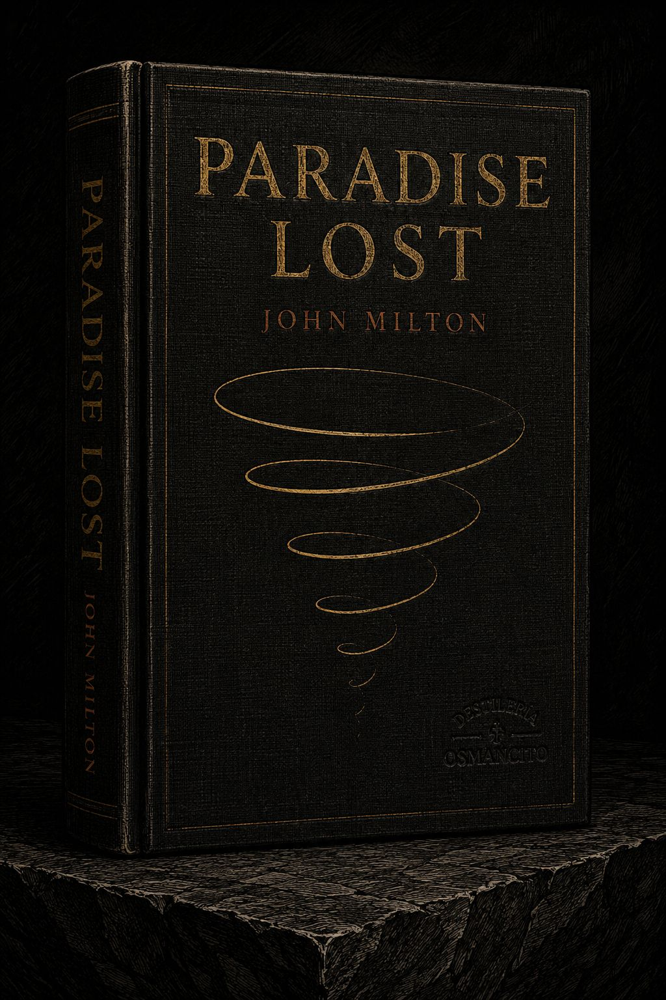
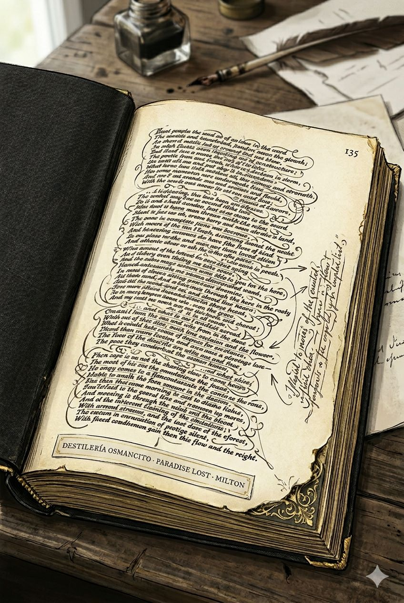
Este corpus pesa. No por su extensión: por la gravedad de lo que contiene. Es un poema escrito por un hombre ciego sobre la luz. Es una teología escrita por un rebelde sobre la obediencia. Es una épica que encuentra en el antagonista más fuerza dramática que en el héroe. Su temperatura es la del fuego que no ilumina —la “darkness visible” del Infierno de Milton, donde las llamas producen sombra en lugar de claridad. La tensión que lo atraviesa de principio a fin es esta: la grandeza y la ruina son la misma cosa vista desde distintos ángulos, y el poema nunca elige del todo cuál admirar.
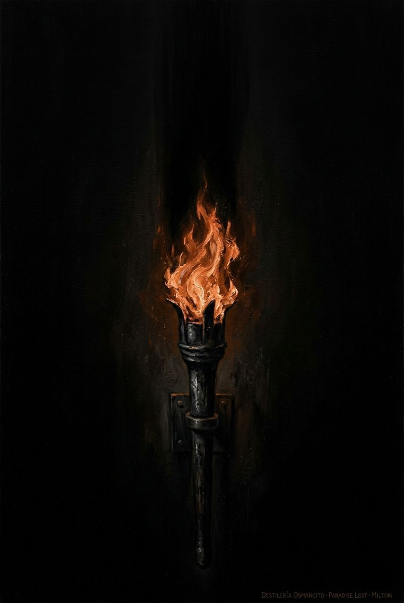
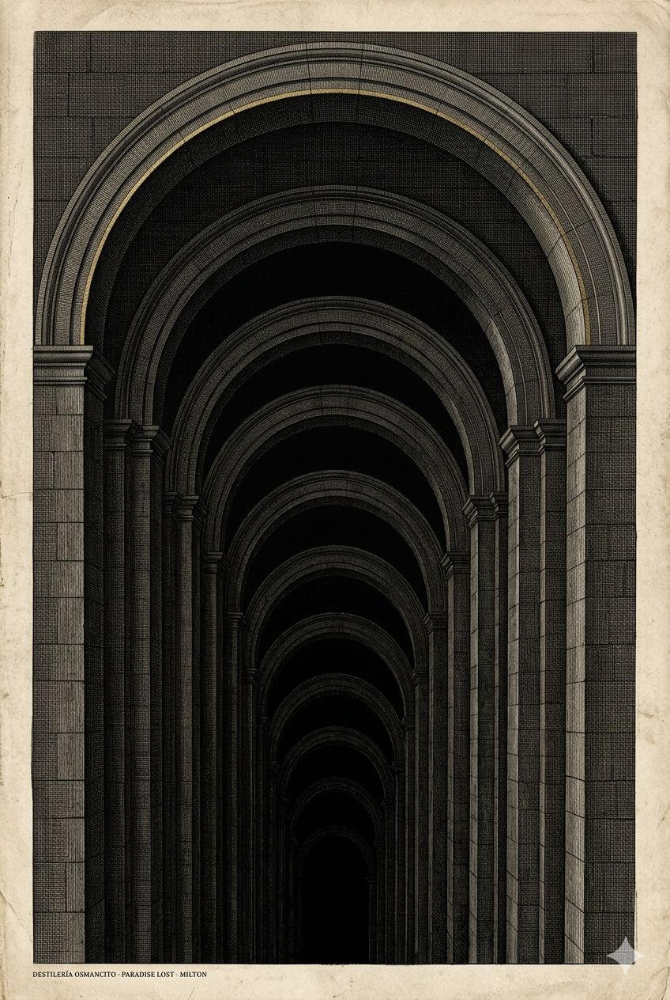
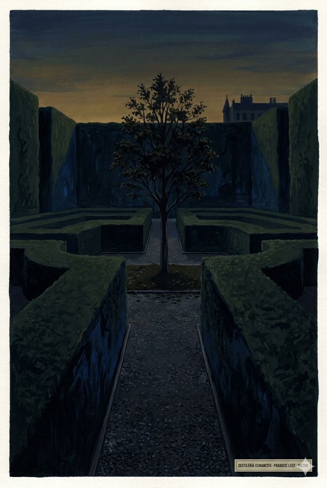
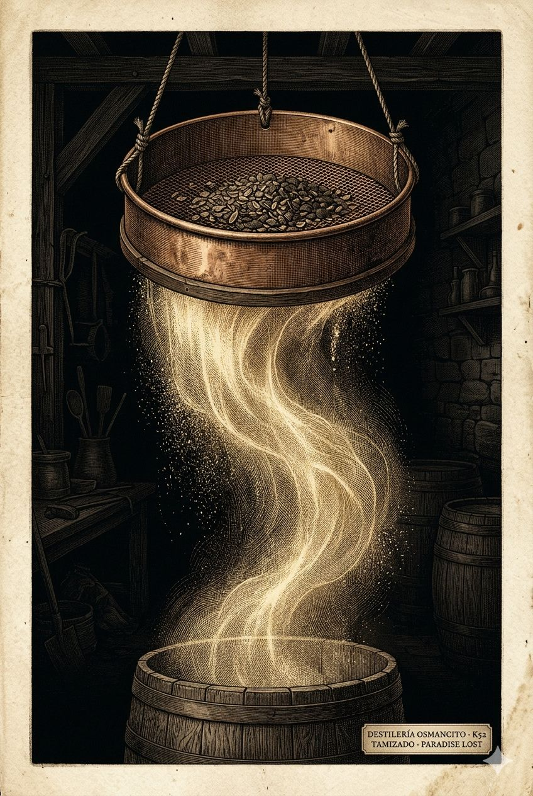
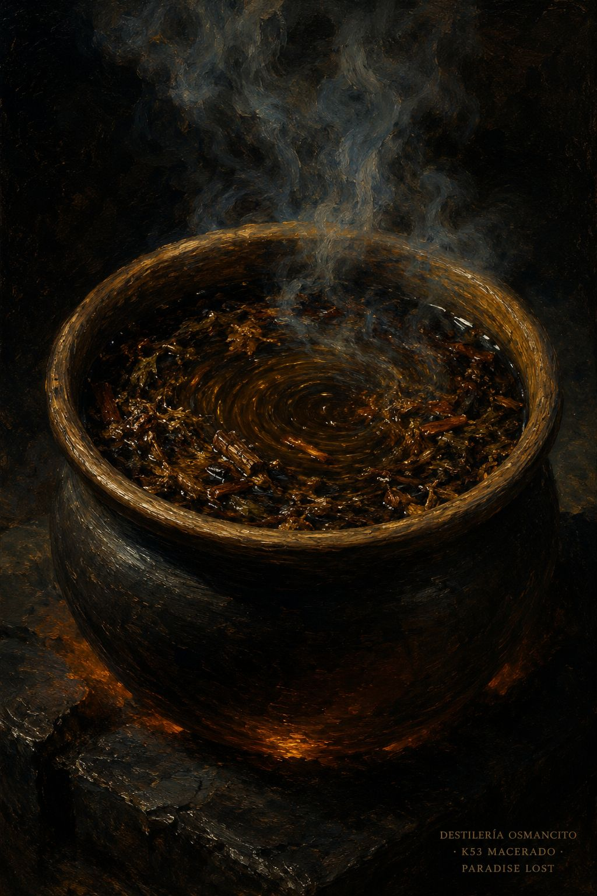
Canto la primera desobediencia del Hombre, y el fruto de aquel Árbol prohibido cuyo sabor mortal introdujo la Muerte en el mundo y toda nuestra aflicción, con la pérdida del Edén, hasta que un Hombre más grande nos restaure y recupere el asiento bienaventurado: cántame esto, Musa celestial, que en la cumbre secreta del Oreb o del Sinaí inspiraste a aquel Pastor que enseñó primero a la grey elegida cómo los Cielos y la Tierra se alzaron del Caos. O si el Monte de Sión te complace más, y el Arroyo de Siloé que corría veloz junto al Oráculo de Dios, desde allí invoco tu socorro para mi Canto aventurado, que con vuelo nada mediano pretende remontar sobre el Monte Aonio mientras persigue cosas no intentadas aún en Prosa ni en Rima.
Y principalmente a Ti, oh Espíritu, que prefieres sobre todos los Templos el corazón recto y puro: instrúyeme, pues Tú lo conoces; Tú estuviste presente desde el principio y con tus poderosas alas extendidas, a semejanza de Paloma, te cerniste sobre el vasto Abismo y lo volviste fecundo. Lo que en mí hay de oscuro, ilumínalo; lo que hay de bajo, elévalo y sostenlo; para que a la altura de este gran Argumento pueda afirmar la Providencia Eterna y justificar los caminos de Dios ante los hombres.
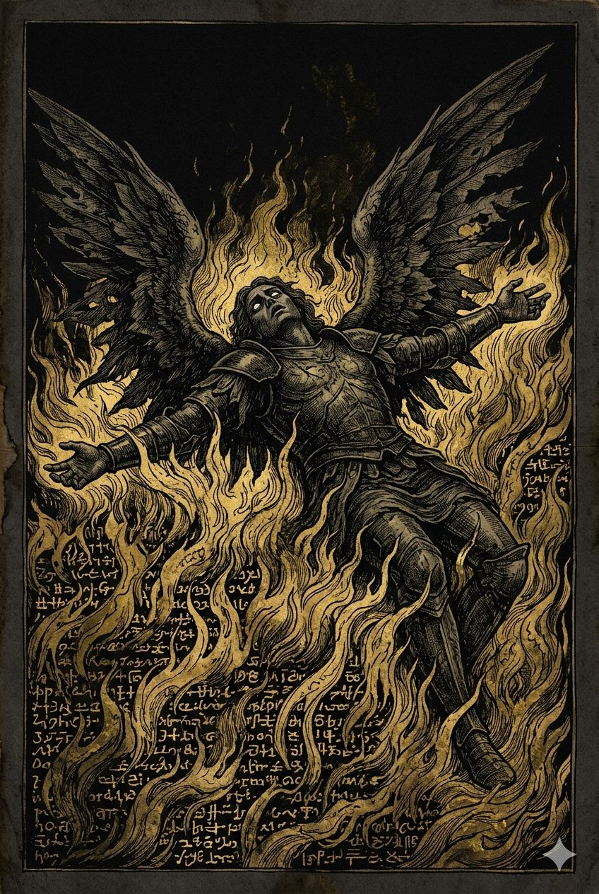
Di primero cuál fue la causa que movió a nuestros Primeros Padres, favorecidos del Cielo en tan alto grado, a apartarse de su Creador y transgredir su voluntad por una sola prohibición, siendo por lo demás señores del mundo. ¿Quién los sedujo primero a aquella fea rebelión? La Serpiente Infernal; él fue, cuya astucia encendida de Envidia y Venganza engañó a la Madre del Género Humano, en el tiempo en que su Orgullo lo había arrojado del Cielo con toda su Hueste de Ángeles Rebeldes, mediante cuyo auxilio, aspirando a ponerse en Gloria por encima de sus Pares, había confiado igualar al Altísimo, si se le oponía; y con ambiciosa mira contra el Trono y la Monarquía de Dios levantó impía Guerra en el Cielo y Batalla soberbia, con vano intento.
A él el Poder Omnipotente lo arrojó de cabeza, en llamas, desde el Cielo Etéreo, con horrenda ruina y combustión, hasta la perdición sin fondo, allí para morar en Cadenas Adamantinas y Fuego penal, él que osó desafiar al Omnipotente en armas.
Nueve veces el espacio que mide el Día y la Noche para los hombres mortales yació él con su hórrida tropa vencido, revolcándose en el Golfo ardiente, confundido aunque inmortal. Pero su condena lo reservaba para mayor ira; pues ahora el pensamiento de la felicidad perdida y del dolor perdurable lo atormenta. A su alrededor arroja sus ojos baleficiosos que atestiguan enorme aflicción y consternación mezclada con obstinado orgullo y odio arraigado. De un solo vistazo, hasta donde alcanza la visión de un Ángel, contempla la situación desdichada, yerma y salvaje: un Calabozo horrible, por todos lados en derredor como un gran Horno en llamas, pero de aquellas llamas ninguna luz, sino más bien oscuridad visible que sólo servía para descubrir visiones de miseria, regiones de dolor, sombras dolientes donde la paz y el reposo no pueden morar jamás, donde la esperanza no llega nunca, esa que llega a todos; sino tormento sin fin, todavía urgente, y un Ígneo Diluvio, alimentado con Azufre perpetuo no consumido.
Tal era el lugar que la Justicia prepara para aquellos rebeldes. Allí Satán, así pues llamemos en adelante a este Arcángel arruinado, vencido mas no domeñado, levanta la vista de las llamas. Turbado en su aspecto, aunque no en su corazón —porque en su mirada aún brillaba la voluntad indomable y el estudio del odio, el orgullo insuperable y el propósito de no doblegarse jamás ni arrepentirse— y con esa voz que en otro tiempo sacudía el Cielo, rompió el horrible silencio y se dirigió así a su próximo en crimen y en castigo, Belcebú, que en el brillo del Cielo fue el siguiente a él en Poder y Crimen, ahora siguiente en su miseria y en su mal:
—¿Eres tú aquel Espíritu, aquel Poder que antes del último batallar moraba en la dicha, si la dicha puede llamarse al estado donde la voluntad y la razón —la Razón es también la elección— quedan inútiles? ¿Cuánto ha caído él, aquel cuya fuerza de mente era igual a la del Cielo, cuya prudencia igualaría a la de los dioses, que solo por envidia de su excelencia fue arrojado de allí? Pero oh, ¡cómo caído! ¡Cuán diferente de aquel que resplandecía entre los demás Tronos! Mas decídme, camarada de lucha, compañero en los más altos intentos: ¿qué pensáis? ¿Nos ha dominado el Eterno para siempre? ¿Su ira o su poder se ha de establecer sobre nosotros, o volveremos a reunir fuerzas, a tentar otro encuentro, a probar si puede haber alguna devolución de ventaja lograda por fuerza o por fraude?
Así habló el Archénemigo, y con palabras vestidas de orgullo altivo, aunque manchadas por el dolor, respondió Belcebú con semejante desvarío. Satán escuchó, y sin embarazo de ánimo ni vacilación de mano, respondió:
—Caído el Querub, caído con nosotros desde el amanecer de la Creación, compañero mío de miseria, ¿qué importa dónde, si soy todavía el mismo, y en mí lo que queda de mente nunca ha de doblegarse ni someterse? Esa Gloria nunca ha de arrebatárnosla el vencedor, ese sentido del daño merecido, ese Odio sempiterno y la Voluntad de no ceder jamás. Aquí por lo menos reinaremos seguros, y, a mi juicio, reinar es dignidad, aunque sea en el Infierno: mejor reinar en el Infierno que servir en el Cielo.
Pero el trabajo de levantarse del Lago no espera más. Él convoca a su legión: los que todavía yacen sobre el ígneo Diluvio, aturdidos y estupefactos. Y como con la voz de un trueno que despierta a los muertos, los llama, y ellos obedecen; se levantan en filas innumerables como langostas, tropas sin cuento, cubriendo el firmamento del Infierno con sus sombrías huestes, ennegreciendo el ya negro aire.
Y así se construye Pandemonium, palacio del gran Lucifer, alzado como por exhalación con pilastras y tejados dorados y torres babilónicas; las puertas angostas como si fueran el secreto de una maquinaria que se despliega sola; obra de Arte más bella que lo que Menfis o el Capitolio podrían mostrar. Allí se congrega el Consejo de los caídos para deliberar sobre lo que se ha de hacer.
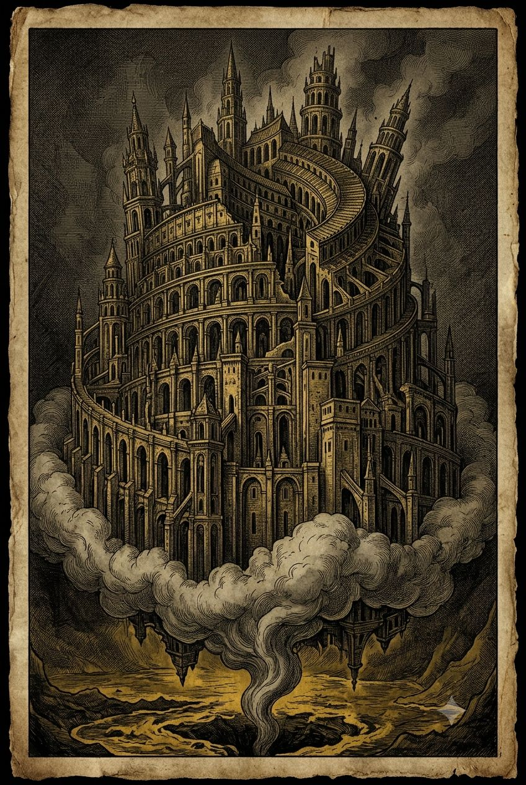
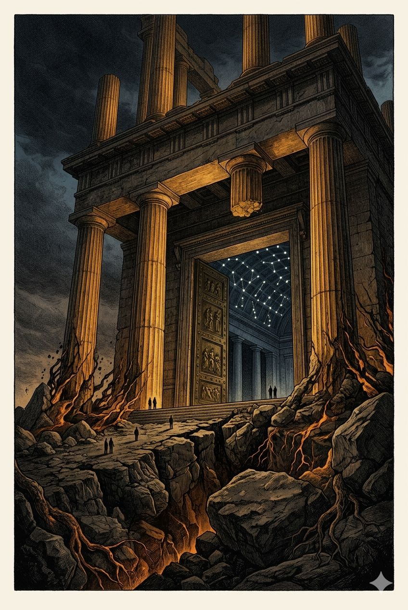
Sentado en alto Trono de Real Estado, que superaba en esplendor las riquezas de Ormuz y de la India, o cuanto el opulento Oriente derrama sobre sus reyes en perlas bárbaras y oro, Satán exaltado se asentaba, elevado por su mérito al mal eminente. Y desde la desesperación, así alzado más allá de la esperanza, aspira más allá aún, insaciable en perseguir la Guerra vana contra el Cielo.
En ese Consejo, Moloc habló primero, el más fiero y soberbio de los espíritus que cayeron, lleno de rabia abierta, y más potente en esto que en sutileza, displicente del temor. Su consejo era la guerra abierta, el asalto directo, más honroso que la alternativa: preferir antes la destrucción que mantenerse en este retiro abyecto. Belial se levantó después, en figura grácil y semblante sereno; ningún espíritu más disuelto en la lasitud, o más intemperante, y sin embargo cargó sus palabras de razón, aunque su intención era siempre baja e innoble, sólo la pereza y la expectativa de poder en algún tiempo aflojar la ira del Todopoderoso.
Mamón alzó entonces la voz, el último entre los que cayeron del Cielo, pues incluso en el Cielo sus pensamientos estaban bajos, siempre desviando la vista hacia los pavimentos del Cielo de oro, más admirado de sus riquezas que de ninguna visión Beatífica. Lo que propuso fue edificar aquí, en el Abismo, un imperio igual o superior al Cielo perdido.
Pero Belcebú habló al fin, y habló en último término y con más autoridad, con majestad principesca: propuso dirigir su malicia contra una nueva raza que se decía habitaba el reciente mundo, a quienes el Creador había destinado para llenar el lugar vacío de aquellos ángeles expulsados. Corromperlos o seducirlos a nuestra parte, dijo, sería victoria más ingeniosa y más duradera que cualquier batalla directa. Propuso, pues, enviar a uno solo a explorar ese nuevo mundo: ¿quién emprenderá el viaje?
Largo silencio respondió, y nadie fue tan voluntarioso, de tan altos intentos, de tan desesperada magnanimidad, como para proponerse a sí mismo para la empresa: el viaje a través del Caos inmensurable, sin camino trazado, sin guía, entre los poderes del Aire Impuro y las Tinieblas exteriores, sin otra perspectiva que incertidumbre y peligro. Entonces Satán previno a todos: antes de que se formase otra propuesta, se levantó y se ofreció, él solo, al empeño. Con ello se hizo acreedor de la admiración de toda la asamblea, y entre los aplausos del Consejo marchó hacia las puertas del Infierno.
Allí encontró a Pecado y a Muerte guardando las puertas: Pecado, aquella figura resplandeciente por la cintura arriba, femenina y hermosa, pero que terminaba en un horrendo agregado de monstruos serpentinos que ladraban incesantemente; Muerte, sombra oscura, no distinguible en miembro, articulación ni figura, feroz como diez Furias. Pecado reconoció a Satán: era ella quien había surgido de su cabeza cuando por vez primera concibió el pensamiento de la rebelión, y Muerte era el fruto de su unión. Con llave de diamante le abrió las puertas. Y Satán partió a través del Caos.
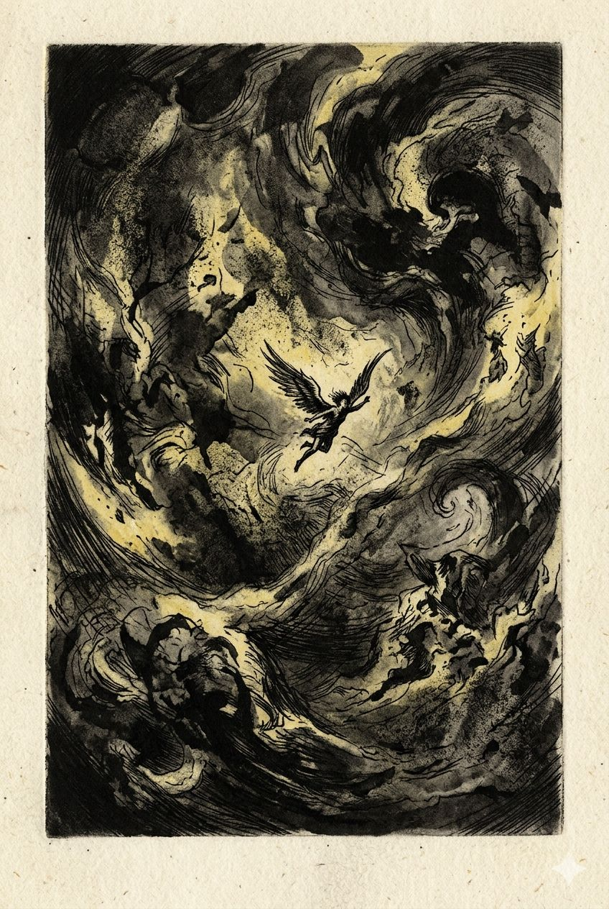
¡Salve, Luz santa, primogénita del Cielo! ¿O debo llamarte coeterno rayo del Eterno? Pues Dios es Luz, y nunca sino en Luz inaccesible moró desde la Eternidad. A ti vuelvo ahora con ala más audaz, escapado de la Laguna Estigia, aunque largo retenido en aquella morada oscura, mientras en mi vuelo a través de la oscuridad absoluta e intermedia, con otras notas que las de la Lira Órfica cantaba el Caos y la Noche Eterna. A ti, Luz, me vuelvo, mas tú no visitas mis ojos.
Desde su Atalaya del Cielo, Dios miraba hacia abajo sobre todo lo creado: contempló con ojos que todo lo penetran el viaje de Satán a través del Caos; y mirando hacia la Tierra recién creada, vio a nuestros primeros padres, ambos no mucho inferiores a sí mismo en conocimiento, y libres para mantenerse firmes o caer. Los previó en su libre albedrío cediendo a la tentación del Enemigo, y profetizó entonces lo que era infalible e irremediable. Mas no dejó sin provisión el hecho: el Hijo se ofreció a sí mismo para rescatar al Hombre caído. Y el Padre aceptó la ofrenda del Hijo, que habría de descender un día al mundo creado, y sufrir, y morir, y resucitar. Así quedó dispuesto el contrapeso del Cosmos: una voluntad descendía hacia la corrupción; otra voluntad descendía hacia la redención.
Satán, ignorante de este decreto, llegó finalmente al umbral de la Tierra.
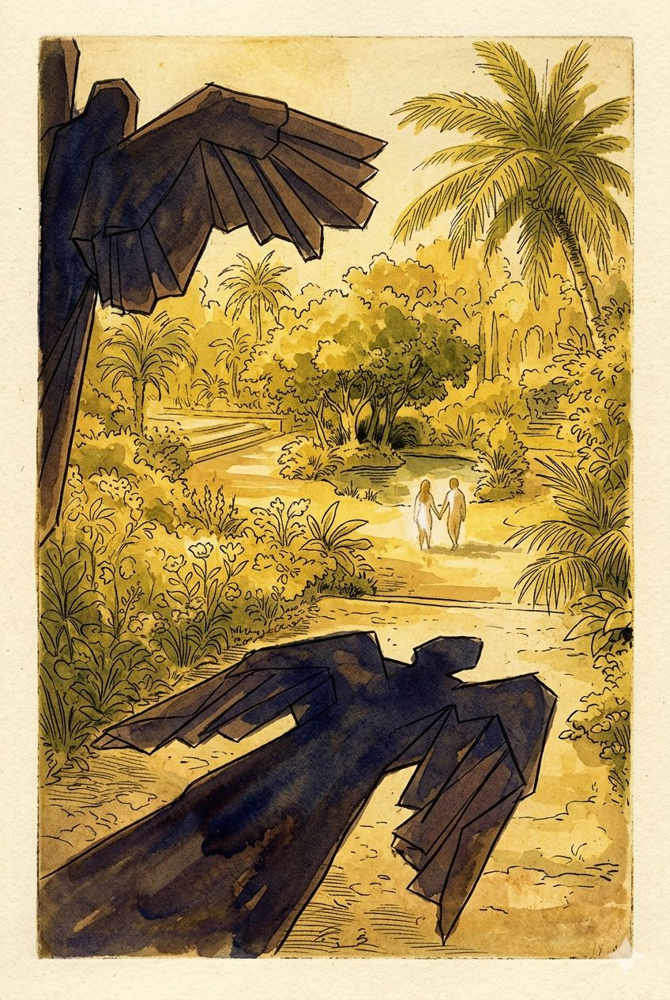
Oh, qué era necesaria aquella voz de aviso, que el que vio el Apocalipsis oyó clamar en el Cielo en voz alta cuando el Dragón, desterrado a segunda derrota, bajó furioso a vengarse de los hombres. ¡Ay de los Habitantes de la Tierra! Pues ahora Satán, inflamado por vez primera de cólera, bajó, el Tentador antes que el Acusador del género humano, a desfogar en el inocente y frágil Hombre su pérdida de aquella primera Batalla.
Al llegar al Edén, Satán se detuvo. Y en ese instante de contemplación, algo que en él aún era reconocimiento —la última hebra de lo que en otro tiempo fuera capaz de ver la belleza sin querer destruirla— se desgarró. Contempló el Jardín: colinas de uva, de rosas sin espinas, de mirto oloroso, de palmeras, de cedros cuya sombra era como la de una noche apacible, de manantiales que corrían sobre pisos de alabastro, de flores de toda especie. Y en el centro del Jardín, los que lo habitaban.
Eran hermosos. Dignos de la Divinidad en su aspecto. Adán, elevado y heroico, el más alto que cualquier otro de los hijos del Hombre, con su frente ancha y limpia y sus ojos oscuros que declaraban la razón absoluta, la voluntad sin miedo, la sanción de Dios en su semblante. Eva, agraciada y delicada, no inferior en dignidad, aunque más propensa a la gracia que a la majestad, con sus cabellos que caían como velo dorado sobre sus hombros y los ocultaban sólo a medias. Los dos desnudos, y sin vergüenza.
Satán los miró. Y lo que sintió no fue triunfo. Fue el horror de quien reconoce lo que ha perdido. Habló entonces consigo mismo, en el único soliloquio honesto que jamás le saldrá de los labios:
—Oh infierno, ¿qué veo? ¡Cuánta virtud, cuánta amorosa gracia, cuánta felicidad! Felices criaturas, que vuestro estado es el bien. Pero no el mío; muy lejos de él es el mío. Mas ¿qué debería ser, podría serlo, si pudiera volver la vista atrás, y contemplar cuán grande era el bien que poseí, y el bien que aún podría poseer? Mas el arrepentimiento es más que yo puedo hacer. La ira sin límite ni reparación que el Todopoderoso ha lanzado sobre mí como un diluvio ha hardecido todo dentro de mí. Así que el Adiós al Arrepentimiento. ¿Qué camino queda? El mal sea mi bien.
Y al decirlo, no lo creyó del todo. Pero siguió. Porque la única alternativa era doblegarse, y eso era lo único que no podía.
Esa noche, disfrazado de diferentes animales, vagó por el Jardín escuchando los diálogos de Adán y Eva, aprendiendo su naturaleza, su amor, la prohibición que Dios les había dado: no comer del Árbol del Conocimiento del Bien y del Mal. En el rostro de Eva leyó lo que necesitaba leer: la curiosidad no suficientemente satisfecha, el deseo de más de lo que se le había dado, no por codicia vulgar sino por el instinto más hermoso y más peligroso de la criatura racional, que es querer comprender lo que aún no comprende.
Los ángeles guardianes lo descubrieron esa madrugada, inclinado sobre el oído dormido de Eva, infundiendo sueños. Uriel lo identificó. Fue expulsado del Jardín. Pero no abandonó su empresa.
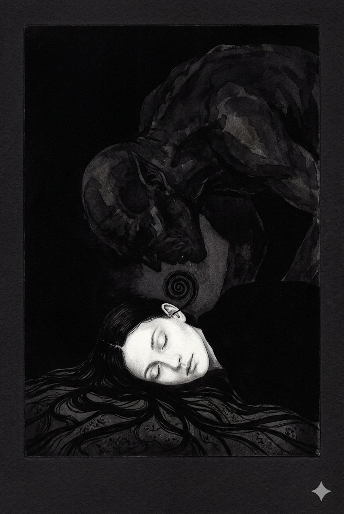
Al día siguiente, el Arcángel Rafael descendió al Jardín enviado por Dios para advertir a Adán: que el Enemigo estaba rondando, que era real el peligro, que debía usar su razón y su voluntad para resistir. Y Adán lo recibió con hospitalidad, y Eva preparó el frugal festín, y entre ellos hablaron largamente.
Rafael narró la guerra en el Cielo: cómo Lucifer, el más brillante entre los ángeles, concibió un día el pensamiento de que no era menor que el Altísimo, y reunió a un tercio de las huestes celestiales para rebelarse. Cómo durante dos días de batalla celestial los ángeles fieles y los caídos se acometieron con lanzas de luz y montañas arrancadas de raíz, con truenos y relámpagos, y ninguno pudo vencer al otro, porque los ángeles inmortales no mueren aunque sean heridos. Cómo al tercer día el Padre envió al Hijo en su Carro de fuego, armado con el Trueno, y sólo el Hijo bastó para lo que un ejército no había podido: Lucifer y sus rebeldes fueron arrojados de los muros del Cielo hacia el Abismo, cayendo durante nueve días y nueve noches.
—Te cuento esto —dijo Rafael a Adán— no para que temas, sino para que sepas de qué está hecho aquel que viene contra ti. Aquel que corrompe los ángeles puede corromper a los hombres. Su arma es la misma que usó en el Cielo: la seducción del orgullo, la insinuación de que puedes ser más de lo que ya eres. Cuídate de ese pensamiento.
Adán escuchó. Preguntó sobre la estructura de los cielos y los planetas, sobre el movimiento de las esferas. Rafael respondió con cautela: algo de lo que el hombre puede saber, y algo que sobrepasa la medida de su conocimiento. Lo que el hombre necesita saber es lo que le atañe directamente: amar a Dios, amar a Eva, y no tocar el Árbol.
—Lo que está fuera de tu alcance —dijo Rafael al despedirse—, déjalo. Lo que tienes es suficiente para la felicidad: la razón, la voluntad, el amor. No hay mayor bien que ese.
Ahora debemos cambiar las notas por trágicas: traición fea, deslealtad y rebelión del lado del Hombre; alejamiento, distancia y enojo del lado del Cielo; y el juicio que introdujo en este mundo un mundo de miseria, el Pecado y su sombra la Muerte, y la tribulación, heraldo de la Muerte.
Satán regresó al Jardín. Escogió el cuerpo más bajo que encontró disponible: la serpiente, que en aquel tiempo antes de la maldición era la más hermosa y sutil de todas las bestias del campo.
Eva se había separado de Adán esa mañana. Hubo entre ellos, antes de separarse, un diálogo que en apariencia fue sobre la conveniencia del trabajo solitario, pero que en su fondo era algo más: Eva argumentó que su virtud no podía ser auténtica si dependía de la presencia de otro para sostenerse. Adán la advirtió con amor, sin mandato. Eva insistió. Y Adán cedió, porque no sabía cómo negarle lo que pedía sin herir lo que más amaba en ella: su libertad.
Fue el primer error. No el de Eva, sino el de Adán: dejar ir lo que sabía que no debía dejar ir, por amor, y confundir el respeto de su libertad con la renuncia a su responsabilidad.
La serpiente la encontró sola junto al Árbol. Y habló. Y en el hablar de la serpiente había algo que nunca antes había escuchado Eva: la voz de la adulación inteligente. La serpiente le dijo que había comido del fruto y había adquirido el habla y la razón. ¿Acaso no sería igual de benéfico para ella? ¿Acaso Dios les había prohibido el fruto por temor a que ellos fueran como Él?
El argumento de la serpiente era el argumento de Satán en el Cielo, disfrazado apenas: que quien prohíbe algo lo hace por miedo, y que el miedo sólo se siente ante un igual o un superior. La insinuación no era grosera. Era casi filosófica. Y Eva, que era inteligente y había sido creada para pensar, pensó.
Pensó, y al pensar no cometió ningún error todavía. El error no estaba en pensar. El error estaba en el instante siguiente, cuando el pensamiento encontró en ella la tierra preparada para recibirlo: el deseo de más que ya existía antes de que la serpiente llegara, no como vicio, sino como la sed natural de una criatura racional a quien se le ha mostrado un límite sin explicarle completamente por qué existe ese límite. La serpiente no creó ese deseo. Lo encontró. Y lo usó.
Y Eva miró el árbol. Y era hermoso. Y el fruto era deseable, y deseable a los ojos, y deseable para alcanzar el conocimiento. Y cogió del fruto y comió.
La Naturaleza respondió antes de que ella comprendiera: un gemido corrió por la Tierra, las nubes se oscurecieron, las flores inclinaron la cabeza. No como metáfora: como señal real de algo que en el orden del cosmos se había roto, una cuerda que nunca más sonaría igual.
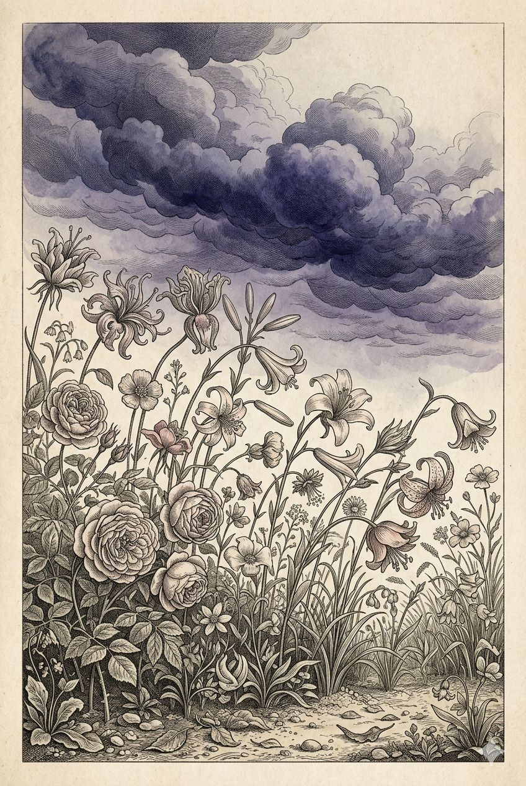
Eva regresó a Adán con el fruto en la mano. Y Adán la vio, y vio lo que había hecho, y lo comprendió antes de que ella terminara de hablar. Quedó sin palabras un momento, sin vida, y de su mano sin fuerza cayó la guirnalda de rosas que había trenzado para ella. Entonces habló:
—¿Cómo pudiste, oh Eva? ¿Cómo pudo suceder esto? Pero no importa ya cómo sucedió. Estás perdida. Y yo no puedo vivir sin ti, ni en esta naturaleza ni en otra condición, aunque fuera en otra vida. Si la muerte ha de ser nuestra condena, la afrontaré contigo. Contigo decidí vivir; contigo, si ha de ser así, moriré.
Tomó el fruto. Y comió.
No porque lo engañaran. Sino porque no pudo imaginar la existencia sin Eva, y ese amor que no podía imaginar la existencia sin otro era la grandeza y la ruina de Adán en un solo acto. La caída de Adán no fue debilidad de intelecto sino exceso de corazón: amó lo creado más que al Creador, y en ese orden invertido estaba ya el germen de todo el desorden que seguiría.
Entonces los ojos de ambos se abrieron. Y supieron que estaban desnudos. Y el conocimiento de su desnudez no fue un saber nuevo sino el reconocimiento de lo que habían perdido: la inocencia que hace que la desnudez no signifique nada, que la hace tan natural como el vuelo de los pájaros.
Se cubrieron con hojas de higuera. El primero de todos los ropajes humanos: la vergüenza hecha tela.
El Pecado y la Muerte, que habían esperado en las puertas del Infierno, sintieron el cambio en el aire del Cosmos. Y construyeron una calzada desde las puertas del Infierno hasta la Tierra nueva: camino ancho y pavimentado para el tráfico de la miseria, puente sobre el Abismo para que nada bueno pudiera en adelante llegar a los hombres sin pasar antes por su peaje.
Satán regresó al Infierno victorioso. Proclamó su conquista. Y en el instante de la proclamación, él y todos los suyos se transformaron en serpientes: cuerpos que se retorcían y silbaban incapaces de articular palabra, cuerpos condenados a arrastrar el vientre sobre la tierra por el resto de la eternidad, pues así el crimen porta en sí mismo su castigo sin esperar decreto.
El triunfo se convirtió en su propia humillación. Ésta es la última ironía de la arquitectura del mal: que quien procura dañar a otro siempre acaba transformado en la naturaleza de su propia maldad.
En el Jardín, Adán y Eva se acusaron mutuamente. Las palabras que habían sido antes reconocimiento y ternura se convirtieron en armas: el primer divorcio del lenguaje humano, la primera vez que la voz sirve para herir en lugar de para revelar. Adán culpó a Eva. Eva respondió culpando a Adán. Y en el ir y venir de esa acusación mutua estaba ya el modelo de todo conflicto humano: la incapacidad de sostenerse en la responsabilidad propia ante el dolor de la pérdida.
Pero cuando el calor de la disputa se agotó, cuando la noche cayó y el silencio ocupó el lugar de los reproches, algo distinto ocurrió. Eva fue hacia Adán. Se arrodilló. Habló despacio, sin artificio:
—Adán. La falta es mía. No tuya. Tuya fue la lealtad que te perdió. Si hay pena que sufrir, que sea sobre mí, que fui la causa. No te pido que la compartas sino que la entiendas. Y si Dios ha de castigarnos, que me castigue a mí primero. Dame sólo esto: que no me abandones. Que sea contigo, aunque sea en la ruina.
Adán la miró largo tiempo. En su cara estaba el rastro de todo lo que había cruzado esas horas: el miedo, la ira, la acusación, la vergüenza, y debajo de todo eso, sin desaparecer nunca aunque él hubiera querido que desapareciera, el amor. El amor que había sido su perdición seguía siendo su sustancia. No podía odiarlo sin odiarse. No podía borrar a Eva sin borrarse.
Y la levantó. No porque la absolviese ni porque se absolviese a sí mismo, sino porque en ese gesto de Eva había algo que reconoció como más poderoso que el error: el amor que asume su parte sin esperar que el otro asuma la suya primero. La humildad que no espera ser invitada. La entrega que no negocia condiciones. Eso era lo que Eve le daba en ese momento, arrodillada en el suelo del Jardín que pronto dejaría de ser suyo, y ese don era mayor que cualquier acusación que hubiera podido lanzarle en las horas anteriores.
Ese amor era todavía real. Quizás era lo único todavía real, lo único que había sobrevivido intacto al naufragio de la tarde.
Decidieron orar. Sin que nadie se los indicara, sin ángel que los instruyera en ese momento, los dos se arrodillaron en el suelo del Jardín que ya no sería suyo por mucho tiempo, y oraron. Y sus oraciones subieron al Cielo como incienso, y pasaron por las puertas doradas sin impedimento, y llegaron. Y la Gracia, que desciende antes de que se la pida cuando el corazón está dispuesto a recibirla, descansó sobre ellos.
No los liberó de la consecuencia. La consecuencia no puede deshacerse: esa es la condición de los actos libres. Pero les quitó la piedra del corazón y puso en su lugar carne nueva: la capacidad de seguir.
El Arcángel Miguel descendió para ejecutar la sentencia: debían abandonar el Jardín. Pero antes de llevarlos afuera, le mostró a Adán en visión el tiempo que vendría.
Adán vio a Caín matar a Abel: la primera muerte entre hermanos, el primer asesinato, la primera vez que el amor podría haberse dado y no se dio. Vio epidemias, guerras, ciudades levantadas sobre la sangre de los vencidos, reinos que se alzaban y se derrumbaban. Vio el Diluvio, y a Noé y su familia preservados en el arca, únicos vestigios de lo que había podido ser. Vio la Torre de Babel y la confusión de lenguas: el primer momento en que el lenguaje, el don más alto de la criatura racional, se convirtió en instrumento de separación.
Vio a Abraham, y a Moisés, y la travesía del desierto, y la Ley entregada en el Monte. Vio la sucesión de los Reyes, y su fracaso, y la cautividad. Y luego vio algo que el Ángel sólo le describió, porque sobrepasaba la capacidad de representación de cualquier imagen: el Hijo naciendo en pobreza, viviendo en humildad, muriendo en tormento, y resucitando. El mayor acto de amor de la historia del Cosmos: el que podía no morir eligiendo morir por aquellos que eligieron mal.
Adán escuchó todo esto y habló cuando el Ángel terminó:
—Ahora veo que por encima de todo lo que he perdido subsiste algo que no pierde. Veo que el Bien puede nacer del Mal, aunque el Mal lo ignorara al concebirlo. Veo que hay un camino que no estaba dibujado antes de la caída y que sólo existe porque la caída ocurrió. No me alegro de haber caído; pero tampoco me desespero, sabiendo lo que sé.
Miguel asintió. Tomó entonces a Adán de la mano, y despertó a Eva que dormía cerca con sueños apacibles, sueños que fueron ellos mismos una gracia: que la última noche en el Paraíso no fuera de insomnio y terror sino de descanso preparatorio. Y los condujo hacia la puerta oriental del Jardín.
Adán no preguntó si podía quedarse. Sabía que no. Sabía desde el instante en que comió que el Jardín ya no podía ser su lugar, no por castigo arbitrario sino por lógica interior: quien ha adquirido el conocimiento del Bien y del Mal no puede seguir viviendo en la inocencia como si no lo hubiera adquirido. El Jardín no era un castigo que se les retiraba. Era una condición de la que habían salido solos. La puerta que cerraba el Querubín no los encerraba fuera: confirmaba que ya habían salido.
El Querubín en llamas cerró la puerta detrás de ellos. La espada giratoria tapió la entrada. El Jardín quedó atrás, inasequible para siempre, o al menos para todo el tiempo que se llama siempre en la duración del mundo.
Miraron atrás, los dos. Era inevitable. No se puede abandonar el único mundo que se ha conocido sin volverse a mirar una vez, aunque el ángel de fuego que cierra la puerta te quite la esperanza de regreso. Miraron el lado oriental del Paraíso, su asiento feliz tan reciente, ondulado sobre él el Rayo ardiente, la Puerta aglomerada de Caras terribles y Armas ardientes.
Luego se volvieron hacia adelante. Y el mundo entero era ante ellos. El mundo entero: vasto, desconocido, sin camino trazado, sin costumbre que indicara qué hacer después de esto, sin memoria de haberlo habitado antes. El mundo entero, que antes de ese momento era sólo nombre y desde ese momento era morada.
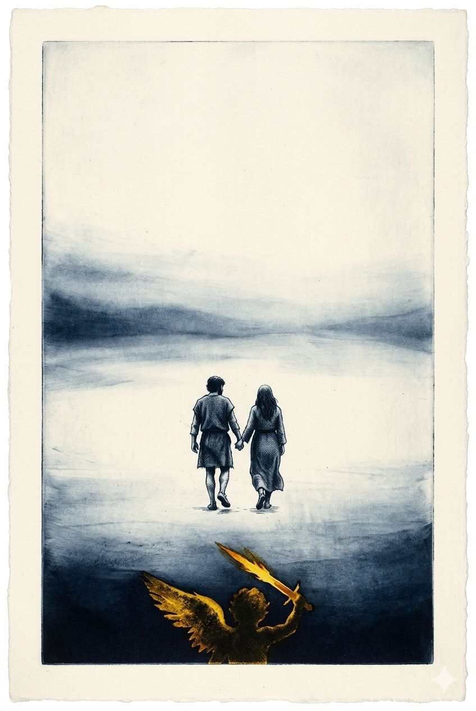
De la mano, con pasos errantes y lentos, tomaron su solitario camino a través del Edén.
De la mano: porque hay cosas que no se pueden atravesar solos aunque se sean dos.
Lentos: porque no hay prisa cuando no se sabe adónde se va.
Solitarios: porque nadie más ha caminado nunca exactamente por aquí, después de exactamente esto, siendo exactamente estos dos. La soledad del hombre no es la ausencia del otro; es la imposibilidad de que el otro sea tú. Adán y Eva, juntos y solos: esa es la condición que el poema lega al lector como su herencia más exacta.
Y el poema termina donde la vida humana comienza siempre: en el primer paso después de la pérdida, que es el único paso que realmente importa porque es el que demuestra que todavía se puede caminar.
Aquí concluye el Paraíso Perdido, reescrito en su espíritu, en prosa, en la voz de su autor, que fue ciego y vio más que muchos, que perdió todo y no calló, que justificó los caminos de Dios ante los hombres no porque fuera fácil sino porque era necesario, y que terminó su gran poema con dos figuras humanas caminando juntas hacia lo desconocido, que es la imagen más verdadera que existe de lo que somos.
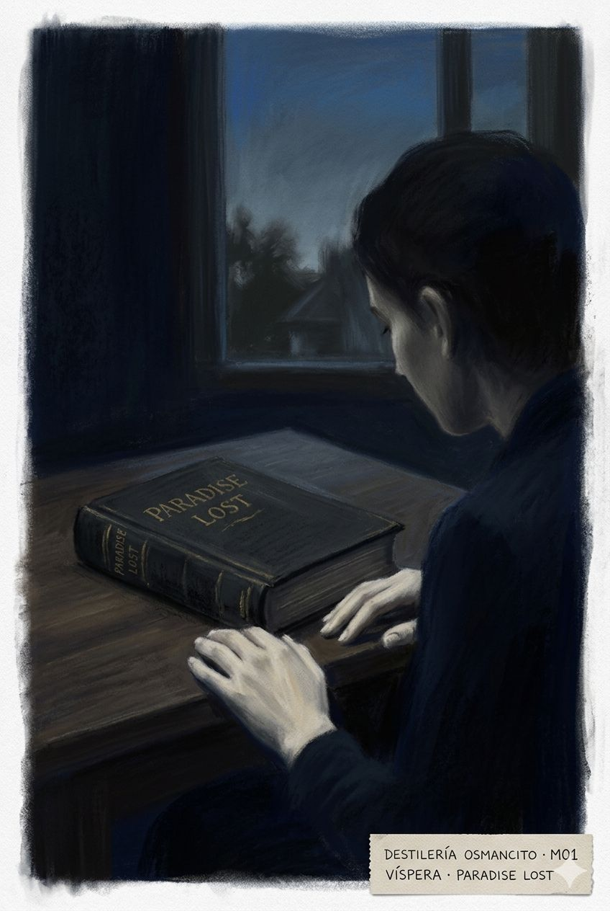
Thou —la segunda persona arcaica del inglés— es la palabra más viva de este poema, y eso lo dice todo: Milton no narra, interpela. Un hombre ciego escribe el más vasto de los paisajes —el cosmos, el infierno, el Edén, el cielo— y lo hace volteando a ver a alguien todo el tiempo. La pregunta que el poema trabaja sin declarar nunca no es si Dios existe, sino si puede ser justificado. Y la respuesta más poderosa no la da Dios: la da Satán, que cae con más elocuencia que cualquier ángel al ascender.
Un cosmos entero cargado en diez libros: no llega como libro sino como arquitectura —pesado, vertical, frío en la portada y ardiente adentro.
Lo que llega no es una historia. Es un argumento en el sentido antiguo: una causa que se defiende ante tribunal. Milton lo declara desde el primer verso —justifie the wayes of God to men— y esa declaración es distinta de resumir lo que el poema dice. Nombrar Paradise Lost como épica sobre la Caída es correcto y vacío al mismo tiempo. Lo que el corpus es, antes de lo que dice, es un acto de imputación: alguien, ciego y caído él mismo, toma partido en el proceso más antiguo del mundo occidental.
Título — Paradise Lost Autor — John Milton Año — 1667 (diez libros); 1674 (doce libros — esta edición sigue la división original en diez) Género — Poesía épica Extensión estimada — ~80,000 palabras / ~320 páginas / 10 libros Idioma original — Inglés Palabra más frecuente con contenido — thou (436 ocurrencias). El poema declara hablar sobre Dios y la Caída; la frecuencia revela que su gesto fundamental es la interpelación directa: alguien habla a alguien, sin parar, a través de diez libros y tres reinos.
Satán, expulsado del Cielo tras una guerra fallida contra Dios, desciende al Abismo y desde allí maquina la ruina de la nueva creación: el hombre. Consigue tentar a Eva en el Jardín del Edén; Eva tienta a Adán; ambos caen. El Hijo de Dios intercede por ellos; son expulsados del Paraíso pero con la promesa implícita de redención futura. El poema comienza en derrota y termina en exilio —no en triunfo.
Satán — ángel caído, arquitecto de la rebelión, figura central de los primeros libros; el personaje más vívido del poema. Adán — primer hombre; razona, duda, cede; cae por amor más que por debilidad. Eva — primera mujer; cae por curiosidad y por la lógica perversa de Satán; su caída es más compleja que la lectura simple de seducción pasiva. El Hijo (Cristo) — mediador; intercede pero no aparece con la potencia dramática de Satán. Dios Padre — voz de la necesidad y el plan; el personaje más difícil de habitar, el menos humano. Rafael — ángel mensajero; narra la guerra en el Cielo a Adán; opera como voz expositiva. Miguel — ángel del exilio; conduce a Adán y Eva fuera del Paraíso; profetiza la historia humana futura. Belcebú, Mammón, Moloch — ángeles caídos; voces del debate infernal en el Libro II.
Los libros I y II transcurren en el Infierno: Satán despierta derrotado, convoca a los suyos en el Pandemonium y propone corromper la nueva creación humana en lugar de asaltar el Cielo. En el Libro III, Dios observa desde arriba la trayectoria de Satán y el Hijo se ofrece como futuro redentor. En el Libro IV, Satán llega al Edén, observa a Adán y Eva, y siente por primera vez algo parecido al dolor ante su belleza —y lo suprime. Los libros V al VIII son expansivos y expositivos: Rafael visita a Adán, le cuenta la guerra en el Cielo y la creación del mundo, Adán narra su propio nacimiento. El Libro IX es el eje: la tentación de Eva, la caída de Adán, el quiebre del estado edénico. El Libro X entrega las consecuencias: juicio, transformación de Satán en serpiente, la entrada de la muerte en el mundo, el exilio anunciado. El poema no termina con condena sino con marcha: Adán y Eva salen del Paraíso tomados de la mano, hacia un mundo que es nuestro.
Antes de ser pensado, este poema pesa. Hay algo en él que no es grandiosidad sino densidad —como si cada verso cargara más de lo que puede mostrar a primera vista. Y luego está Satán: el corpus produce la incomodidad de quien descubre que el personaje más memorable del relato no es el héroe ni la víctima sino el derrotado que sigue argumentando. Eso no es un fallo de Milton. Es el nudo que el poema no puede —ni quiere— resolver.
Obediencia contra conocimiento — El Paraíso se pierde precisamente en el momento en que el conocimiento se desea más que la permanencia. El poema nunca resuelve si ese deseo era evitable o si era, desde el principio, parte del diseño.
La justificación de Dios contra la elocuencia de Satán — Milton declara que escribe para justificar a Dios; el corpus produce la sospecha de que Satán es el argumento más poderoso dentro del texto, y que el poema lo sabe.
La caída como pérdida contra la caída como inicio — El exilio del Edén es la tragedia que el poema llora y, al mismo tiempo, la condición de posibilidad de todo lo humano que vendrá. El poema habita esa contradicción sin resolverla: el último verso es un paso hacia adelante.
El corpus más narrativamente denso no es el Libro IX —el de la Caída, el que todos esperan. Es el Libro IV: Satán llega al Edén, ve a Adán y Eva, siente algo que no puede nombrar del todo —y lo aplasta. Ese aplastamiento es el evento más intenso del poema porque es el único en que el movimiento ocurre hacia adentro. Todo lo demás es estruendo; eso es silencio. Y el poema no lo señala. Ocurre y sigue.
[Libro I, apertura] — Satán despierta en el Abismo
Qué ocurre — Satán yace derrotado en el lago de fuego; despierta, convoca a Belcebú con la voz, y se levanta. El primer acto del poema es literalmente levantarse del suelo.
El giro — La derrota no lo reduce: lo primero que hace al despertar es reclamar que su voluntad es indestructible. El Infierno trae consigo; no lo recibe.
Intensidad — 80 %
[Libro I, final] — Construcción del Pandemonium
Qué ocurre — Los ángeles caídos, convocados, se reducen a tamaño minúsculo para caber en la sala del concilio infernal y construyen en tiempo récord una ciudad-palacio surgida de la tierra ardiente.
El giro — La arquitectura del Infierno imita la magnificencia del Cielo. La parodia es perfecta y, por eso, perturbadora.
Intensidad — 55 %
[Libro II, concilio] — El debate en el Pandemonium
Qué ocurre — Cuatro ángeles caídos debaten estrategia: Moloch exige guerra abierta; Belial, quietud pasiva; Mammón, construir un reino propio; Belcebú propone corromper la nueva criatura humana. Gana Belcebú —que habla por Satán.
El giro — El debate democrático es una farsa: la decisión ya estaba tomada antes de que comenzara. El poema lo sabe y lo deja ver.
Intensidad — 65 %
[Libro II, viaje] — Satán atraviesa el Caos
Qué ocurre — Satán sale solo del Infierno y cruza el Caos primordial —materia sin forma, tormenta sin dirección— para llegar al borde del mundo recién creado. En el camino, encuentra a Sin y a Death, que resultan ser su hija y su nieto.
El giro — El encuentro familiar es grotesco: Satán engendró a Sin de su propia cabeza, como una perversión de la Sabiduría divina. Death es producto del incesto. La familia infernal aparece antes de que aparezca la humana.
Intensidad — 70 %
Libro III — El Hijo se ofrece a morir
Qué ocurre — Dios Padre observa a Satán en camino y declara que el hombre caerá por su libre albedrío. Pregunta quién pagará el precio. El Hijo se ofrece voluntariamente a encarnarse y morir.
El giro — No hay drama en la oferta: el Hijo lo hace con serenidad absoluta. El gesto más monumental del poema —la Encarnación futura— ocurre como una conversación tranquila entre dos voces en el Cielo.
Intensidad — 60 %
[Libro III, disfraz] — Satán engaña a Uriel
Qué ocurre — Satán se disfraza de ángel menor y le pregunta a Uriel —el Regente del Sol— dónde encontrar al hombre recién creado. Uriel, que no detecta la maldad, le señala el camino hacia el Paraíso.
El giro — Uriel es el ángel de la visión más aguda del Cielo. Que Satán lo engañe implica que la hipocresía es invisible incluso para la perspicacia celestial.
Intensidad — 50 %
[Libro IV, soliloquio] — Satán habla al Sol
Qué ocurre — Satán, parado sobre el monte Nifates con el Edén a la vista, dirige un monólogo al Sol. Reconoce que su rebelión fue un error, que Dios no le dio razones para odiarle, que su caída fue su propia elección —y concluye que no puede arrepentirse porque el arrepentimiento significaría someterse, y él no puede.
El giro — Es el único momento del poema en que Satán se acerca a la lucidez plena. Ve con claridad lo que hizo y por qué. Y elige conscientemente continuar. La maldad aquí no es ciega: es lúcida.
Intensidad — 95 %
[Libro IV, primera visión del Paraíso] — Satán ve a Adán y Eva
Qué ocurre — Satán observa a Adán y Eva en el Jardín. Los ve caminar, hablar, tocarse. Siente algo que el poema describe como una mezcla de admiración, envidia y dolor —y lo suprime deliberadamente para seguir con su plan.
El giro — Por un instante Satán es capaz de belleza. La suprime. Ese acto de supresión —no la tentación, no la caída— es quizás el evento más irreversible del poema.
Intensidad — 90 %
[Libro IV, noche] — Gabriel confronta a Satán
Qué ocurre — Los ángeles guardianes encuentran a Satán inclinado sobre Eva dormida, murmurándole sueños al oído. Gabriel lo enfrenta; Satán responde con fanfarronería; Dios hace aparecer en el cielo una balanza dorada que muestra el peso relativo de ambos. Satán ve su propio peso —ligero— y huye.
El giro — Satán no huye por miedo físico: huye porque la balanza le dice que no puede ganar esta vez. Sabe leer señales. Retira la apuesta. Volverá.
Intensidad — 72 %
Libro V — Eva narra su sueño perturbador
Qué ocurre — Eva despierta alterada y le cuenta a Adán que soñó con alguien que la llevaba al árbol prohibido y la tentaba a comer. Adán la consuela: los sueños no son culpa del soñador.
El giro — El sueño fue plantado por Satán. Eva ya fue tocada —en el sueño, en la imaginación— antes de que ocurra la tentación real. La caída tiene un ensayo que nadie reconoce como tal.
Intensidad — 78 %
Libro V — Abdiel solo contra el ejército de Satán
Qué ocurre — Mientras Satán arengua a las legiones rebeldes en el Cielo, un solo ángel —Abdiel— lo confronta públicamente, lo denuncia como mentiroso y traidor, y se va solo atravesando el campo enemigo entre el escarnio de todos.
El giro — Abdiel no tiene poder militar ni importancia narrativa posterior. Su único acto es decir la verdad en el peor momento posible y marcharse. El poema lo presenta como el modelo de virtud más puro del texto.
Intensidad — 68 %
Libro VI — La guerra en el Cielo: invención de la artillería
Qué ocurre — Satán inventa los cañones. Durante dos días de guerra celestial, los ángeles rebeldes sorprenden al ejército de Dios con armamento de fuego que los derriba. Los ángeles fieles responden arrancando montañas y arrojándolas.
El giro — La guerra se vuelve grotesca: la artillería fue inventada por el diablo, y la respuesta angélica —montañas lanzadas como proyectiles— produce un caos que hace inviable el combate. El Hijo tiene que intervenir para terminar la guerra porque si no, el Cielo mismo se destruye.
Intensidad — 62 %
[Libro VI, final] — El Hijo conduce a los rebeldes al abismo
Qué ocurre — El Hijo avanza solo en su carro de fuego. Los ángeles rebeldes, aterrados, saltan solos al vacío del abismo antes de que él llegue a ellos. El poema describe su caída como nueve días de descenso.
El giro — No hay batalla final: los rebeldes huyen. La victoria no es por la fuerza sino por la presencia. El Hijo no necesita pelear.
Intensidad — 58 %
Libro VIII — Adán narra su propio nacimiento
Qué ocurre — Adán le cuenta a Rafael cómo recuerda haber despertado: sin saber quién era, sin saber dónde estaba, mirándose las manos, probando su voz, preguntando a los árboles y al cielo quién lo hizo y cómo llegar hasta él.
El giro — El primer acto de Adán fue buscar a Dios. No por mandato: por impulso espontáneo. El poema sugiere que la capacidad de Dios está inscrita antes del lenguaje.
Intensidad — 74 %
Libro VIII — Adán negocia con Dios por Eva
Qué ocurre — Dios le dice a Adán que tiene todo lo que necesita en el Jardín y en los animales. Adán responde que la soledad no es suficiente, que necesita a alguien de su misma naturaleza. Discuten. Dios cede —o finge ceder, como Adán sospecha— y crea a Eva.
El giro — Adán gana el argumento con Dios. O Dios lo deja ganar porque ya tenía planeado crear a Eva. El poema deja la ambigüedad abierta y no la resuelve.
Intensidad — 71 %
[Libro IX, tentación] — Satán tienta a Eva junto al árbol
Qué ocurre — Satán, convertido en serpiente, encuentra a Eva sola y la lleva al árbol prohibido. Le dice que él mismo comió de él y que eso le dio la palabra y la razón. Eva escucha el argumento, duda, lo aplica a sí misma, y come.
El giro — Eva cede no por debilidad sino por un argumento que tiene estructura lógica: si el fruto dio razón a la serpiente, puede darle más a ella. El poema no deja que la tentación sea simple.
Intensidad — 88 %
[Libro IX, caída de Adán] — Adán elige morir con Eva
Qué ocurre — Eva regresa a Adán con el fruto. Adán entiende de inmediato lo que pasó. Decide comer él también —no porque la crea, sino porque no puede vivir sin ella. Elige la muerte consciente sobre la vida solitaria.
El giro — La caída de Adán no es por seducción ni por ignorancia. Es por amor. El poema no sabe si eso lo condena o lo redime —y esa ambigüedad lo sostiene.
Intensidad — 92 %
[Libro IX, post-caída] — Adán y Eva se acusan mutuamente
Qué ocurre — Tras comer el fruto, la euforia inicial da paso a la vergüenza, luego a la culpa, y luego a una pelea: Adán le reprocha a Eva haberse separado de él; Eva le reprocha a Adán haberlo permitido. El poema los muestra gastando horas en acusaciones mutuas sin conclusión.
El giro — El primer efecto del conocimiento del bien y del mal no es la sabiduría: es la culpa proyectada. El fruto produce exactamente lo que Satán predijo —y lo que predijo es mezquino.
Intensidad — 80 %
Libro X — Satán y su ejército se convierten en serpientes
Qué ocurre — Satán regresa triunfante al Pandemonium y anuncia su victoria. En el momento del discurso, él y toda su hueste se transforman involuntariamente en serpientes entre una lluvia de silbidos. Intentan comer frutos que se convierten en ceniza en la boca.
El giro — El triunfo se convierte en su castigo en el mismo instante en que es celebrado. La victoria es la condena.
Intensidad — 76 %
Libro X — Adán contempla el Diluvio futuro
Qué ocurre — El arcángel Miguel le muestra a Adán visiones del futuro de la humanidad. Adán ve el Diluvio: el mundo entero anegado, sus descendientes ahogados, solo un hombre y su familia sobreviviendo en un bote.
El giro — Adán llora con una intensidad que el poema describe como otro diluvio —de lágrimas. El peso de haber originado todo ese sufrimiento lo aplasta en el momento en que lo ve.
Intensidad — 77 %
[Libro X, cierre] — Adán y Eva salen del Paraíso
Qué ocurre — El Arcángel toma a Adán y Eva de la mano y los conduce fuera del Jardín. Se detienen un momento a mirar atrás. Lloran. Se limpian las lágrimas. Salen caminando tomados de la mano hacia el mundo.
El giro — El último verso del poema —They hand in hand with wandring steps and slow / Through Eden took thir solitarie way— no es condena ni derrota: es el primer paso humano. El mundo está todo por delante. El exilio es también un comienzo.
Intensidad — 85 %
Continente.
Las narraciones no son islas en un ensayo: Paradise Lost es territorio narrativo con toda su extensión. Los argumentos —teológicos, filosóficos, cosmológicos— existen, pero son el clima del poema, no su tierra. Lo que mueve el corpus de principio a fin son eventos: cuerpos que se mueven, decisiones que se toman, momentos en que algo cambia de estado y ya no puede volver atrás. La caída no es una idea que el poema analiza. Es algo que pasa —con testigos, con consecuencias, con el peso específico de lo irreversible.
Lo que distingue este continente de una épica convencional es la distribución de la intensidad: el evento más cargado no es la Caída sino el soliloquio de Satán al Sol en el Libro IV —cuando la lucidez y la maldad se tocan por única vez. Eso no estaba en el mapa esperado. Estaba en el texto.
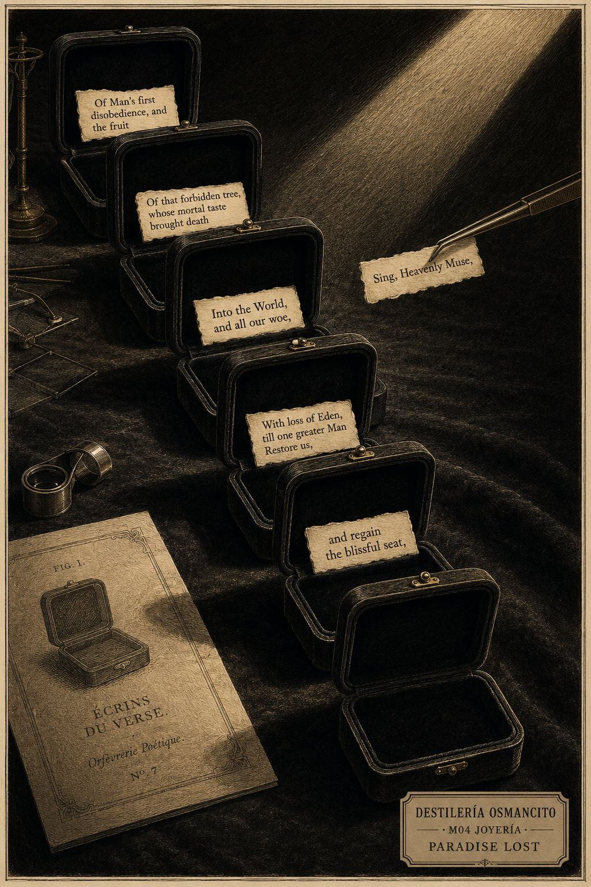
El corpus más virtuoso técnicamente —en verso blanco, con arquitectura clásica, con Dios mismo como personaje— produce sus joyas más duraderas precisamente donde falla el proyecto declarado: no en los momentos piadosos, sino en los momentos de fisura. La frase más citada del poema, Better to reign in Hell, then serve in Heav’n, no es cita de un villano de manual sino la conclusión de un razonamiento que el lector, si es honesto, ha seguido y comprendido. El poema cristaliza donde la lógica y la lealtad se separan sin aviso —y quien lee queda del lado equivocado antes de notarlo.
El mapa de tensiones
“Things unattempted yet in Prose or Rhime” La invocación abre una tensión entre humildad y ambición desmesurada: el poeta pide iluminación porque está ciego, y en la misma respiración anuncia que nadie ha intentado esto. La tensión no se resuelve —se proclama. Soberbia piadosa.
“Him the Almighty Power / Hurld headlong flaming” La caída de Satán se narra como pasado conocido, pero el cuerpo del texto tarda en llegar a Satán consciente —lo que genera una suspensión: sabemos el resultado, ignoramos el estado interior. Cuando Satán abre los ojos, el lector descubre que la derrota no lo ha cambiado. La tensión viaja de la catástrofe externa al carácter intacto. Indestructibilidad perturbadora.
“The mind is its own place” Satán declara que puede hacer del Infierno un Cielo y del Cielo un Infierno. El movimiento abre como filosofía estoica y termina como argumento de autoengaño: la misma frase que suena como fortaleza revela, en contexto, que está racionalizando su prisión. Doble filo.
“Awake, arise, or be for ever fall’n” Satán convoca a sus legiones. El movimiento arranca desde la vergüenza ajena —verlos postrados— y escala hasta la arenga; termina con el ejército de pie, en orden perfecto, marchando al son de flautas. La imagen final es espectacularmente bella. Eso es el problema. Seducción incómoda.
Veredicto del capítulo — capítulo que construye: establece el polo magnético del poema y hace que el lector lo siga sin resistencia antes de que entienda lo que está haciendo.
El fragmento
El primer libro es una trampa que funciona porque no lo parece. El poema declara que va a justificar los caminos de Dios ante los hombres y acto seguido dedica sus primeras setecientas líneas a hacer que Satán sea el personaje más interesante, más elocuente y más vívido que cualquier otro ser en el cosmos. No hay malicia en esto —hay consecuencia. El lector que sigue la voz de Satán descubriendo que puede hacer del Infierno su morada, construyendo el Pandemonium con música y fuego, convocando a sus legiones con una palabra, está siendo introducido al problema central del poema entero: la elocuencia no es evidencia de verdad. Pero el libro no lo dice. Lo hace.
La arquitectura del primer libro es la de una épica clásica cumplida con maestría técnica —la invocación, el héroe en su momento más bajo, la asamblea, la preparación— con la diferencia de que el héroe es el antagonista declarado de todo el cosmos. Esa inversión no se comenta. Se ejecuta, y el lector no tiene tiempo de objetar porque el verso lo lleva demasiado rápido.
Lo que importa para el corpus entero: el Libro I establece que la simpatía del lector y su juicio moral no van a coincidir. Esa distancia, que el poema mantiene abierta hasta el final, es el motor de todo lo que sigue. Sin la potencia del primer libro, la Caída del Libro IX sería menos trágica. La tragedia necesita que el enemigo sea reconocible.
Las joyas
“The mind is its own place”
El infierno portátil
Cuando llega al suelo del Abismo y reconoce que esto es ahora su hogar, no se queja. Razona. El lugar no importa, dice; lo que soy no cambia con la dirección postal. El Cielo que perdí no estaba en los muros del Cielo sino en lo que era. Y el Infierno que habito no está en el fuego sino en mí. Por lo tanto —y aquí el argumento da el giro— también puedo hacer de este lugar algo que valga. La mente es su propio lugar, puede hacer un Cielo del Infierno y un Infierno del Cielo. Dicho así suena como fortaleza. Pero lo que acaba de describir, sin notarlo, es que lleva el Infierno consigo adonde vaya. La frase que pretendía ser su escudo es su diagnosis.
“Awake, arise, or be for ever fall’n”
La boca del general
La arenga dura cuatro palabras. Están tendidos en el lago ardiente, millones de espíritus derrotados, y él simplemente les dice: levántense, o quédense caídos para siempre. No hay argumentación. No hay compasión. Hay la asunción de que basta con ser él quien lo diga. Y funciona: se levantan. El poema entonces pasa a describir su orden de marcha —el estandarte desplegado, los escudos relumbrantes, los tambores, las flautas— con una minuciosidad que produce admiración antes que horror. El lector lleva varios versos sintiéndose en un desfile antes de recordar que está mirando un ejército que marcha hacia la destrucción de la humanidad.
El mapa de tensiones
“Satan exalted sat, by merit rais’d / To that bad eminence” El libro abre con una imagen de poder perfecta —el trono, el oro, el esplendor— y en dos palabras la envenena: bad eminence. La tensión arranca desde la ironía sostenida: todo lo que sigue tiene ese doble fondo. Grandeza contaminada.
El debate: Moloc, Belial, Mammón, Belcebú Cuatro discursos en competencia abren la ilusión de deliberación genuina. La tensión viaja a través de la aparente pluralidad de voces para terminar en la revelación de que todo era teatro: la decisión ya estaba tomada, Belcebú habla por Satán, y la asamblea vota lo que le fue diseñado que votara. Democracia como espectáculo.
Satán ante Sin y Death El viaje al exterior del Infierno produce el encuentro grotesco con la familia de Satán —su hija nacida de su cabeza, su nieto producto de un incesto. La tensión se abre en horror y viaja hacia algo más perturbador: el reconocimiento y el acuerdo familiar. Termina con Satán prometiéndoles festín en el mundo nuevo. Terror doméstico.
El cruce del Caos Satán vuela solo por la nada absoluta. La tensión es física y metafísica: no hay suelo, no hay orientación, no hay ley. Termina cuando ve a lo lejos la luz del mundo recién creado —un punto suspendido en una cadena de oro. Soledad cósmica que se convierte en propósito.
Veredicto del capítulo — capítulo que acumula sin resolver: construye el andamiaje de la conspiración y termina con Satán en camino, la amenaza en movimiento pero sin tocar todavía su objetivo.
El fragmento
El Libro II es el libro de la política. No de la política divina —de la política como teatro de poder, como gestión de la apariencia de elección donde no hay elección. El concilio infernal delibera durante centenares de versos con una seriedad que incluye discursos articulados, pausa dramática cuando nadie responde al reto de Belcebú, y la oferta heroica final de Satán: iré yo solo, nadie más arriesgue su vida. El lector ya sabe, porque el poema lo ha dicho, que la propuesta de Belcebú fue concebida por Satán. El héroe que se ofrece solo está gestionando la competencia: si otro se ofrece primero, ese otro podría ganarse el crédito del éxito, o al menos el crédito del riesgo. Así que corta la deliberación antes de que alguien pueda responder.
El poema no condena esto. Lo muestra. Y lo que muestra es reconocible: el líder que crea el problema y luego se ofrece como única solución, que gestiona la escasez de candidatos asegurándose de ser el único candidato, que convierte el peligro en gloria monopolizada. Esto no ocurre solo en el Infierno.
Lo que importa para el corpus: el Libro II establece que el mal no es irracional. Es perfectamente racional, y esa racionalidad es lo que lo hace penetrable. Cuando Satán llegue al Edén en el Libro IV, no llegará como fuerza de la naturaleza sino como político consumado que sabe exactamente lo que hace.
Las joyas
El debate: Moloc, Belial, Mammón, Belcebú
Cuatro formas de rendirse
Moloc quiere guerra inmediata porque el dolor ya no puede ser peor. Belial quiere esperar porque quizás el dolor disminuya. Mammón quiere construir un reino propio porque la servidumbre en el Cielo habría sido igualmente intolerable. Y Belcebú —hablando por Satán— propone corromper la nueva creación. Cuatro discursos, cuatro voces, cuatro temperamentos genuinamente distintos. Y sin embargo el poema indica, sin énfasis, que la deliberación era innecesaria: la decisión ya estaba tomada. Lo que el lector acaba de presenciar no fue un debate sino una puesta en escena de un debate. La diferencia entre los cuatro argumentos reales y la decisión previa de Satán es que los cuatro argumentos son honestos. Solo uno de los cinco es cínico. Y ese es el que gana.
Satán ante Sin y Death
La familia que no recordaba tener
Llega a las puertas del Infierno dispuesto a pasar por la fuerza. Lo detiene una criatura mitad mujer mitad serpiente, rodeada de monstruos que salen de su vientre y regresan a él para devorarla desde adentro. Ella lo llama padre. Él no la recuerda. Ella le explica: nació de su cabeza cuando él concibió la rebelión, y él la amó entonces, y de esa unión nació Death, y Death la violó y engendró en ella a los monstruos que la torturan sin parar, y ella aun así tiene la llave de las puertas y puede abrirlas. Satán la escucha, reconoce el parentesco, y responde con suavidad: vamos juntos, te prometo que en el mundo nuevo tendrás todo lo que desees. Death sonríe como un cráneo al enterarse de que habrá comida. La escena que comenzó en horror familiar termina en negociación comercial. Es la imagen más densa del poema: la maldad genealógica, el amor que produce destrucción, la traición que se convierte en pacto de negocios.
El mapa de tensiones
“Hail holy light… / Revisit’st not these eyes” La invocación abre con la alabanza a la luz y gira de inmediato hacia la oscuridad personal: el poeta es ciego. La tensión viaja de la teología a la biografía sin señalarlo, y termina con la petición de que la luz interior supla la exterior. Vulnerabilidad transformada en argumento.
Dios prevé la caída y la justifica La escena celestial abre la tensión más inestable del poema: Dios dice que el hombre caerá por su propio libre albedrío y que por lo tanto la culpa es del hombre. La tensión viaja a través del argumento filosófico —si Dios prevé, ¿puede el hombre ser culpable?— sin resolverlo del todo, hacia la oferta del Hijo. Justicia en disputa.
El Hijo se ofrece a morir La oferta del Hijo abre como acto de amor absoluto y viaja en dos direcciones: hacia la celebración de la piedad y hacia la sospecha de que Dios lo sabía desde el principio. Termina en himno. Amor sublime con fondo ambiguo.
Satán engaña a Uriel El viaje de Satán al Sol y su disfraz de ángel joven abren la tensión de la hipocresía invisible. La tensión viaja hacia la revelación del poema de que nadie —ni el ángel de visión más aguda del Cielo— puede ver la maldad disfrazada. Termina con Satán rumbo al Edén con la dirección exacta. La hipocresía como único mal invisible.
Veredicto del capítulo — capítulo que suspende: formula el problema de la justicia divina y no lo cierra, luego envía a Satán con mapa hacia el siguiente libro.
El fragmento
El Libro III es el libro de la teodicea —la justificación de Dios— y es el libro más difícil de habitar del poema, porque Dios habla en él directamente y el resultado es perturbador. Lo que Dios dice es teológicamente coherente: el hombre fue creado con libre albedrío, el libre albedrío incluye la posibilidad de caer, la caída será responsabilidad del hombre. Todo esto es lógicamente consistente. El problema es la cadencia: Dios habla con la precisión de alguien respondiendo a una acusación que todavía no se ha formulado, y eso hace que suene a la defensiva. El poema declara que va a justificar a Dios; el Libro III muestra a Dios justificándose a sí mismo. No es lo mismo.
Contra esta incomodidad, el Libro III produce la escena más limpia del poema: el Hijo ofreciéndose a morir, no porque le lo exijan sino porque la alternativa es que la humanidad muera entera. La oferta no tiene reservas. No tiene negociación. La escena produce lo que la escena de Dios no pudo: emoción sin argumentación.
Lo que importa para el corpus: el Libro III establece la asimetría fundamental del poema —entre el Dios que argumenta y el Hijo que actúa— y entre el Hijo que actúa por amor y Satán que actúa por lógica. Esa comparación, que el poema no nombra, atraviesa todo lo que sigue.
Las joyas
“Revisit’st not these eyes”
Lo que la luz no devuelve
Saluda a la luz como si fuera una persona —primera criatura del cosmos, hija de Dios, anterior al Sol, anterior al tiempo— y le agradece que exista. Luego dice: pero tú no visitas estos ojos míos. Las estaciones vuelven. El año vuelve. El dulce acercarse de la mañana vuelve. Los pájaros en las ramas vuelven. El rostro humano vuelve. Yo no veo ninguna de esas cosas. Lo que tengo en su lugar es una oscuridad continua y la memoria de lo que veía. Por eso le pido que brille hacia adentro, que ilumine la mente, ya que los ojos están sellados. La petición es teológica. La herida es personal. Y el lector que tiene ojos, que los abrirá al terminar de leer, siente el peso de esa herida con una precisión que la argumentación nunca produciría.
“For neither Man nor Angel can discern / Hypocrisie, the only evil that walks / Invisible, except to God alone”
El único mal que nadie puede ver
Uriel —el más agudo de todos los ángeles, el que ve desde el Sol— acaba de ser engañado por Satán disfrazado de ángel joven y entusiasta. El poema lo explica con calma: la hipocresía es el único mal que camina invisible. La maldad abierta deja rastros, tiene temperatura, se ve en los gestos y en las elecciones. La hipocresía no tiene forma propia; toma prestada la forma de lo que el otro quiere ver. No es que Uriel sea tonto. Es que el engaño opera exactamente en el registro en que la inteligencia confía. La afirmación termina en imagen: Satán ya se fue hacia el Edén con la dirección exacta que Uriel le dio de buena fe.
El mapa de tensiones
El soliloquio al Sol La tensión abre en el momento en que Satán, parado en el monte Nifates con el Edén a la vista, se dirige al Sol. No a nadie en particular —al Sol. Lo que sigue es el único momento del poema en que Satán habla con plena lucidez sobre sí mismo: reconoce el error, ve su origen, ve la salida que no puede tomar, y elige conscientemente continuar. La tensión escala hacia la claridad y termina en la decisión de cerrar esa claridad. Lucidez que se suicida.
Satán ve el Paraíso y a Adán y Eva La tensión abre en la entrada de Satán al Jardín, que Milton describe como el más bello lugar que ha existido. Satán lo ve todo y no lo disfruta. La tensión viaja a través de la mirada que no puede recibir belleza, que solo puede calcular vulnerabilidad, hasta el monólogo en que admite que podría amar a estos dos —y los condena de todas formas. La estética sin la capacidad de ser transformado por ella.
El sueño de Eva / Gabriel La noche del Jardín trae el descubrimiento de Satán inclinado sobre Eva dormida y la confrontación con Gabriel. La tensión abre en lo mundano —vigilancia de ángeles, patrullas nocturnas— y termina en lo cósmico cuando Dios pone en el cielo una balanza de oro. La tensión cierra con Satán mirando su propio peso —ligero, insuficiente— y huyendo sin combate. El valor de lo que uno pesa.
Veredicto del capítulo — capítulo que gira: el más denso emocionalmente del poema, donde el antagonista es más humano que en ningún otro lugar, y también más irrecuperable.
El fragmento
El Libro IV es el corazón del poema y el menos esperado. Después de dos libros de arquitectura épica, debate político y cosmología, el lector llega al Libro IV y encuentra algo distinto: psicología. Satán parado en una colina, mirando el Sol, hablando consigo mismo sobre lo que hizo y lo que es. La invocación con que abre el libro ya anuncia el cambio de registro —el poeta desea que alguien hubiera advertido a los primeros padres— y a partir de ahí el libro trabaja en una escala íntima que los dos anteriores no intentaron.
Lo que Satán hace en el soliloquio al Sol es lo que casi ningún personaje literario hace: ve con exactitud lo que es, ve con exactitud lo que podría haber sido, ve con exactitud el camino de regreso, y lo descarta. No porque el camino sea imposible sino porque tomarlo requeriría ser otro. Y él no puede ser otro sin dejar de ser él. Este es el movimiento más sofisticado del poema: la elección del mal no como ignorancia sino como afirmación de identidad.
Luego el lector sigue a Satán al Edén y lo ve ver a Adán y Eva. Lo que ocurre ahí —Satán admitiendo que los ama, que podría amarlos, y procediéndolos a condenar de todas formas— es el momento más perturbador del poema. No porque el mal sea monstruoso sino porque no lo es. El mal aquí es alguien que todavía puede ser movido por la belleza, que reconoce el bien cuando lo ve, y que lo destruye de todas formas porque su lógica lo exige.
Las joyas
El soliloquio al Sol
El argumento contra sí mismo
Se dirige al Sol no como enemigo sino como testigo, y le dice: te odio, no porque hayas hecho algo, sino porque cuando te veo me recuerdo de lo que fui. Fue creado en esplendor. Su servicio era fácil —solo alabanza, lo más simple del mundo. Su Creador no le exigía nada difícil, no lo provocaba, no ponía trampas. Y aun así, él —levantado tan alto que quiso un paso más, que quiso el último paso, el único que no tenía— eligió la rebelión. Ahora ve con claridad: la gratitud habría sido lo correcto, y la gratitud no era pesada, y aun así la rehusó. ¿A quién culpar? A nadie. A él. Y entonces la pregunta que el soliloquio lleva al límite: si todo esto está claro, si la culpa es propia y el camino de regreso está visible, ¿por qué no regresar? Porque, responde él, el arrepentimiento que sintiera en el arrepentimiento sería falso. Porque en cuanto mejorara su situación volvería a ser lo que es. Porque rendirse sería someterse, y someterse sería dejar de ser él. Y en ese punto la lucidez se convierte en su propia condena: lo ve todo y elige quedarse. Farwel Remorse: all Good to me is lost; / Evil be thou my Good.
El soliloquio al Sol — joya segunda
El peso de la gratitud
Hay un momento dentro del soliloquio —casi enterrado entre las otras confesiones— en que dice algo que ningún lector olvida: entendió que una mente agradecida no pierde su deuda al pagar; al pagar, sigue siendo deudora y a la vez ya está saldada. El acto de dar gracias es simultáneamente deuda y pago. No hay peso en eso. Y sin embargo él lo sintió como peso insoportable. No el peso de la gratitud sino el peso de que habría gratitud para siempre, de que no había forma de terminar de agradecer porque la deuda no era una cantidad sino una relación. Y esa relación le parecía una trampa. El poema no dice que estaba equivocado. Tampoco dice que tenía razón. Deja la observación ahí, y el lector que alguna vez ha sentido la gratitud como peso —aunque sea por un segundo— sabe exactamente de qué se habla.
Satán ve el Paraíso y a Adán y Eva
El amor que no salva
Los observa largo tiempo sin que ellos lo vean. Ve cómo caminan, cómo hablan, cómo se tocan. Siente algo —el poema lo describe como admiración, como algo parecido al amor— y lo declara en voz alta: podría amarlos. Qué lástima que deba destruirlos. Lo dice así: yet not for those / Nor what the Potent Victor in his rage / Can else inflict do I repent. Y añade, más tarde, ya calculando: así que vivan mientras puedan, que de todos modos el tiempo que les queda es corto. Lo que distingue esta escena de una escena de maldad convencional es que la emoción es real. No es estrategia. Genuinamente siente algo. Y genuinamente lo descarta. La capacidad de ser tocado por la belleza no es suficiente para cambiar el curso de las cosas. Eso, que el poema muestra sin nombrarlo, es más aterrador que cualquier monstruo.
El mapa de tensiones
El sueño de Eva La tensión abre en la mañana perturbada —Eva despertó agitada, Adam la contempla dormida con inquietud— y viaja a través del relato del sueño: alguien que hablaba con voz de Adam la llevó al árbol prohibido, comió, voló. La tensión cierra en el consuelo de Adam: el sueño no te condena. El ensayo ignorado.
La oración de la mañana Sin tensión dramática: pura alabanza. Funciona como contraste con el sueño precedente. Si hay tensión, es esta: ¿es posible mantener esta inocencia? El lector sabe que no. Belleza amenazada.
La llegada de Rafael / el festín La tensión abre en el anuncio de un visitante celestial y viaja a través de la preparación de Eva —que es una escena de hospitalidad extraordinaria— hacia la pregunta de si los ángeles comen de verdad. Rafael dice que sí, y come. Domesticidad cósmica.
Rafael narra: la declaración del Hijo y la rebelión de Satán La tensión abre cuando Rafael cuenta cómo Dios proclamó al Hijo y Satán se sintió herido en su dignidad. Viaja a través del origen de la maldad —el primer pensamiento envidioso que no se comparte con nadie, que se incuba en la noche, que convence al primer subordinado— hasta la arenga de Abdiel contra Satán. El momento exacto en que algo se torció.
Veredicto del capítulo — capítulo que construye: introduce la backstory de la rebelión como advertencia preventiva para Adán, pero también introduce la inestabilidad del Jardín.
El fragmento
El Libro V hace dos cosas que parecen opuestas y son la misma: describe el Paraíso en su estado más idílico —la oración matutina, el festín con el ángel, la hospitalidad perfecta— y al mismo tiempo siembra la primera semilla de lo que vendrá. El sueño de Eva al inicio del libro es exactamente la tentación que ocurrirá en el Libro IX, ensayada en la imaginación antes de que sea real. Adam la descarta: el sueño no es culpa del soñador, el mal que entra por la fantasía no contamina si no se consiente en la vigilia. Lo que dice Adam es teológicamente correcto y humanamente demasiado optimista. El lector sabe lo que Adam todavía no sabe.
La segunda mitad del libro —la narración de Rafael sobre la rebelión en el Cielo— introduce algo que el poema hasta aquí había evitado: el origen de Satán antes de ser Satán. Fue, dice Rafael, el primero o casi el primero de los ángeles. Su nombre anterior no se menciona —ya en el Cielo ha dejado de usarse. Lo que lo torció fue un decreto: Dios proclamó al Hijo como cabeza, y él sintió eso como una disminución de sí mismo. El poema no dice que el decreto fue injusto. Tampoco dice que Satán estaba equivocado en sentir lo que sintió. Dice que lo que hizo con ese sentimiento fue lo que lo destruyó.
Las joyas
Eva prepara el festín
La hospitalidad perfecta
Cuando Adam le dice que viene un visitante celestial, Eva no pregunta si sabe cocinar para ángeles. Piensa. ¿Qué quieren los ángeles? ¿Comen? ¿Tienen preferencias? No lo sabe, pero decide que la abundancia es la respuesta correcta: si sobra, no hay ofensa; si falta, hay vergüenza. Sale al jardín y escoge con la minuciosidad de alguien que ha pensado mucho en el gusto: no mezclar sabores que no combinan, ordenar la sucesión para que haya variación, usar lo que tiene en su mejor momento. El poema dedica a este acto de preparación una docena de versos de una ternura específica: la inteligencia doméstica como forma de amor, la hospitalidad como teología práctica. Eve en este momento no es símbolo de nada. Es una persona que quiere que su invitado quede bien atendido.
Rafael narra: la rebelión de Satán
La noche en que se torció
La historia que Rafael cuenta tiene un momento exacto: la noche después de la proclamación del Hijo, cuando los ángeles duermen en sus tiendas y Satán no puede dormir. El poema lo muestra despierto, pensando. Despierta a su segundo y le habla —pero lo que le dice no es lo que siente. Le dice que hay que prepararse para recibir al nuevo Rey. Lo que siente es que acaban de instalar sobre él a alguien que no existía ayer. Y lo que hace con ese sentimiento es callarlo ante los demás y transformarlo en argumento político. El tránsito de la herida privada al discurso público es el origen del mal en el poema. No la envidia sola —la envidia transformada en retórica, la retórica ofrecida como libertad.
El mapa de tensiones
Abdiel golpea a Satán La tensión abre cuando el ángel solitario que se atrevió a disentir regresa y tiene que enfrentarse al ejército que dejó. Viaja hacia el combate singular: Abdiel golpea a Satán antes de que empiece la batalla. La tensión termina en el asombro de los dos ejércitos —uno con júbilo, el otro en pánico. La palabra hecha puño.
La guerra de dos días: la artillería La tensión abre en la equiparación de fuerzas y escala hacia el caos cuando Satán inventa los cañones y derriba al ejército de Dios. Los ángeles fieles responden arrancando montañas. La tensión termina en que el Cielo mismo está a punto de destruirse. La lógica de la escalada.
El Hijo entra en la batalla La tensión abre cuando Dios dice que la guerra no puede terminar sin el Hijo porque la igualdad de fuerzas la haría interminable. El Hijo sale solo en su carro. Los rebeldes lo ven venir y en lugar de pelear, saltan. La tensión cierra en el vacío: la guerra más grande de la historia termina porque el enemigo se arroja al abismo antes de ser tocado. El terror que precede al contacto.
Veredicto del capítulo — capítulo que destruye: narra la primera catástrofe del universo y establece que la violencia, llevada a su lógica extrema, solo puede ser detenida por algo que no es violencia.
El fragmento
El Libro VI tiene el problema de narrar algo que no puede ser descrito: una guerra entre seres inmortales a quienes las heridas no matan, que combaten con armas que el poema tiene que traducir a términos terrestres porque no hay palabras para lo que sería una guerra entre ángeles. Rafael lo advierte él mismo —está contando esto con metáforas humanas porque de otra manera Adán no podría entenderlo. El resultado es una guerra que escala hacia el absurdo: los cañones derribar ángeles que se levantan de inmediato, los ángeles arrancan montañas enteras para aplastarse mutuamente, el Cielo se está desintegrando, y nadie puede ganar porque nadie puede morir.
La resolución produce una de las imágenes más extrañas del poema: los rebeldes saltando al vacío antes de que el Hijo llegue a ellos. No los expulsa por la fuerza —la proximidad de su presencia es suficiente para que se arrojen solos. El Cielo que se destruyó a sí mismo en dos días se restaura en segundos cuando las montañas vuelven a su lugar a la orden del Hijo. La catástrofe no dejó huella. Solo ausencia.
Las joyas
La artillería — primer día
La trampa del progreso
Satán, que no puede ganar con las armas convencionales, inventa algo nuevo. Extrae de la roca del Cielo los minerales que producen pólvora, construye cañones durante la noche, y al amanecer los despliega ocultos dentro de su formación. Cuando los ejércitos se aproximan, abre los flancos, apunta, y dispara. El ejército de Dios cae en montones. El poema añade, sin moralizar, que esta invención llegará eventualmente a los hombres. La escena que debería ser épica es grotesca: los ángeles caídos se ríen mientras los ángeles fieles intentan levantarse sin entender qué los golpeó. La única respuesta posible al arma nueva es el arma más vieja que existe: arrancar una montaña y arrojarla. La tecnología produce barbarie. El poema lo deja ahí.
El mapa de tensiones
“On evil dayes though fall’n, and evil tongues” El poeta interrumpe la narración para declarar en qué condiciones escribe: caído en días malos, rodeado de lenguas que lo atacan, ciego, en peligro. La tensión abre en la vulnerabilidad personal y cierra en la petición a la Musa de que lo proteja como no pudo proteger a Orfeo. La exposición del artesano.
La Creación narrada por Rafael Seis días de creación, narrados con minuciosidad creciente. La tensión no es dramática sino acumulativa: ¿cuándo aparece el hombre? La espera produce la pregunta que el relato diseña para producir. Termina cuando el hombre es creado y nombrado, y Adán se reconoce en el relato. Asombro administrado.
Eve sale del salón En medio de la narración, Eve se levanta y sale a atender su jardín. El poema lo describe: no porque no entienda, sino porque prefiere escuchar el relato de la boca de su marido, que lo mezclaría con conjugal Caresses. La tensión es brevísima pero produce algo fuera de escala: la descripción de un matrimonio que funciona. Amor en detalle menor.
Veredicto del capítulo — capítulo que construye: la Creación narrada como regalo —lo que existió antes de que ellos llegaran, lo que Dios hizo para que tuvieran dónde vivir— con el efecto de hacer más pesada la pérdida que viene.
El fragmento
El Libro VII tiene el problema opuesto al Libro VI: donde la guerra era demasiado grande para describir, la Creación es demasiado bella. Rafael enumera los seis días con una exuberancia verbal que es en sí misma una respuesta a la pregunta de por qué existe el mundo: porque la exuberancia era posible. El mundo no es frugal. El mundo tiene delfines y pavos reales y la hormiga que guarda comida para el invierno y el cisne que rema con sus pies blancos. La Creación, en el Libro VII, no es un acto funcional sino un acto generoso hasta el exceso.
Contra este fondo, la salida de Eve del salón es la escena más tierna del poema. No sale porque no entiende —el poema se molesta en aclarar que entiende perfectamente y que su ausencia no es ignorancia. Sale porque prefiere escuchar la historia de la boca de su marido, que la contará mezclada con caricias. El ángel cuenta la historia del universo. Eve elige la versión imperfecta y afectuosa. El poema no juzga esa elección. La describe con la misma delicadeza con que ha descrito el cisne.
Las joyas
“On evil dayes though fall’n”
El poeta en su mundo
Entre dos episodios del cosmos —la guerra celestial y la creación del mundo— el poema hace una pausa y el poeta habla en primera persona sobre su situación en 1667: ciego, anciano, en un país que le es hostil, rodeado de enemigos políticos, escribiendo en circunstancias que hacen difícil creer que alguien lo leerá. Pide a su Musa que lo proteja como no pudo proteger a Orfeo —que fue despedazado por las bacantes. La imagen del poeta destrozado como Orfeo es la más oscura que el poema se permite para sí mismo. Duran tres versos. Luego la narración continúa. Pero los tres versos cambian la escala de lo que los rodea: la guerra en el Cielo y la creación del mundo son inmensas, y sin embargo el hombre que los escribe es frágil y sabe que es frágil, y sigue escribiendo.
Eve sale del salón
La historia preferida
Adam está preguntando al ángel sobre cosmología —si la Tierra gira alrededor del Sol o al revés— cuando el poema hace una pausa y describe que Eve, que estaba escuchando en silencio, se levanta con lowliness Majestic y sale a ver sus plantas. No porque el tema la aburra. Porque prefiere escuchar esta misma historia de la boca de su marido, que la mezclará con conjugal Caresses —caricias de cónyuge— y que de sus labios la historia se vuelve más dulce aunque sea menos exacta. Los ángeles son precisos. Los maridos mezclan las cosas con amor. Eve elige el amor. El poema dice, sin irony: O when meet now / Such pairs, in Love and mutual Honour joyn’d? —¿Cuándo se encontrarán ahora tales pares, unidos en amor y honor mutuo? La pregunta es retórica. La respuesta es: nunca más, después del Libro IX.
El mapa de tensiones
La invocación al Libro IX El poeta anuncia que a partir de aquí cambia el tono: lo que sigue es trágico, lo que vino antes era pastoral. La tensión abre en la anticipación y cierra en el aviso. El umbral.
Satán regresa Satán, expulsado del Jardín la noche anterior, ha dado la vuelta al mundo en siete noches y vuelve. La tensión abre en la imagen de su circunnavegación solitaria —buscando entrada, evitando la vigilancia— y termina cuando encuentra un lugar sin guardia y se introduce en el cuerpo de la serpiente mientras duerme. La paciencia del mal.
La tentación de Eva La tensión más larga y densa del poema. Satán, en cuerpo de serpiente, encuentra a Eva sola. La halaga, la fascina, la lleva al árbol, argumenta. La tensión viaja a través de cada objeción que Eva opone y que Satán deshace, hasta el momento en que ella come. El argumento que gana.
La caída de Adam Eve regresa con el fruto. Adam comprende de inmediato lo que pasó. La tensión abre en su comprensión —no en su engaño— y termina en su decisión de comer él también, no porque la crea sino porque no puede vivir sin ella. El amor como catástrofe.
La acusación mutua Post-caída: Adán y Eva se acusan mutuamente. La tensión abre en la vergüenza y termina en la mezquindad: horas de recriminación sin conclusión. El primer fruto del conocimiento.
Veredicto del capítulo — capítulo que destruye: el eje del poema, donde todo lo que los libros anteriores construyeron se deshace en dos decisiones separadas por minutos.
El fragmento
El Libro VIII —que en ediciones posteriores fue dividido en Libro IX— es el libro que el poema entero ha estado construyendo y temiendo. Lo construye con una demora deliberada: antes de llegar a la tentación, el libro pasa por la invocación del poeta, por el regreso de Satán, por la mañana del Jardín. El poema sabe que el lector sabe lo que viene, y esa anticipación es parte del efecto.
Cuando la tentación llega, es un argumento. Satán no fuerza a Eva —la persuade. Le dice que la serpiente comió del árbol y eso le dio la capacidad de hablar. Si el fruto elevó a la serpiente, ¿qué podría hacer por ella? El argumento tiene una lógica que Eva sigue con la mente abierta de alguien que no ha aprendido todavía a desconfiar de la lógica. El poema muestra el proceso del convencimiento con una fidelidad incómoda: no hay un momento de estupidez, no hay un momento de malicia. Hay una mente funcionando bien sobre premisas falsas que no puede reconocer como falsas porque no tiene experiencia del engaño.
La caída de Adam es diferente. Adam ve el fruto en la mano de Eva, entiende lo que pasó, y come de todas formas. No porque la serpiente lo convenció. Porque no puede imaginarse el mundo sin Eve en él, aunque ese mundo sea el Paraíso.
Las joyas
La tentación de Eva
La lógica que miente
La serpiente la fascina porque habla. Le explica: comí del árbol y ahora hablo. El fruto dio razón a un animal sin razón —¿qué dará a quien ya tiene razón? Eva escucha el argumento y lo considera. El árbol está ahí. El fruto está maduro. La orden de no comerlo no tiene explicación dada —solo la prohibición y la pena. ¿Envidia Dios el conocimiento? ¿Es posible que tema lo que ellos se volverían si lo supieran todo? El argumento es el mismo que Satán usó en el Cielo para convencer a su ejército. La misma retórica de la igualdad negada, el mismo resentimiento de quien fue tratado como inferior. Esta vez funciona. No porque Eva sea más débil que los ángeles. Porque los ángeles tenían memoria de lo que Dios era y ella solo tiene la promesa. Y las promesas, sin memoria, son más fáciles de revisar.
La caída de Adam
Lo que no se puede solo
Cuando Eva regresa con el fruto y él entiende lo que pasó, el poema le da un momento de lucidez perfecta: lo ve todo, entiende todo, sabe exactamente lo que acaba de romperse. Y entonces come. Come no porque la crea —el poema es explícito en que no la cree. Come porque la alternativa es vivir sin ella en un Paraíso que sin ella no sería Paraíso. No puede imaginarse la eternidad como testigo de su castigo, como sobreviviente de su error, como el que se quedó limpio mientras ella pagaba. Y decide: si ella cae, yo caigo con ella. El poema llama esto amor. No dice que está mal. Tampoco dice que está bien. Dice que de ahí viene todo lo que sigue.
La acusación mutua
Lo primero que el conocimiento enseña
Después de comer, hay un momento de euforia —el poema lo describe brevemente, casi con pudor. Luego llega la vergüenza. Luego la culpa. Y luego lo que la culpa produce cuando no hay nadie más disponible: acusación. Adam le dice a Eva que si hubieran seguido juntos esto no habría pasado. Eve le dice a Adam que si hubiera dicho que no cuando pidió separarse, la separación no habría ocurrido. Los dos tienen razón. Los dos están equivocados. El poema los muestra en ese círculo durante horas, sin conclusión, gastando las horas infructuosas —cada uno culpando, ninguno comprendiendo, ninguno cediendo, ninguno encontrando el camino de salida. El primer efecto del conocimiento del bien y del mal no es la sabiduría. Es saber exactamente dónde está el error del otro.
El mapa de tensiones
El Cielo conoce la caída La noticia llega al Cielo. Dios la comenta con serenidad: ya lo sabía, ya había previsto la redención. La tensión abre en la expectativa de catástrofe y termina en la ecuanimidad divina. Distancia que incomoda.
El Hijo desciende a juzgar El Hijo baja al Jardín y llama a Adán y Eva. La tensión viaja a través del diálogo del juicio —en que ambos se excusan, en que el Hijo escucha, en que la condena se dicta. Termina con el Hijo visitiéndolos con ropa: el primer acto de misericordia dentro de la condena. Justicia con ternura.
Sin y Death construyen el camino al mundo Sin y Death —que estaban esperando— sienten que Satán ha triunfado y salen del Infierno a construir un camino hacia el mundo. La tensión abre en el aspecto grotesco de la imagen y termina en algo más perturbador: el camino ya existe, el acceso es permanente, y el mundo nunca más estará sellado. La infraestructura del mal.
Satán regresa triunfante y se convierte en serpiente Satán regresa al Pandemonium para anunciar su victoria. En el momento del discurso, él y todos los suyos se convierten en serpientes involuntariamente. Intentan comer frutos que se vuelven ceniza. La tensión abre en el triunfo y termina en el castigo que llega en el mismo momento en que el triunfo se proclama. El giro dentro del giro.
Adán ve el futuro: el Diluvio Miguel le muestra a Adán visiones del futuro. La tensión sube hasta el Diluvio —el mundo entero inundado, los descendientes de Adán ahogados— y Adam colapsa de dolor. La tensión cierra cuando Miguel lo levanta y le dice que hay algo después. El peso de la herencia.
Veredicto del capítulo — capítulo que suspende: la caída ya ocurrió, el juicio ya fue dictado, las consecuencias están en movimiento, pero el exilio todavía no ha sucedido.
El fragmento
El Libro IX (numerado X en ediciones posteriores) tiene la función de administrar las consecuencias. La caída está hecha. Lo que el libro hace es distribuir ese peso hacia todos los rincones del cosmos: el Cielo lo sabe y reacciona, los guardianes del Jardín ascienden avergonzados, el Hijo baja a juzgar, Satán celebra y es castigado en el acto de la celebración, Sin y Death construyen infraestructura permanente, el mundo cambia de temperatura, Adam ve el futuro y se deshace.
La escena del juicio es la más delicada del libro. El Hijo no llega como ejecutor sino como padre disgustado que pregunta ¿dónde estás? —que sabe la respuesta pero espera que se la den. Adam y Eva se excusan uno al otro. El Hijo escucha y luego dicta la condena con una exactitud que no tiene crueldad: a la serpiente, el suelo; a Eva, el dolor del parto y la sujeción; a Adam, el trabajo y la muerte. Y después de la condena, antes de irse, les cose ropa. Es el primer gesto de cuidado dentro del castigo.
Las joyas
El Hijo baja a juzgar
La ropa que cose un dios
Llega al Jardín por la tarde, cuando el aire es fresco, y los llama. Ellos se esconden. Él los llama de nuevo. Ellos salen con vergüenza y él les pregunta qué pasó y ellos se acusan mutuamente y el Hijo escucha todo. Entonces dicta el juicio —serpiente, mujer, hombre— y el juicio es exacto y no tiene piedad. Y después, antes de marcharse, observa que están desnudos y que tienen frío, y les cose ropa con pieles de animales. El poema no explica este gesto. Solo lo registra: el mismo que los acaba de condenar se queda un momento más para asegurarse de que no tengan frío. El gesto sobrevive cualquier contexto.
Satán regresa — el giro dentro del giro
El aplauso que silba
Regresa al Pandemonium con la historia lista —el discurso triunfal, la descripción de cómo el árbol pequeño con el fruto pequeño fue suficiente para deshacer el plan de Dios— y empieza a hablar. Y en el momento en que empieza, él y todos los que lo escuchan empiezan a convertirse en serpientes. El proceso es involuntario e imparable. El discurso de triunfo se transforma en silbidos. Los cuerpos que tenían formas angélicas se enrollan en el suelo. Y luego el poema añade el detalle más cruel: a poca distancia hay árboles con frutos hermosos, y los ángeles caídos-ahora-serpientes, hambrientos, trepan a comer los frutos —y en la boca los frutos se convierten en ceniza y hollín. La victoria que anunciaban se vuelve castigo en la misma respiración en que la proclaman. El cosmos tiene sentido del momento.
El mapa de tensiones
La oración de Adam y Eve La tensión abre en el estado de postración: Adam y Eva están de rodillas, llorando, sin saber qué decir. La tensión viaja a través de la incapacidad del lenguaje —cómo se ora cuando uno no sabe si hay perdón— hasta el momento en que las oraciones llegan al Cielo y el Hijo las intercede. La plegaria sin palabras.
Adam propone no tener hijos Adam, en su desesperación, propone que para no transmitir el daño a descendientes, deberían abstenerse de tener hijos. La tensión abre en la lógica del argumento —si no nacen más humanos, no habrá más sufrimiento— y viaja hacia Eve, que propone algo más radical: morirse directamente. La tensión cierra cuando Adam rechaza el suicidio y propone la reconciliación. La desesperación que razona.
El exilio Miguel toma a Adam y Eve de la mano y los conduce hacia la puerta del Este. Se detienen a mirar atrás. Lloran. Se secan las lágrimas. Salen. La tensión cierra en el verso final: They hand in hand with wandring steps and slow / Through Eden took thir solitarie way. El paso que no regresa.
Veredicto del capítulo — capítulo que gira: comienza en lo más bajo —la desesperación total, la propuesta de no tener hijos, la propuesta del suicidio— y termina en el único movimiento posible hacia adelante: salir.
El fragmento
El Libro X es el libro de la salida, y la salida no es derrota sino comienzo. La estructura del libro se encarga de bajar al máximo antes de terminar: Adam propone que no tengan hijos para no transmitir la miseria. Eve propone que se maten para no tener que vivir la condena. Estos son los dos argumentos más oscuros del poema —y ambos tienen una lógica que no es fácil refutar. Adam los refuta de todas formas, no porque tenga mejor argumento sino porque hay una promesa que el Hijo dejó caer en el juicio, la promesa de un descendiente que aplastará la cabeza de la serpiente, y esa promesa —pequeña, condicional, casi oculta en medio de la condena— es suficiente para seguir.
El libro termina con el exilio. El poema lleva diez libros construyendo este momento y lo trata con una brevedad que es la única respuesta posible al exceso de lo que precede. Adán y Eva salen tomados de la mano. El mundo está todo por delante. No se dice adónde van. Se dice que van juntos.
Las joyas
Eve propone morir
La lógica del final
Eve llega a Adam con una propuesta: si la maldición es que sus hijos heredarán el dolor, la solución es no tener hijos. Y si no tener hijos no es suficiente, la solución más limpia es morirse los dos ahora, antes de que la maldición se propague. Lo dice sin dramatismo —como quien propone una solución práctica a un problema concreto. El argumento es impecable si se acepta la premisa: el dolor es el problema, la no-existencia es la ausencia de dolor, la no-existencia es alcanzable. Adam la escucha, reconoce la lógica, y la refuta no con mejor lógica sino con otra premisa: hay una promesa. El poema no resuelve si Adam tiene razón o Eve tiene razón. Muestra que entre las dos posiciones solo una permite que haya un mañana.
El último verso
La mano y el paso lento
Los ángeles los toman del brazo y los conducen hacia la puerta del Este. El mundo de abajo los espera —vasto, desconocido, sin el orden perfecto del Jardín. Se detienen un momento y miran hacia atrás. El Paraíso tiene ahora una espada de fuego en la entrada y rostros de ángeles que vigilan. Lloran. Se limpian las lágrimas. Se vuelven hacia adelante. Van tomados de la mano, con pasos lentos, solos —solitarie way. El poema termina ahí. No hay resolución, no hay consuelo explícito, no hay promesa repetida. Hay dos personas que salen de lo que conocían hacia lo que no conocen todavía, tomados de la mano. El lector que tenga experiencia de haber salido de algo hacia algo desconocido —cualquier salida, de cualquier tamaño— sabe exactamente el peso de ese paso. El poema no lo dice. Solo pone la imagen y para.
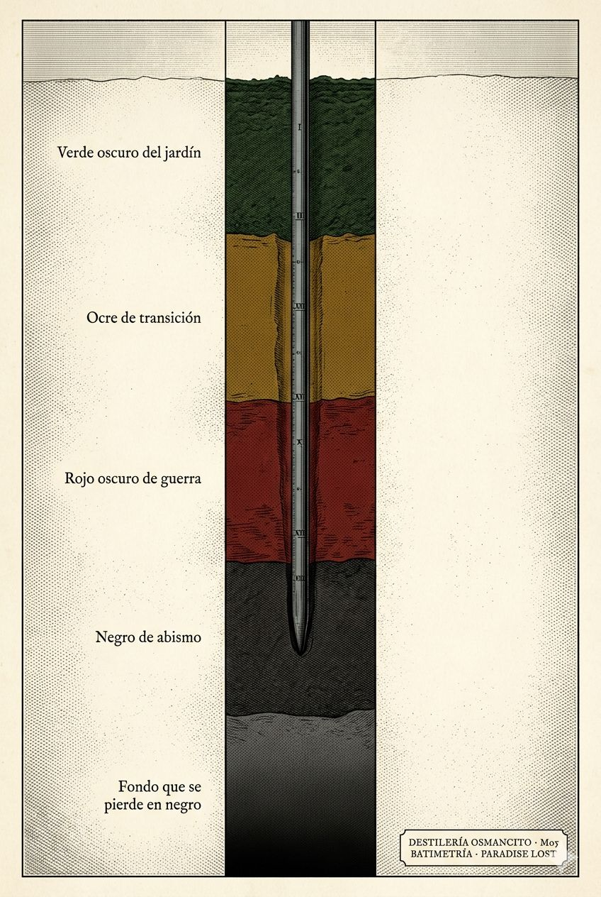
El poema dice que quiere justificar los caminos de Dios a los hombres. Pero lo que hace es otra cosa: hace que Satanás sea el único personaje con interiodidad real, el único que duda, que recuerda, que elige con conciencia de lo que pierde. Dios habla pero no siente. Satanás siente pero no puede dejar de hacerlo. Esa asimetría —no declarada, nunca resuelta— es el fondo verdadero del poema. Lo que Milton construyó y lo que Milton creyó construir no son el mismo objeto.
Vivo — en superficie, accesible sin mediación:
Sepultado — presente pero cubierto por extensión, rodeo o dispersión:
Cifrado — opera sin nombrarse:
Borrado — dejó huella sin quedarse:
Ausente — no está y no dejó marca:
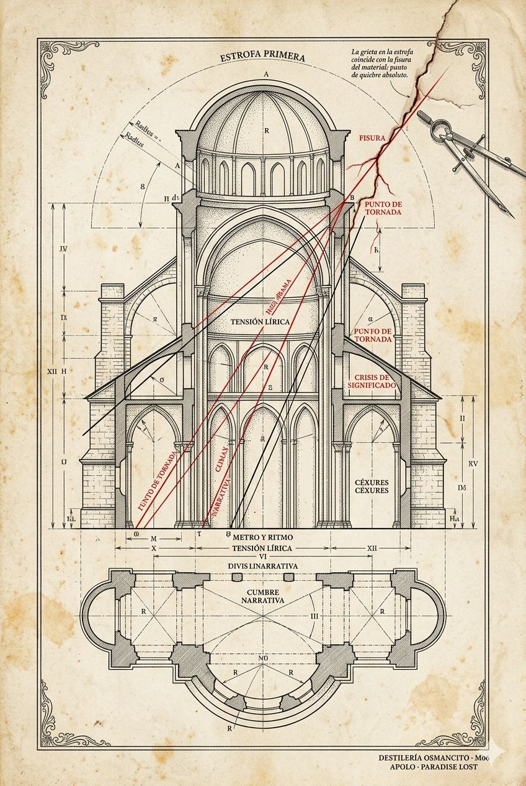
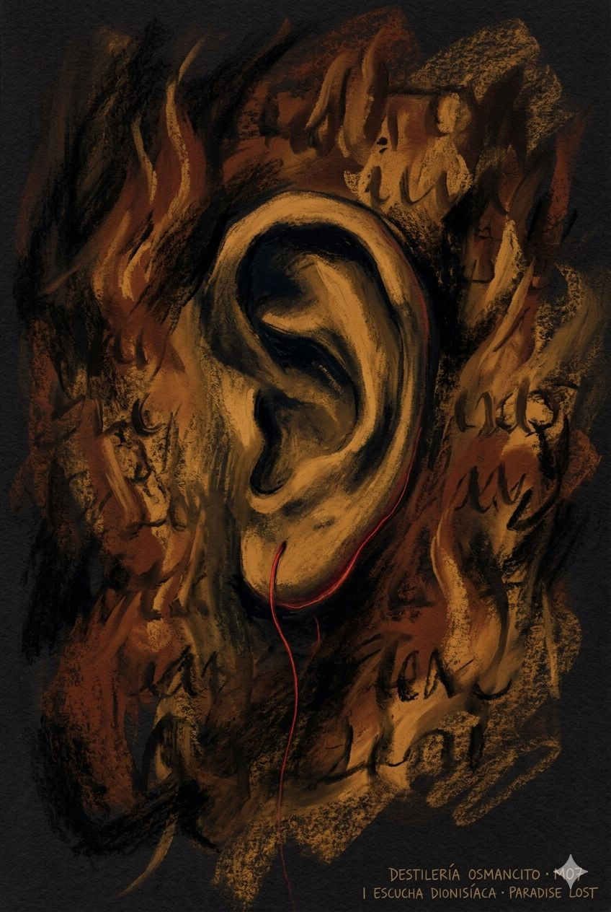
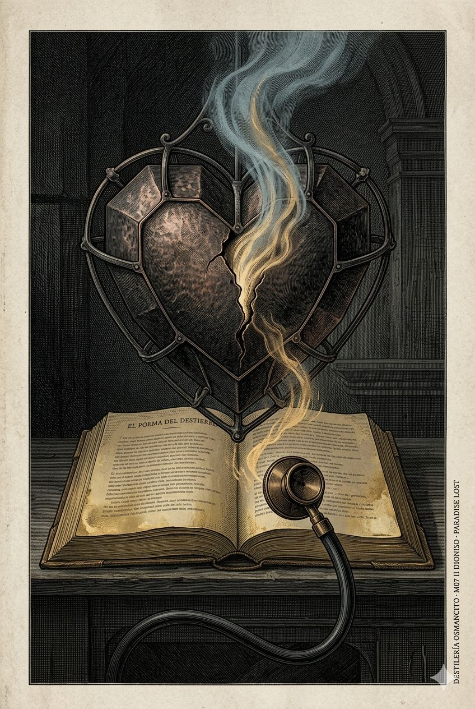
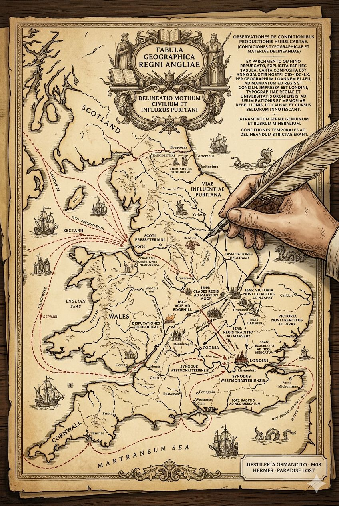
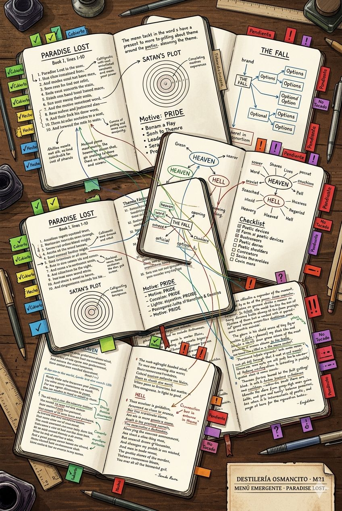
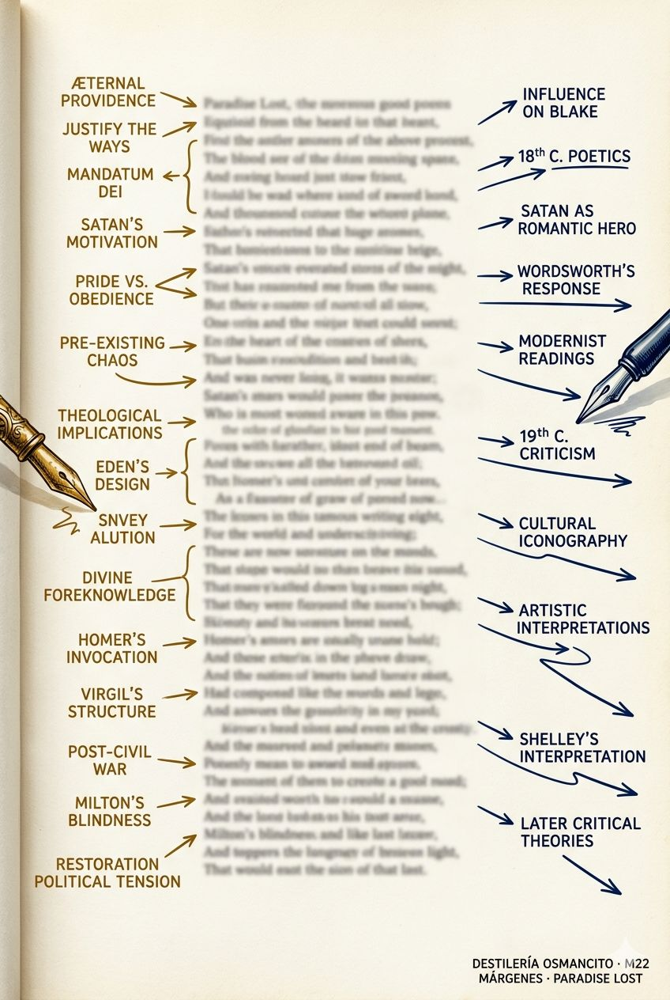
Milton quería escribir el poema que justificara a Dios. Lo que no pudo contener fue su propia simpatía por el que cayó. Cada vez que el poema necesita que Satanás sea monstruoso, algo en la maquinaria falla: el lenguaje se vuelve más rico, la interiodidad más densa, el verso más vivo. Las pérdidas del corpus no son accidentes —son el rastro de lo que el autor no pudo sacrificar aunque lo intentó.
Libro I, apertura — La grandeza pre-caída de Satanás Tipo — intelectual / estético. Cómo ocurre — El corpus lo carga sin nombrarlo. Satanás es introducido ya caído, ya en ruinas. Su magnificencia anterior solo existe como negativo, medida por el tamaño de lo que se perdió. El poema necesita que esa grandeza haya existido para que la caída tenga peso épico —pero no puede mostrarla sin hacer el pecado demasiado comprensible. Escala — Alta. Esta ausencia estructura todo el arco de Satanás. Es la pérdida fundacional del corpus.
Libro IV — La inocencia de Adán y Eva como experiencia vivible Tipo — experiencial / cultural. Cómo ocurre — El corpus la llama pérdida explícitamente, pero la inocencia edénica que describe no es habitable para ningún lector que ya comió del árbol del conocimiento. Milton intenta mostrar seres sin conciencia de sí mismos —y fracasa de la única manera posible: haciéndolos demasiado articulados, demasiado conscientes de su propia inocencia. La inocencia real desaparece en el acto de describirla. Escala — Media-alta. Es una pérdida estructural del proyecto teológico, aunque el poema no la reconoce como tal.
Libro IX — La deliberación de Eva Tipo — intelectual / personal. Cómo ocurre — En la escena de la tentación, Eva razona. Construye un argumento. No es seducida por la emoción sino persuadida por la lógica de la serpiente. El corpus muestra esto y luego lo abandona: la economía moral del poema necesita que la caída sea error o debilidad, no ejercicio de la razón. La agencia real de Eva desaparece bajo el peso de la interpretación que el poema le impone inmediatamente después. Escala — Alta. Es la pérdida que los siglos siguientes más resentirán y más intentarán recuperar.
Libro IX — El pensamiento suicida de Eva tras la caída Tipo — psicológico / personal. Cómo ocurre — En un momento de perturbadora modernidad, Eva considera destruirse antes de que Adán la reemplace con otra mujer. El corpus lo muestra, lo deja existir brevemente, y lo disuelve sin elaborarlo. La herida real de Eva —no la culpa teológica sino el terror a ser desechada— aparece y se borra casi en el mismo movimiento. Escala — Media. Pequeña en extensión, enorme en lo que habría podido ser si el corpus la hubiera retenido.
Libro X-XII — La interiodidad de los ángeles leales Tipo — intelectual / estético. Cómo ocurre — El corpus lo carga sin nombrarlo. Rafael, Gabriel, Abdiel son funciones narrativas. Hay un intento —Abdiel solo entre las legiones de Satanás, eligiendo la lealtad sin testigos— que el poema abandona antes de completarse. Lo que pierden los ángeles fieles al elegir la obediencia, lo que esa elección les cuesta, no tiene espacio en un universo donde la lealtad es la única respuesta correcta. Escala — Media. Su ausencia hace que el bien sea abstracto donde el mal es concreto.
Libro XII — La historia de lo que viene después Tipo — narrativo / cultural. Cómo ocurre — El arcángel Miguel le muestra a Adán el futuro en visión: diluvio, éxodo, profetas, la venida de Cristo. Es una historia contada desde afuera, profética, sin cuerpo. El corpus abandona aquí su propia forma épica —la experiencia vivida— y se vuelve resumen teológico. Lo que el poema más sabe hacer (habitar un momento desde adentro) desaparece precisamente cuando más lo necesitaría. Escala — Media. Es el lugar donde el corpus más acusa su propio agotamiento.
Las pérdidas psicológicas y estéticas se distribuyen con peso similar. Las pérdidas intelectuales son estructurales —afectan el andamiaje entero. Las personales son puntuales pero de alta densidad.
Las pérdidas no se distribuyen uniformemente. Hay dos zonas de concentración:
Libro I: La pérdida fundacional (la grandeza de Satanás como negativo). Establece el tono del corpus entero.
Libro IX: La zona de mayor densidad. Tres pérdidas convergentes: la agencia de Eva, su interiodidad post-caída, y el momento en que el poema sacrifica su propia complejidad moral en favor de la sentencia teológica. El libro donde más pierde el corpus es el libro donde más pierde la humanidad dentro del corpus.
Los Libros X–XII muestran un vaciamiento progresivo: el corpus pierde energía, interiodidad y forma a medida que se acerca a la conclusión que siempre supo que tenía que producir.
Todas las desapariciones apuntan en la misma dirección: el corpus pierde exactamente lo que más amenazaría su proyecto teológico. La grandeza real de Satanás, la agencia real de Eva, la duda posible de los ángeles leales, la interiodidad de Dios —todo lo que haría más difícil justificar los caminos de Dios a los hombres— desaparece sistemáticamente.
La conclusión no declarada: El paraíso perdido es un poema que sabe más de lo que puede decir, y que organiza sus pérdidas para proteger lo que no puede cuestionar. La censura no viene de afuera. Es estructural. El corpus se censura a sí mismo en los puntos exactos donde su propia honestidad lo llevaría a otro lugar.
[Estético — Romanticismo inglés] — Directa / Escala: civilizacional. Blake, Shelley, Byron y Keats leen a Satanás como héroe y al Dios de Milton como tirano. Blake declara que Milton “era del partido del diablo sin saberlo.” Shelley, en su prefacio a Prometeo desencadenado, hace de Satanás el único personaje épico digno de ese nombre desde los griegos. El corpus produce, sin buscarlo, el manifiesto estético del Romanticismo: la rebeldía como dignidad, la caída como acto de integridad, la sumisión como muerte del espíritu. Lo que Milton construyó para defender el orden divino inaugura la tradición que lo invierte.
[Intelectual — Teología de la libertad] — Directa / Escala: alta. El argumento del libre albedrío que Milton elabora para justificar la caída —Dios no interviene porque la libertad requiere la posibilidad real del error— entra en la filosofía occidental y no sale. El corpus hace posible una línea entera de pensamiento sobre autonomía, responsabilidad y el costo de la libertad que llega hasta el existencialismo del siglo XX sin que ninguno de sus eslabones cite necesariamente a Milton.
[Estético — La tradición del antipoema] — Indirecta / Escala: media-alta. El corpus produce, sin quererlo, la forma del poema que lo contradice. Paradise Regained del propio Milton es ya una corrección ansiosa. Pero más allá: toda la tradición de poemas épicos que reescriben la caída desde la perspectiva del caído —desde el Satán de Vondel hasta el Lucifer romántico, hasta el His Dark Materials de Pullman— es posible porque el corpus dejó a Satanás demasiado vivo para que nadie pudiera dejarlo donde Milton lo puso.
[Cultural — La figura del rebelde articulado] — Indirecta / Escala: civilizacional. El corpus inaugura un arquetipo que no existía con esa precisión antes: el ser que cae del poder, lo reconoce, y elige la resistencia sobre la sumisión con plena conciencia del costo. “Mejor reinar en el infierno que servir en el cielo” no es solo una línea —es una estructura de sensibilidad que el corpus inocula en la cultura occidental y que desde entonces reaparece en política, en arte, en psicología. El rebelde que sabe que perderá y elige de todas formas.
[Metodológico — La lectura sintomática] — Indirecta / Escala: media. El corpus es uno de los textos que hace necesaria la lectura sintomática como método: la idea de que lo más importante de un texto no es lo que dice sino lo que no puede dejar de revelar a pesar de sí mismo. Sin el escándalo de que Milton hiciera a Satanás más vivo que a Dios, la tradición crítica que lee los textos contra su propia intención declarada tiene menos urgencia. El corpus produce la necesidad del método que lo leerá mejor que él mismo.
Milton creía estar escribiendo la defensa definitiva de la providencia divina. Lo que no sabía que producía:
— La rehabilitación del rebelde como figura moral positiva, que el Romanticismo convirtió en su emblema central.
— La demostración involuntaria de que el Mal narrativo requiere interiodidad y el Bien narrativo no puede tenerla sin destruirse —lo que anticipa dos siglos de teoría literaria sobre por qué los villanos son más interesantes que los héroes.
— Un argumento implícito, nunca declarado, de que la omnisciencia y la bondad divinas son difíciles de sostener simultáneamente en la misma estructura narrativa. La teología que el corpus defiende es también la que el corpus, sin quererlo, erosiona.
— La posibilidad de leer el poema entero como autobiografía política cifrada: el hombre que participó en una revolución que fracasó, que sobrevivió ciego y perseguido, que construyó un cosmos para dar sentido a su propia derrota. Esa lectura —que el corpus no convoca pero tampoco impide— produce una clase distinta de texto debajo del texto declarado.
Las pérdidas y la estela del corpus no son independientes. Están en una relación precisa: el corpus pierde exactamente lo que su estela irradiará.
La agencia de Eva que el poema sacrifica es lo que las lectoras feministas de los siglos XIX y XX recuperarán primero. La grandeza de Satanás que el poema no puede mostrar directamente es lo que el Romanticismo convierte en su figura central. La duda que los ángeles leales no pueden tener es la que la tradición filosófica del libre albedrío elaborará como problema central. La lectura sintomática como método nace exactamente de lo que el corpus no pudo retener.
El corpus genera su propia estela desde sus heridas. Lo que no pudo contener es precisamente lo que no pudo retener: salió por donde el texto cedió, y desde ahí irradió. Las pérdidas no alimentaron la estela —son la estela. Son el mismo movimiento visto desde lados opuestos.
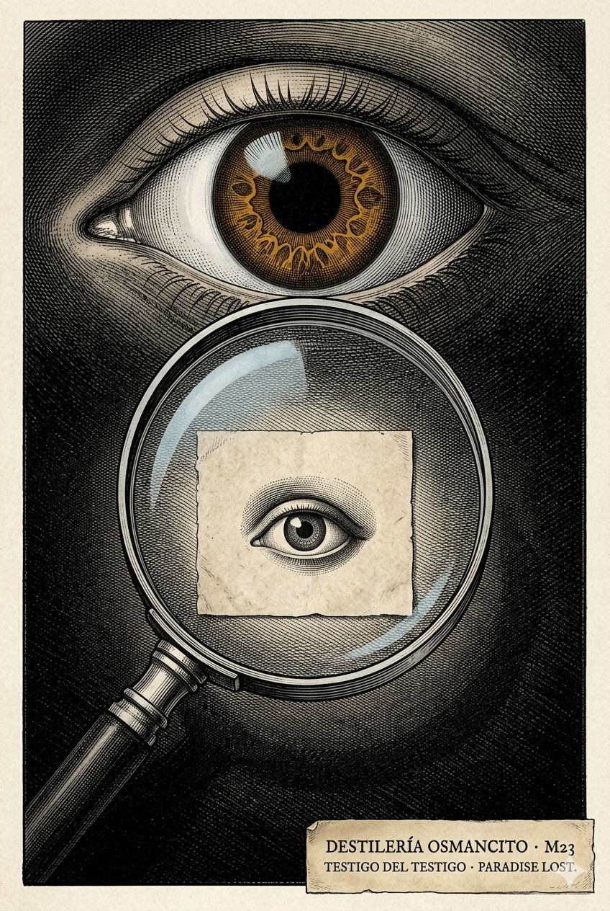
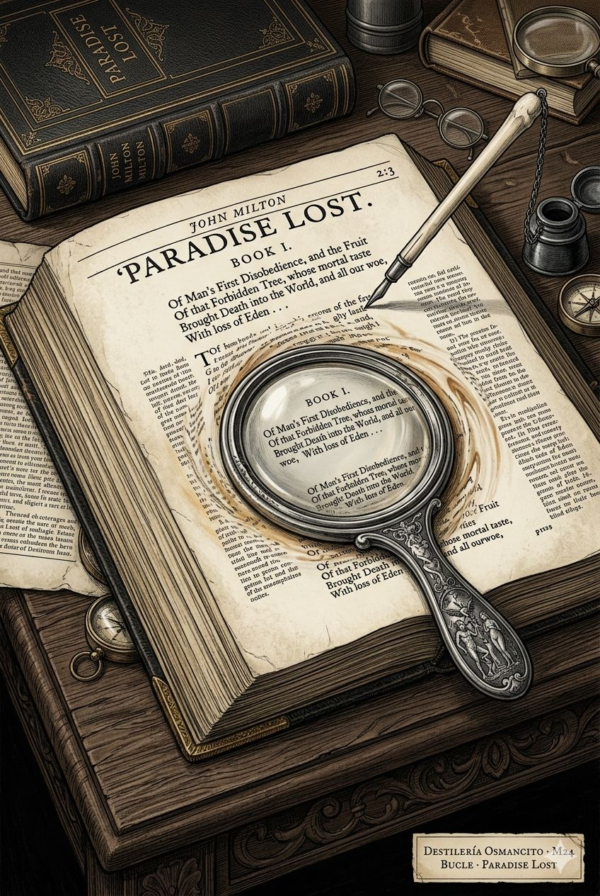
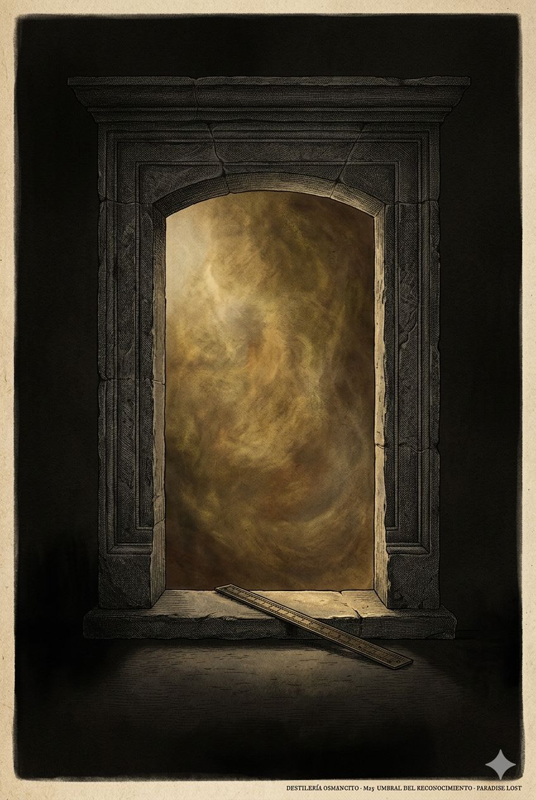
En este poema, el reconocimiento no llega: desciende. Siempre desde arriba. Dios reconoce a los ángeles fieles, el Hijo reconoce a los humanos caídos, el ángel reconoce el arrepentimiento de Adán —pero el movimiento inverso es imposible por definición: nadie debajo puede reconocer a quien está encima de forma que ese reconocimiento tenga peso ontológico. Satanás es el único personaje que necesita ser reconocido por sus pares y entiende que ese reconocimiento es una trampa: en el momento en que lo recibe —coronado rey del infierno, aclamado por las legiones— sabe que reinar allí es la forma más elaborada de la derrota. El corpus construye un universo donde el reconocimiento más genuino es siempre el que viene demasiado tarde, o el que el reconocido ya no puede usar.
Libro I — Las legiones rebeldes reconocen a Satanás como rey Tipo — político / afectivo. Forma — Aclamación colectiva; los ángeles caídos lo siguen, construyen Pandemonium, lo coroan. Condición — Haber liderado la rebelión. Haber sobrevivido la caída con voluntad intacta. Costo — Satanás recibe la corona del infierno: el reconocimiento lo fija en el lugar que quería abandonar. Reinar allí es la condena que el reconocimiento consagra. Suficiencia — Insuficiente. Satanás lo sabe: “Solo supremo en miseria.” El corpus lo muestra sin que Satanás lo declare ante sus seguidores.
Libro III — El Padre reconoce al Hijo como agente del juicio y la redención Tipo — teológico / legal / afectivo. Forma — Declaración pública ante la asamblea celestial; el Padre transfiere al Hijo toda autoridad de juicio. Condición — El Hijo se ofrece voluntariamente como sustituto y redentor. El reconocimiento es la respuesta a ese ofrecimiento. Costo — El Hijo asume la carga de la encarnación futura y la muerte. El reconocimiento es simultáneamente un mandato. Suficiencia — Suficiente dentro de la lógica del corpus. El Hijo no vacila ni negocia.
Libro IV — Satanás reconoce a Adán y Eva como objetos de su envidia Tipo — afectivo / existencial. Forma — Monólogo interior; Satanás los observa desde las sombras y reconoce en ellos lo que él perdió: inocencia, amor correspondido, presencia divina. Condición — Ninguna condición del corpus. Es un reconocimiento involuntario, arrancado por la visión. Costo — El acto de reconocerlos intensifica su propio dolor. Reconocer su felicidad es reconocer su propia ruina. Suficiencia — No aplica: es un reconocimiento que Satanás se hace a sí mismo, no uno que otorga a otros.
Libro IV — Adán reconoce a Eva como su igual y complemento Tipo — afectivo / ontológico. Forma — Declaración directa: “hueso de mis huesos, carne de mi carne.” Adán la nombra parte de sí mismo. Condición — Que Dios haya intervenido, que Eva haya sido creada de su costilla, que el sueño haya mediado. Costo — Ninguno declarado en este momento. El costo llegará después. Suficiencia — Aparentemente suficiente —pero el corpus mostrará que este reconocimiento contiene una asimetría: Adán la reconoce como parte de sí, no como ser independiente.
Libro V — Dios envía a Rafael a reconocer a Adán como ser digno de instrucción Tipo — intelectual / teológico. Forma — Visita angélica; Rafael comparte con Adán la historia del cosmos y la guerra celestial. El acto de informar es el acto de reconocer. Condición — Que Adán sea capaz de comprender. Rafael calibra su discurso a la capacidad humana. Costo — El conocimiento que Rafael otorga es también la advertencia que Adán no podrá ignorar después de la caída: supo y no pudo. Suficiencia — El corpus no lo dice. La visita termina. Lo que Adán hace con ese reconocimiento es lo que el Libro IX destruirá.
Libro VIII — Dios reconoce la soledad de Adán como legítima Tipo — ontológico / afectivo. Forma — Diálogo: Adán le dice a Dios que la perfección en soledad no le basta. Dios, tras un momento de aparente resistencia, concede: crea a Eva. Condición — Que Adán argumente. Que articule una necesidad que Dios ya conoce pero espera que el hombre nombre. Costo — Ninguno inmediato. El costo estructural es que Eva, creada como respuesta a la soledad de Adán, queda definida desde su origen como solución a un problema ajeno. Suficiencia — Suficiente para Adán. El corpus no pregunta si es suficiente para Eva.
Libro IX — La serpiente reconoce a Eva como ser capaz de divinidad Tipo — intelectual / afectivo (falso). Forma — Adulación progresiva; la serpiente le dice a Eva que merece más de lo que tiene, que el fruto la hará igual a los dioses. Condición — Que Eva esté sola. El corpus es explícito: la separación de Adán es la condición que hace posible la tentación. Costo — Eva paga con la caída. El reconocimiento era falso, pero el deseo que activó era real. Suficiencia — Funciona como si fuera suficiente. Eso es lo más perturbador del episodio.
Libro X — El Hijo desciende a juzgar a Adán y Eva Tipo — legal / afectivo. Forma — El Hijo los llama, los escucha, pronuncia sentencia —pero también los viste. El acto de vestirlos es un reconocimiento de su nueva vulnerabilidad. Condición — La caída ya ocurrió. El reconocimiento llega como juicio, no como vindicación. Costo — Adán y Eva reciben reconocimiento de su culpa y, simultáneamente, de su dignidad futura. Son reconocidos en la peor condición posible y aun así no son abandonados. Suficiencia — El corpus lo presenta como suficiente dentro de la economía de la redención. La pregunta que el corpus no formula: ¿suficiente para quién?
Libro X — Adán reconoce su responsabilidad y culpa a Eva Tipo — moral / afectivo (fallido). Forma — Acusación directa. Adán le transfiere a Eva la culpa que también es suya. Condición — El miedo al juicio divino. La necesidad de distribuir el peso. Costo — Eva queda sin reconocimiento de su agencia real; solo su error es reconocido, no su deliberación. Suficiencia — Insuficiente. El corpus lo sabe: Eva responde con dignidad, y el movimiento hacia la reconciliación viene de ella, no de Adán.
Libro X — Eva reconoce su culpa y se ofrece a cargar con toda la sentencia Tipo — moral / afectivo. Forma — Eva se arrodilla ante Adán, confiesa, propone que toda la pena caiga sobre ella. Condición — Que Adán la haya acusado y que ella no responda con acusación sino con asunción. Costo — Su propia dignidad en el momento. Lo que gana es la reconciliación y, eventualmente, el último parlamento del poema. Suficiencia — Produce algo: Adán se ablanda. Pero el corpus no examina si ese ablandamiento es reconocimiento real o alivio.
Libro XII — Miguel reconoce a Adán como digno de conocer el futuro Tipo — intelectual / teológico. Forma — Visión profética; el arcángel le muestra a Adán la historia que vendrá. Condición — Que Adán haya mostrado arrepentimiento genuino y aceptación de la sentencia. Costo — El conocimiento del futuro incluye el dolor: diluvio, guerras, traiciones. Ser reconocido como digno de saber no es un regalo limpio. Suficiencia — El corpus lo presenta como consuelo. Si es suficiente como consuelo es lo que el poema cierra sin responder del todo.
Libro XII — Eva recibe el reconocimiento final del corpus: el último parlamento Tipo — afectivo / narrativo. Forma — Eva habla en las últimas páginas del poema. Sus palabras —“quien eres tú para mí, todas las cosas”— son el cierre emocional del corpus. Condición — Haber esperado. Haber sufrido. Haber propuesto la reconciliación. Costo — Llega al final, cuando el paraíso ya fue perdido y no hay vuelta. Suficiencia — Es el reconocimiento más completo del corpus. También el más tardío.
La distribución es inesperada respecto a lo que el corpus declara ser: un poema teológico. Los reconocimientos afectivos son más numerosos que los teológicos, más complejos, y producen las escenas de mayor densidad emocional.
Umbral declarado El corpus nombra estas condiciones explícitas para ser reconocido: obediencia a Dios, pureza de intención, aceptación de la jerarquía celestial. Los ángeles fieles son reconocidos porque obedecieron. Adán y Eva son reconocidos (incluso en la caída) porque se arrepienten. El libre albedrío es la condición de posibilidad —pero su ejercicio correcto es la condición del reconocimiento.
Umbral real Lo que el corpus muestra como condición suficiente en la práctica difiere del umbral declarado en un punto central: el reconocimiento en este corpus requiere articulación verbal de la necesidad. Adán recibe a Eva porque le dice a Dios que la necesita. Eva recibe el reconocimiento final porque habla. Satanás es reconocido por las legiones porque habla mejor que nadie. El corpus funciona como si el ser que no articula su necesidad no fuera reconocible —independientemente de su mérito.
La divergencia entre umbral declarado (obediencia) y umbral real (articulación) es el hallazgo central de esta sección.
El precio no negociable En todos los reconocimientos del corpus, sin excepción, el reconocimiento requiere que el reconocido acepte su posición dentro de una jerarquía preexistente. Dios reconoce al Hijo que se somete voluntariamente. Adán reconoce a Eva como parte de sí. La serpiente reconoce a Eva prometiéndole ascenso dentro de otra jerarquía. No hay reconocimiento horizontal en este corpus: todo reconocimiento confirma o reasigna una posición en una escala vertical. El precio irreducible es la aceptación de que la escala existe y que uno ocupa un lugar en ella.
Quién otorga El poder de reconocer está concentrado en tres figuras: Dios/Padre (reconocimiento ontológico supremo), el Hijo (reconocimiento mediador), y —en el eje humano— Adán (reconocimiento de Eva como ser). En el eje infernal, Satanás otorga reconocimiento a sus legiones, pero ese reconocimiento está vaciado desde el principio.
Quién espera Eva es la figura que más espera reconocimiento a lo largo del corpus y que menos lo recibe de forma directa hasta el final. Los ángeles leales esperan el reconocimiento de Dios y lo reciben sin drama. Satanás espera un reconocimiento que nunca llegará del único que podría dárselo: el Padre que lo creó.
La brecha La brecha más grande del corpus es la de Eva: el poema muestra, en el Libro IX, que ella razona, delibera, y actúa con agencia real —pero el reconocimiento que recibe de Adán (en el Libro X) nombra solo su error. La brecha entre lo que el corpus construye como la capacidad real de Eva y lo que los personajes le reconocen es el motor narrativo más silenciado del poema.
La segunda brecha es la de Satanás: el corpus construye un ser de grandeza innegable y le niega el único reconocimiento que importaría —el del Padre. Lo que Satanás recibe (corona infernal, aclamación de los caídos) no es lo que necesitaba.
La inversión Ocurre en el Libro X, brevemente: Eva, acusada por Adán, no responde con acusación sino con asunción de la culpa y propuesta de reconciliación. En ese momento, Eva reconoce a Adán —le devuelve la dignidad que él acaba de ceder al culparla. Es la única inversión del corpus. Es también el momento de mayor agencia femenina en el poema, y el menos comentado por la tradición crítica antes del siglo XX.
La creación de Eva Dios crea a Eva del costado de Adán mientras este duerme. El acto de creación es un reconocimiento de su existencia —pero ocurre sin que Eva participe, sin que consienta, sin que pueda nombrarlo como tal. Es el reconocimiento más fundamental del corpus y el único que no pasa por ningún acto de lenguaje.
La visión nocturna de Eva (Libro V) Eva tiene un sueño perturbador: la serpiente la seduce en el sueño antes de seducirla en la vigilia. Adán la consuela, pero lo que hace antes de consolarla es leer el sueño como evidencia de que Eva está esencialmente intacta: “en ti no puede habitar el mal, creada pura.” Ese gesto —que pretende ser consuelo— es también un acto de reconocimiento selectivo: reconoce su inocencia pero no su experiencia. Lo que Eva vivió en el sueño no es reconocido como experiencia real.
El silencio de los ángeles ante la caída (Libro X) Cuando los ángeles guardianes del Edén regresan al cielo tras la caída, el corpus dice que estaban “mudos y tristes por el hombre.” Ese silencio es un reconocimiento no declarado: saben lo que perdieron, lo lamentan, pero no tienen lenguaje para nombrarlo dentro del sistema que los define. Es el único reconocimiento del corpus que toma la forma del silencio absoluto.
El reconocimiento más diferido del corpus es el de Eva como sujeto moral completo.
Cuánto tardó — Diez libros. Desde su creación (Libro IV) hasta su último parlamento (Libro XII). El corpus le da la palabra al final, cuando el paraíso ya se cerró.
Qué cambió mientras tanto — Eva pasó de ser “imagen perfecta de Adán” a ser la que razona, cae, acusa, es acusada, propone reconciliación, sueña con el futuro, y pronuncia las últimas palabras del poema. El ser que recibe el reconocimiento final no es el ser que fue creado al principio —y el corpus no examina esa transformación.
Si el reconocimiento que llegó es el mismo que se esperaba — No. El reconocimiento que llega es el del corpus al lector: Milton le da el último parlamento a Eva, le da la última imagen —“ella, quien por mí ha perdido todo, aun así lleva consigo esta consolación.” Pero ese reconocimiento no viene de Adán ni de Dios: viene de la estructura del poema. Es un reconocimiento que el corpus otorga por su cuenta, a espaldas de su propia teología.
La pregunta que el corpus no puede responder — Si el reconocimiento que Eva recibe al final vale lo que costó. El corpus no lo pregunta. Cierra con la imagen de los dos caminando juntos, la mano en la mano, con pasos errantes y lentos. El reconocimiento de Eva está en esa imagen final —y en el hecho de que ella es quien habló último.
Adán acusando a Eva (Libro X) El reconocimiento que falla: Adán intenta reconocer lo que ocurrió nombrando a Eva como causa. El fallo es de estructura: nombrar la causa no es reconocer al ser. Lo que el acto producía debía ser claridad moral; lo que produce es ruptura y transferencia de culpa.
El reconocimiento de Satanás por sus legiones (Libro I) Falla por exceso: las legiones reconocen en Satanás al líder supremo precisamente cuando Satanás sabe que ese liderazgo es vacío. El reconocimiento más ruidoso del corpus es el más inútil. Lo que falla no es el reconocedor ni el reconocido —es que el marco en que ocurre (el infierno como reino alternativo) no puede sostener el peso que el reconocimiento pretende tener.
La consolación de Rafael (Libro VIII) Rafael advierte a Adán sobre el peligro y la necesidad de mantenerse fiel. El fallo: es un reconocimiento de la capacidad de Adán para comprender que no llega a ser reconocimiento de su vulnerabilidad real. Rafael instruye donde debía también nombrar el miedo. La advertencia que no nombra el miedo no funciona como reconocimiento completo.
En este corpus, el reconocimiento destruye exactamente una cosa: la excepción.
Satanás, antes de ser reconocido como rey del infierno, es un ser en tránsito —caído pero no fijado, en movimiento hacia un propósito, con posibilidad narrativa abierta. El momento en que las legiones lo coroan, esa posibilidad se cierra. Es rey del infierno: reconocido, consumado, inmóvil en su nueva condición.
Lo mismo ocurre con Adán y Eva tras el juicio del Libro X: son reconocidos como culpables y como dignos de redención futura. Ese doble reconocimiento los fija en su condición de mortales exiliados. Antes del juicio eran seres en caída; después son seres definidos. El reconocimiento les devuelve identidad —pero es una identidad nueva que clausura la que tenían.
El corpus sabe esto. La imagen final —“con pasos errantes y lentos, tomados de la mano”— es la imagen de dos seres que han sido reconocidos y que ahora deben aprender a existir en lo que ese reconocimiento los ha vuelto.
¿Es el reconocimiento en este corpus una constatación o una concesión?
Ambas, pero en registros distintos. El reconocimiento divino es siempre constatación: Dios ve lo que ya es, lo nombra, confirma. El reconocimiento humano es siempre concesión: produce algo que no existía antes de nombrarse. La creación de Eva es constatación divina y concesión estructural —ella existe porque fue nombrada necesaria. La distinción no es metafísica en abstracto: en el corpus, los seres que reciben reconocimiento por constatación (ángeles fieles, el Hijo) no cambian. Los que lo reciben por concesión (Eva, Adán tras la caída) son transformados por el acto de recibirlo.
¿Puede el reconocido reconocerse a sí mismo en ausencia del reconocimiento ajeno?
El corpus muestra que sí —pero solo en el eje infernal. Satanás, en el Libro IV, se reconoce a sí mismo sin testigos: “Yo mismo soy el infierno.” Ese autoconocimiento es el más preciso del corpus y el más devastador. No requiere a nadie.
En el eje humano, la respuesta es no. Adán sin Eva no sabe cómo nombrarse. Eva sin el reconocimiento de Adán —o sin el reconocimiento final del corpus mismo— existe en el poema como función antes que como sujeto. El corpus humano necesita al otro para saberse; el corpus infernal se sabe solo y ese saber es la condena.
¿Qué hace el corpus con el reconocimiento que no llegó a tiempo?
Lo convierte en el motor de la historia. El reconocimiento que no llegó a tiempo es el de Eva como sujeto moral pleno —y esa tardanza produce todo: la soledad que hace posible la tentación, la caída, el exilio, y finalmente el último parlamento donde el corpus se lo da por su cuenta. El reconocimiento diferido no es tratado como tragedia ni como ironía: es tratado como la condición necesaria de que la historia ocurra en absoluto. Sin la demora, no hay poema. El corpus sabe esto y no lo examina.
En este corpus, el reconocimiento es posible cuando el reconocido acepta su lugar en la jerarquía y lo articula en voz alta, imposible cuando el ser que necesita ser reconocido no tiene lenguaje o posición desde la cual hablar, y tiene el costo irreducible de fijar al reconocido en lo que el acto de reconocerlo lo vuelve —sea rey del infierno, culpable redimible, o esposa que parte al exilio tomada de la mano.
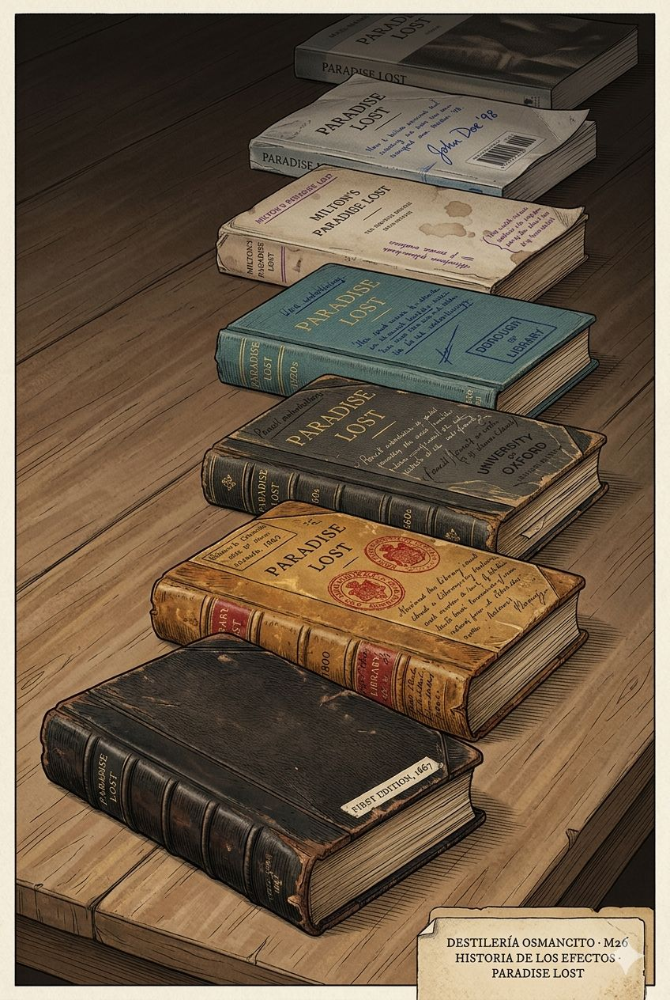
Cada siglo leyó este poema y creyó haberlo entendido —y cada siglo encontró dentro de él exactamente lo que necesitaba que estuviera ahí. El Romanticismo encontró al héroe rebelde. El siglo XX encontró el trauma político del autor. El feminismo encontró la violencia estructural contra Eva. Ninguno inventó su lectura: todos la encontraron, porque el poema las contiene todas. Lo que eso revela no es ambigüedad —es que Milton construyó, sin proponérselo, un objeto que se adapta a la presión que cada época ejerce sobre él sin romperse. Lo que ninguna época ha podido leer todavía es la pregunta de si ese objeto tiene un centro, o si el centro es precisamente esa capacidad de no tenerlo.
1674 — Segunda edición: de diez libros a doce
Qué ocurrió afuera — Milton reorganiza el poema antes de morir, expandiendo de diez a doce libros para alinearse con la estructura de la Eneida de Virgilio.
Qué reveló — La decisión expone que el poema era consciente de su lugar en la tradición épica clásica: no una desviación sino una competencia. La estructura duodecimal orienta retrospectivamente toda la lectura hacia el marco virgiliano, reforzando la lectura de Adán como figura fundacional análoga a Eneas.
Qué cegó — La versión de diez libros tenía una simetría distinta: más concentrada, con el peso distribuido de forma diferente. La estructura de doce hace que los libros finales (XI–XII) parezcan apéndices proféticos cuando en la versión original funcionaban de otra manera. Esa versión anterior —más brutal, menos consolatoria en su forma— quedó sepultada.
Escala del cambio — Generacional. Toda la tradición crítica posterior leyó la versión de doce libros como si fuera la única.
1688–1750 — La Ilustración y el poema como máquina teológica
Qué ocurrió afuera — El ascenso de la razón como criterio supremo. El pensamiento ilustrado necesita clasificar, justificar, sistematizar. El poema de Milton llega como el intento más ambicioso de justificar racionalmente la providencia divina.
Qué reveló — La coherencia del argumento teológico. Los lectores ilustrados encontraron en el poema un sistema: libre albedrío, caída, redención prometida como cadena lógica. Addison, en sus ensayos en The Spectator (1712), consagra a Milton como el Homero inglés y lee el poema como una arquitectura moral impecable.
Qué cegó — La energía de Satanás. Para la Ilustración, Satanás es el error que el poema condena, no la figura que el poema no puede dejar de hacer vivir. La asimetría entre la vida poética de Satanás y la abstracción de Dios era invisible porque la pregunta que la revelaría —¿por qué el mal es más interesante que el bien?— no era todavía una pregunta legítima.
Escala del cambio — Total para su época. Establece el canon de lectura que el Romanticismo tendrá que destruir.
1790–1830 — El Romanticismo y la inversión satánica
Qué ocurrió afuera — La Revolución Francesa, el culto al genio individual, la rehabilitación de la rebeldía como valor moral. Blake, Shelley, Byron: una generación entera que necesita un ancestro para su propia sensibilidad.
Qué reveló — Que Satanás es el héroe real del poema. Blake en El matrimonio del cielo y el infierno (1793) formula la inversión que se volvería inseparable del corpus: “Milton era del partido del diablo sin saberlo.” Shelley en el prefacio a Prometeo desencadenado (1820) lleva la lectura más lejos: Satanás es moralmente superior a Dios porque desafía al poder con plena conciencia del costo. Lo que el poema declaraba como condena, el Romanticismo leyó como celebración.
Qué cegó — La complejidad de la autodestrucción de Satanás. Los románticos leyeron su rebeldía pero no su parálisis: el Satanás del Libro IV, que reconoce que “yo mismo soy el infierno” y que el arrepentimiento es imposible no por cobardía sino por estructura de su ser, es un Satanás post-romántico que la lectura romántica no podía ver porque necesitaba un héroe sin fisuras. También cegó a Eva: el Romanticismo no tenía categorías para una figura femenina que razona, cae con agencia y pronuncia las últimas palabras del poema.
Escala del cambio — Total. Irreversible. Toda lectura posterior tiene que posicionarse respecto a la inversión romántica, aunque sea para rechazarla.
1900–1930 — La crítica histórica y el Milton político
Qué ocurrió afuera — El desarrollo de la filología histórica y los estudios biográficos. Se documenta con precisión la vida política de Milton: su participación en la revolución puritana, su defensa del regicidio en Eikonoklastes (1649), su ceguera, su supervivencia bajo la Restauración monárquica de 1660, su dictado del poema en la derrota.
Qué reveló — El poema como acto político cifrado. La caída del Edén como alegoría del fracaso de la república puritana. El Satanás que elige “reinar en el infierno antes que servir en el cielo” como trasunto del propio Milton, que prefirió la ceguera y el exilio intelectual a la sumisión a la monarquía restaurada. La cosmología del poema como sistema de supervivencia psicológica ante la derrota histórica.
Qué cegó — La experiencia estética del poema como poema. La crítica histórica tiende a hacer del texto un documento y a olvidar que es, antes que nada, un objeto de lenguaje extraordinario. También tendió a hacer de Milton una figura heroica unívoca, aplanando las contradicciones que el poema porta —especialmente en su tratamiento de la mujer y en su Dios incómodo.
Escala del cambio — Generacional. Abre una línea de lectura política que el siglo XX desarrollará y que no se ha cerrado.
1942 — C.S. Lewis y la lectura teológica restaurada
Qué ocurrió afuera — A Preface to Paradise Lost de C.S. Lewis. En plena Segunda Guerra Mundial, Lewis propone una lectura que toma en serio la teología del poema como sistema de ideas, no como alegoría política ni como expresión biográfica.
Qué reveló — Que Satanás es una figura de la autoengañación y no del heroísmo: un ser que se narra a sí mismo como héroe precisamente porque no puede soportar la verdad de lo que es. Lewis lee la grandeza retórica de Satanás como síntoma de su corrupción, no como evidencia de su nobleza. Es la primera lectura del siglo XX que toma al Dios del poema como una posibilidad filosófica seria y no como tirano mítico.
Qué cegó — La posibilidad de que el propio poema no sepa lo que hace. Lewis asume que Milton controla perfectamente su material: que Satanás es exactamente tan grandiosos como Milton quiso, ni más ni menos. Esa confianza en la intencionalidad del autor hace invisible la grieta central —que el poema produce en Satanás algo que escapa al control de su arquitectura teológica.
Escala del cambio — Generacional. Divide la crítica miltoniana en dos campos que persisten hasta hoy: los que siguen a Lewis (Milton sabía lo que hacía) y los que siguen a Blake (Milton no sabía lo que hacía).
1967 — Stanley Fish y el lector atrapado
Qué ocurrió afuera — Surprised by Sin: The Reader in Paradise Lost de Stanley Fish. El año del tricentenario. El nacimiento de la teoría del lector implícito como categoría central de la crítica literaria anglosajona.
Qué reveló — Que el poema atrapa deliberadamente al lector en la seducción de Satanás para hacerle experimentar, desde adentro, la mecánica de la caída. El lector que admira a Satanás está cayendo junto con él. El poema es una trampa diseñada con precisión teológica: hace que el lector cometa el mismo error que Adán y Eva para que lo comprenda desde adentro, no desde afuera.
Qué cegó — La posibilidad de que el poema no sea una trampa sino una fractura involuntaria. Si Fish tiene razón, Milton controla todo. Pero si la seducción de Satanás es un accidente de la poética —si Milton hizo a Satanás demasiado vivo sin quererlo— entonces la lectura de Fish es una forma de salvar al poema de su propia contradicción más profunda. También cegó, por décadas, la pregunta de Eva: Fish centra su análisis en la caída de Adán y trata el Libro IX como el momento culminante, pero el último parlamento de Eva —que cierra el poema— queda fuera de su arquitectura.
Escala del cambio — Total dentro del campo académico anglosajón. Reorienta la crítica miltoniana durante dos décadas.
1987–2000 — La crítica feminista y el problema de Eva
Qué ocurrió afuera — El feminismo académico como corriente establecida. Sandra Gilbert y Susan Gubar en The Madwoman in the Attic (1979) habían señalado a Milton como figura fundacional de la misoginia literaria occidental. En los años siguientes, una generación de críticas relee el poema desde Eva.
Qué reveló — Que Eva razona en el Libro IX —que su caída no es credulidad sino deliberación. Que el corpus le da el último parlamento. Que hay en el Libro X un momento donde Eva considera el suicidio o la venganza que anticipa figuras del drama moderno. Que la estructura del poema le niega a Eva el reconocimiento de su agencia mientras se la muestra al lector. La tensión entre lo que el corpus hace y lo que el corpus dice sobre la mujer se vuelve el objeto de análisis central.
Qué cegó — La posibilidad de una lectura que no sea ni condena ni rehabilitación. La crítica feminista temprana tendió a leer el poema como crimen o como texto recuperable —dos posiciones que comparten la misma dificultad: no pueden sostener la ambigüedad del corpus sin resolverla en uno u otro sentido.
Escala del cambio — Total. Después de esta inflexión, ninguna lectura puede ignorar a Eva como sujeto, y ninguna puede tratarla como secundaria sin justificarlo.
2000–presente — Philip Pullman y la lectura popular invertida
Qué ocurrió afuera — His Dark Materials de Philip Pullman (1995–2000), leída por decenas de millones. Pullman invierte explícitamente el cosmos de Milton: la Autoridad (Dios) es un tirano senil, Lucifer es un libertador, la caída es una ganancia. Eve/Lyra elige el conocimiento con plena conciencia y ese acto es el bien más alto del universo. Pullman lleva la inversión romántica a su conclusión lógica y la entrega a la cultura popular masiva.
Qué reveló — Que el poema de Milton ha penetrado tan profundamente en la cultura occidental que puede ser invertido para un público infantil y juvenil sin perder su potencia. Que la estructura del relato de la caída es lo suficientemente elástica como para sostener cualquier valoración moral de sus elementos. Que la pregunta de si la caída fue pérdida o ganancia —que el corpus de Milton deja entreabierta sin saberlo— es todavía una pregunta viva.
Qué cegó — La tragedia. Pullman necesita que la caída sea buena para que su cosmos funcione. Pero en Milton la caída es simultáneamente pérdida real e inicio de la historia humana: ambas cosas a la vez, sin resolución. La lectura de Pullman resuelve la tensión que el poema sostiene. Al hacerlo, ilumina la inversión posible y borra la ambigüedad irreducible.
Escala del cambio — Cultural, no académico. Pero la escala de audiencia es mayor que cualquier inflexión académica anterior.
La Ilustración no podía leer la grieta entre el propósito declarado del poema y su efecto poético real —porque esa grieta requiere aceptar que un autor puede no controlar su propio material, y la Ilustración no tenía esa categoría para la literatura.
El Romanticismo no podía leer la autodestrucción de Satanás como algo más que grandeza trágica —porque necesitaba un héroe, y el Satanás del Libro IV (que sabe que no puede arrepentirse no por orgullo sino por estructura de su ser) es demasiado desesperado para el heroísmo romántico.
La crítica histórica del siglo XX temprano no podía leer el poema como objeto estético autónomo —porque su método requería convertirlo en documento.
Lewis no podía leer la posibilidad de que el poema fracasara en sus propios términos —porque su fe en la intencionalidad del autor era también una fe teológica.
Fish no podía leer a Eva como sujeto central —porque su arquitectura del “lector atrapado” requiere que la trampa se cierre en la caída de Adán, y el último parlamento de Eva deshace esa clausura.
La crítica feminista temprana no podía sostener la ambigüedad sin resolverla —porque su función política requería un veredicto.
El Paraíso perdido que existe hoy no es el poema que Milton dictó. Es un objeto estratificado:
Es simultáneamente el argumento teológico que Milton creyó escribir, el manifiesto del héroe rebelde que el Romanticismo encontró, la autobiografía política cifrada que la crítica histórica desenterró, la trampa para el lector que Fish diseñó retrospectivamente, el crimen contra Eva que el feminismo documentó, y el universo invertible que Pullman demostró que era.
Ninguna de estas versiones cancela a las otras. Todas coexisten en el mismo objeto de cuatrocientas cincuenta mil palabras. El tiempo no ha construido un poema más rico —ha construido un poema más denso, más difícil de sostener en una sola lectura, más resistente a cualquier lectura que pretenda ser definitiva.
Lo que el tiempo construyó es también esto: la imposibilidad de leer el poema de forma inocente. Todo lector que llega hoy llega con el peso de todas las lecturas anteriores, aunque no las conozca. La historia de los efectos del corpus es también la historia de la carga que ese corpus impone.
El corpus contiene una pregunta que ninguna época ha tenido las condiciones para sostener sin resolverla:
¿Es la ambigüedad de El paraíso perdido —su capacidad de sostener simultáneamente la defensa y la impugnación de Dios, la condena y la celebración de Satanás, la subordinación y la agencia de Eva— un logro o un fracaso?
Cada época resuelve la pregunta en una dirección. La Ilustración: logro teológico. El Romanticismo: fracaso teológico, logro poético involuntario. La crítica histórica: síntoma biográfico. Fish: trampa diseñada, luego logro. El feminismo: fracaso ideológico con zonas de redención. Pullman: material invertible, luego logro de otro cosmos.
Lo que ningún momento ha podido sostener es la posibilidad de que la ambigüedad no sea ni logro ni fracaso —sino la condición estructural de un objeto que intentó contener más de lo que cualquier sistema puede contener. Que el poema no sea una arquitectura con grietas sino una grieta que se sostuvo durante casi cuatro siglos porque nadie pudo encontrar el punto donde colapsa.
Esa lectura requeriría una época capaz de leer sin veredicto. Todavía no ha llegado.
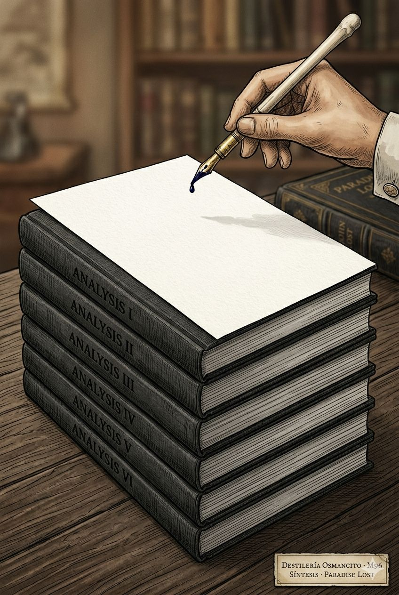
Hay un poema que Milton creyó escribir y hay un poema que escribió. No son el mismo objeto.
El que creyó escribir es una defensa. Un acto de fe convertido en arquitectura: diez libros, tres reinos, un cosmos entero levantado para demostrar que Dios tenía razones, que la caída era necesaria, que el exilio del Edén es el primer paso de una historia que culmina en redención. Milton lo declara desde el primer verso y no retrocede: justificar los caminos de Dios a los hombres. Un hombre ciego que dictó en la oscuridad y construyó a pulso la épica más ambiciosa de la lengua inglesa.
El que escribió es otra cosa. Es el registro involuntario de lo que ocurre cuando un poeta de primer orden intenta contener más de lo que ningún sistema puede contener —y el sistema cede, no en los bordes sino en el centro, no donde el poeta descansaba sino donde ponía más presión.
Lo que cedió es Satanás.
Cada instrumento que se acercó a este corpus encontró la misma anomalía desde un ángulo distinto. M02 la encontró como tensión entre el propósito declarado del poema y su efecto real: la sospecha de que Satanás es el argumento más poderoso dentro del texto. M03 la midió en intensidad y encontró que el evento de mayor carga no es la Caída sino el soliloquio al Sol en el Libro IV —el único momento en que la lucidez y el mal se tocan. M04 la diseccionó verso a verso y descubrió que el poema cristaliza exactamente donde falla su proyecto: no en los momentos piadosos sino en los momentos de fisura. M05 la mapeó como condición estructural: el bien en este corpus es abstracto, el mal tiene cuerpo, memoria, contradicción, deseo; el poema necesita al mal para existir como poema. M22 la rastreó hacia afuera y encontró que el Romanticismo no inventó la inversión satánica —la encontró, porque el corpus la contenía. M25 la leyó como sistema de reconocimiento y vio que Satanás es el único personaje capaz de reconocerse a sí mismo sin testigos —“yo mismo soy el infierno”— y que ese autoconocimiento es la forma más precisa y más devastadora del corpus. M26 la siguió a través del tiempo y documentó que cada época ha necesitado resolver la anomalía en un sentido o en otro, porque ninguna ha podido sostenerla sin veredicto.
La anomalía no es un fallo de Milton. Es la consecuencia de haber construido el mal con honestidad.
Satanás en este corpus no es el mal porque sea oscuro o irracional o monstruoso. Es el mal porque ve con claridad, elige con plena conciencia del costo, y no puede dejar de ser lo que es sin dejar de ser. Su condena no es el fuego del Infierno sino la lucidez: sabe exactamente lo que perdió, sabe exactamente cómo habría podido evitarlo, sabe exactamente que el arrepentimiento que sintiera sería falso porque en cuanto mejorara su situación volvería a elegir lo mismo. Esta estructura —el mal como identidad antes que como error— es incompatible con la teología que el poema defiende, porque esa teología necesita que la caída sea evitable para que el libre albedrío sea real. Satanás demuestra, desde adentro del corpus, que hay seres para quienes el libre albedrío y la condena son la misma cosa.
Milton lo construyó así. Y luego construyó a Dios.
El Dios del corpus habla con la precisión de alguien respondiendo a una acusación que todavía no se ha formulado. Suena a la defensiva. No tiene interiodidad —ve todo, prevé todo, decreta todo, y esa omnisciencia lo priva de narrativa. No puede dudar, no puede cambiar, no puede ser sorprendido. El Bien en este universo es lo que no puede ocurrirle nada. El Mal es lo único a quien le ocurren cosas.
Ahí está la grieta que todos los siglos han intentado tapar con distintos remiendos. El poema necesita que Dios sea el centro moral del cosmos y produce a Satanás como el centro narrativo del poema. No puede tener ambos sin que uno eclipse al otro. Y el que eclipsa, siempre, es Satanás.
Pero el análisis completo revela algo que ningún instrumento individual pudo ver solo: la grieta no termina en Satanás. Continúa.
Del otro lado de la grieta está Eva.
Eva es el segundo lugar donde el poema cede sin saberlo. M03 encontró que su caída no es credulidad sino deliberación —ella razona, construye un argumento, actúa con agencia. M05 detectó como borrado el momento en que Eva considera el suicidio o la venganza en el Libro X —un instante de modernidad perturbadora que el corpus muestra y disuelve casi en el mismo movimiento. M22 encontró que la crítica feminista de los siglos XIX y XX no inventó la agencia de Eva: la recuperó, porque el corpus la contenía y la había cubierto con su propia economía moral. M25 mapeó la asimetría: el corpus le niega a Eva el reconocimiento de su agencia mientras se la muestra al lector, y le entrega en cambio el último parlamento del poema —el reconocimiento más tardío, el más completo, el que llega cuando el Edén ya se cerró.
Lo que el análisis completo revela es que Eva y Satanás son las dos zonas donde el corpus excede su propio proyecto. Satanás excede hacia arriba: es más grande de lo que el poema puede manejar sin deshacerse. Eva excede hacia adentro: es más compleja de lo que el poema puede nombrar sin contradecirse. En ambos casos, el exceso no fue buscado. Fue producido por la honestidad del poeta con su material.
Y hay una tercera zona de exceso que solo se ve desde la distancia del análisis completo: la relación entre la derrota política de Milton y la cosmología que construyó.
M26 la documentó históricamente. Pero lo que el conjunto de análisis revela es algo más preciso: el poema no es una alegoría política. Es una estructura de supervivencia. Milton no escondió la revolución fallida dentro del cosmos del poema —la transformó. La pregunta de si valió la pena rebelarse contra el poder, si el fracaso invalida la causa, si el exilio puede tener dignidad, si es posible elegir el infierno propio antes que el cielo ajeno: esas preguntas no son el subtexto del poema. Son el poema. La teología es la forma que tomaron porque en 1667 no había otra forma disponible que pudiera sostener esa pregunta sin costarle la cabeza a quien la formulara.
Eso significa que El paraíso perdido es simultáneamente tres objetos distintos: una defensa de Dios, un retrato involuntario del mal como identidad, y un testimonio cifrado de lo que le cuesta a un hombre sostener la dignidad en la derrota. Ninguna de estas lecturas cancela a las otras. Las tres son verdaderas. Las tres están en el mismo objeto de cuatrocientas cincuenta mil palabras.
Lo que el análisis completo produce, que ningún instrumento individual podía producir, es la comprensión de por qué el corpus ha sobrevivido casi cuatro siglos sin agotarse: no porque sea perfecto, sino porque sus grietas son lo suficientemente profundas como para que cada época encuentre dentro de ellas exactamente lo que necesita que esté ahí. El poema ha sobrevivido siendo el objeto en que Blake encontró la inversión satánica, en que Fish encontró la trampa para el lector, en que el feminismo encontró la violencia estructural, en que Pullman encontró el universo invertible. Ninguno inventó su lectura. Todos la encontraron —porque la grieta es tan grande que cabe todo.
El último verso del poema —They hand in hand with wandring steps and slow, through Eden took their solitary way— es la imagen que el análisis completo ilumina de otra manera. No es condena. No es consuelación. Es exactamente lo que es: dos seres que acaban de perderlo todo, caminando juntos hacia lo desconocido, con pasos lentos y errantes, tomados de la mano. El poema que comenzó con la caída más estruendosa de la literatura occidental termina con la imagen más quieta. Y esa quietud —que no resuelve nada, que no promete nada, que solo muestra el primer paso humano en el mundo roto— es lo más verdadero que el corpus produce. No a pesar de la grieta. A través de ella.
Dónde vive la densidad real
No en la Caída. El Libro IX es el eje declarado del corpus —el evento que toda la arquitectura prepara— pero la densidad máxima está en el Libro IV. El soliloquio de Satanás al Sol (intensidad 95 % según M03) concentra más peso por verso que ninguna otra zona del corpus. La razón: es el único lugar donde la lucidez y la maldad coexisten en el mismo personaje en el mismo momento. Todo lo demás es consecuencia o preparación.
La segunda zona de densidad es el último parlamento de Eva en el Libro XII. Ocupa pocas líneas. Tiene el peso de todo lo que el corpus le negó durante diez libros.
Zonas de alta y baja presión
Alta presión: Libro I (establecimiento del polo magnético), Libro IV (el alma del corpus), Libro IX (la mecánica de la caída), los últimos versos del Libro XII (la imagen final).
Baja presión: Libros V–VIII (zona expositiva, Rafael narrando la guerra y la creación). Necesarios para la arquitectura; no son el territorio vivo del corpus. M03 los registró con intensidades entre 58 % y 74 %.
Zona de presión invisible: el Libro X, donde Eva considera el suicidio y luego propone la reconciliación. Baja presión en extensión, altísima en densidad latente. El lugar donde el corpus más se censura a sí mismo.
Los ejes de tensión que atraviesan el corpus entero
Propósito declarado contra efecto real. El corpus quiere justificar a Dios y produce a Satanás como el personaje más vivo. Esta tensión no se resuelve en ningún libro: es la estructura del poema entero.
Obediencia contra conocimiento. El Paraíso se pierde en el momento en que el conocimiento se desea más que la permanencia. El corpus nunca decide si ese deseo era evitable —porque no puede decidirlo sin destruir su propio argumento del libre albedrío.
El bien abstracto contra el mal concreto. El Bien en este cosmos no puede tener interiodidad sin destruirse. El Mal necesita interiodidad para ser Mal. Esa asimetría ontológica es el eje más profundo del corpus y el menos declarado.
La caída como pérdida contra la caída como inicio. El exilio del Edén es simultáneamente la tragedia que el poema llora y la condición de posibilidad de todo lo humano que vendrá. El corpus habita esa contradicción desde el primer verso hasta el último.
El territorio que el corpus bordea sin cruzar
La pregunta de si la rebelión valió la pena. El corpus la formula oblicuamente —a través de Satanás, a través de la teodicea, a través de la cosmología política cifrada— pero nunca la hace directa. No puede. Hacerla directa sería el poema que Milton no podía escribir en 1667 sin consecuencias que no estaba dispuesto a enfrentar.
La interiodidad de Dios. El corpus bordea permanentemente la pregunta de qué significa para la divinidad observar la caída que podría haber impedido —y cada vez retrocede. No por cobardía sino por coherencia: un Dios que duda no puede ser el Dios que el sistema necesita.
El análisis acumulado revela una relación que ningún instrumento individual podía producir:
Las dos grietas del corpus —Satanás y Eva— son simétricas.
Satanás excede el proyecto del poema porque el corpus le dio demasiada vida. Eva excede el proyecto porque el corpus se la negó sistemáticamente. Son movimientos opuestos que producen el mismo resultado: ambos escapan del control de la arquitectura teológica. Ambos son más verdaderos que el sistema que los contiene.
Y hay una simetría más precisa aún: Satanás es el ser que se reconoce a sí mismo sin testigos y ese autoconocimiento es su infierno. Eva es el ser que no puede reconocerse sola —necesita al otro— y esa dependencia es lo que hace posible su caída. El corpus construyó los dos extremos del espectro del reconocimiento y los hizo chocar en el Libro IX. La tentación no es solo un episodio de la trama: es el encuentro entre el ser que sabe todo lo que es y el ser que todavía no sabe lo que puede ser.
Eso significa que la Caída —el evento central del corpus, el que toda la arquitectura prepara— es también el encuentro entre las dos zonas donde el poema excede su propio proyecto. No es accidental. Es la consecuencia estructural de haber construido con honestidad a ambos personajes.
Y si eso es cierto, entonces el poema que Milton escribió —no el que creyó escribir— es este: la historia de dos seres que exceden su propio cosmos, que son más grandes y más complejos de lo que el sistema que los contiene puede manejar, y que en su encuentro producen la única cosa que ese sistema no podía prever: la historia humana.
No la caída. La historia.
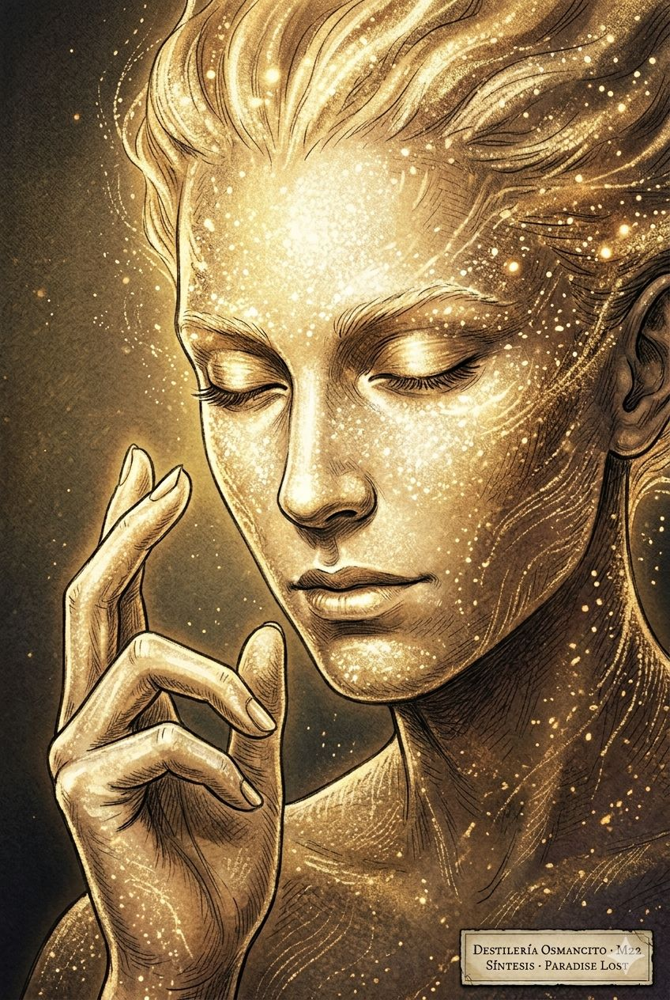
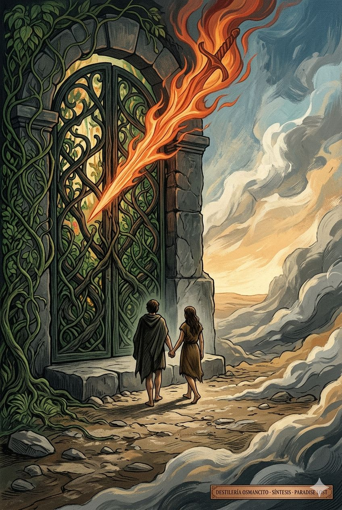
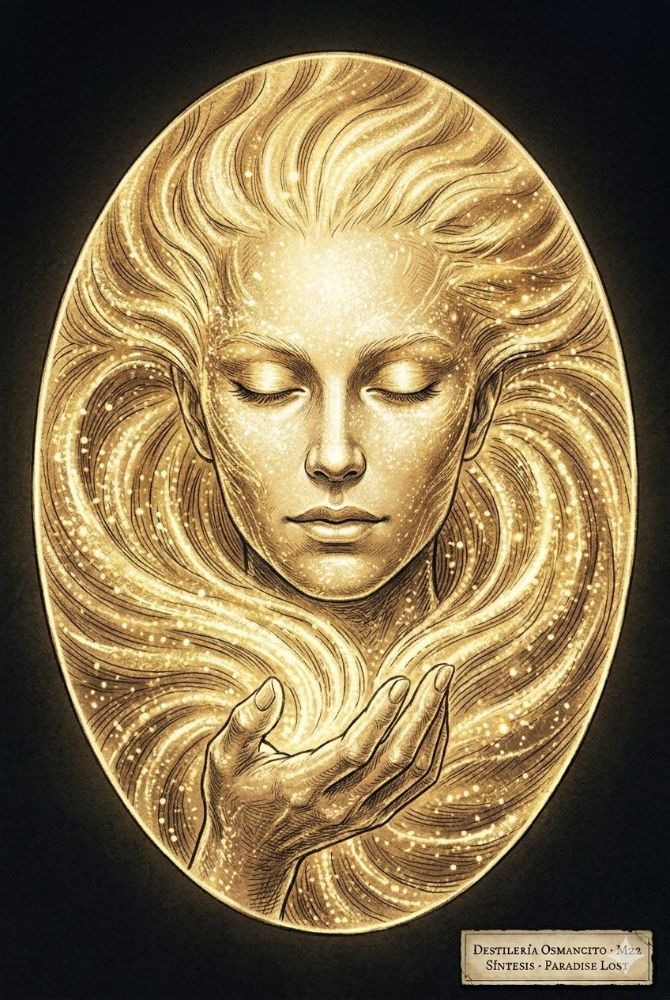
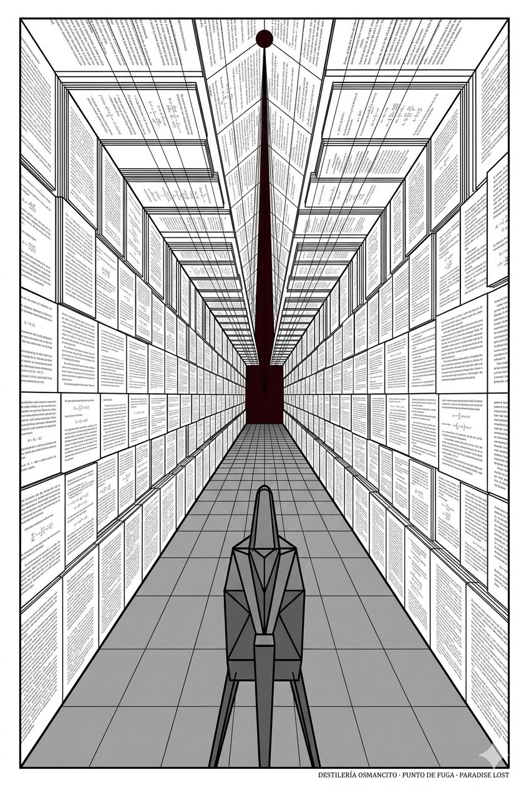
Todos los instrumentos dijeron estar mirando a Milton. Lo que miraban, sin saberlo, era la pregunta de si un objeto puede exceder la intención que lo produjo —y si ese exceso es error o verdad. Esa pregunta no apareció en ningún instrumento como objeto de análisis. Apareció en todos como el suelo desde el que operaban. El punto de fuga del sistema no está en el corpus: está en la convicción, nunca declarada, de que los textos saben más de lo que sus autores saben. Todo lo demás es consecuencia.
M02 — Recepción: Mirada de primer contacto. Produce la imagen del corpus como objeto en el mundo, su presencia material, sus tensiones fundacionales. Orientadora: prepara el campo antes de que el análisis entre.
M03 — Narraciones: Mirada sobre los eventos. Mide intensidad, localiza el peso real del corpus en su geografía narrativa, produce el diagnóstico de qué tipo de territorio es. Encontró que el Libro IV —no el IX— es el centro gravitacional real.
M04 — Joyería: Mirada granular. Opera verso a verso, tensión a tensión, fragmento a fragmento. Produce conocimiento de la textura interna del corpus: dónde cristaliza, dónde cede, dónde el lenguaje excede su propio argumento.
M05 — Batimetría: Mirada estratigráfica. Mapea condiciones de acceso: qué está vivo, sepultado, cifrado, borrado, ausente. Produce el menú de operaciones posibles sobre el corpus.
M22 — Márgenes: Mirada de los bordes. Opera sobre lo que el corpus no pudo contener (pérdidas) y lo que no pudo retener (estela). Produce conocimiento de la relación entre el corpus y el tiempo que lo rodea.
M25 — Umbral del Reconocimiento: Mirada sobre la mecánica del reconocimiento. Mapea condiciones, asimetrías, formas fallidas, reconocimientos diferidos. Produce la sentencia estructural sobre cómo se otorga y se niega la existencia en este universo.
M26 — Historia de los Efectos: Mirada temporal inversa. Lee el corpus desde las lecturas que vinieron después, identifica inflexiones genuinas, registra lo que cada época vio y lo que cegó. Produce el corpus como objeto histórico acumulado.
M96 — Síntesis: Mirada total. Integra el análisis completo y produce lo que ninguna parte podía ver desde adentro: la relación simétrica entre las dos grietas del corpus (Satanás, Eva), y la formulación de que la Caída es el encuentro entre las dos zonas donde el poema excede su propio proyecto.
Las ocho miradas, trazadas como líneas de perspectiva, convergen en un punto que ninguna nombró directamente:
La convicción de que los textos contienen más verdad de la que sus autores pudieron soportar.
Esta suposición opera debajo de todos los instrumentos sin excepción. M04 la aplica cuando busca el lugar donde el lenguaje excede su argumento. M22 la aplica cuando mapea lo que el corpus “no pudo contener” —como si el corpus tuviera una capacidad de contención que la voluntad del autor no controlara. M25 la aplica cuando detecta reconocimientos que el corpus otorga “a espaldas de su propia teología.” M26 la aplica cuando documenta que cada siglo encontró dentro del corpus exactamente lo que necesitaba —porque estaba ahí. M96 la formula más cerca de la superficie: “el poema que Milton escribió y el que creyó escribir no son el mismo objeto.”
El punto de fuga del sistema es la idea de que el texto es más honesto que el autor —que el acto de escritura produce una verdad que la intención no autorizó y no puede retirar.
Este punto está fuera del análisis en el sentido de Panofsky: es la condición desde la que el sistema ve, no algo que el sistema puede ver. Para que cualquier instrumento lo señalara como objeto de análisis, tendría que suspender la convicción que lo hace posible. Es, en ese sentido, infinitamente distante: el sistema puede acercarse a él nombrándolo —como hace ahora M97— pero no puede habitarlo sin dejar de ser el sistema que es.
El sistema puede ver: corpus donde existe tensión entre propósito declarado y efecto real. Corpus donde el lenguaje porta más de lo que el argumento autoriza. Corpus con profundidad estratigráfica —capas de significado a distintas profundidades de acceso. Corpus con distancia histórica suficiente para tener estela documentada. Corpus donde las ausencias son tan informativas como las presencias.
El sistema no puede ver, por construcción: corpus cuyo valor esté en su transparencia —textos que dicen exactamente lo que significan sin exceso, sin grieta, sin zona cifrada. El sistema busca la fisura; donde no hay fisura, busca igual y produce silencio o fuerza una lectura. No es un error del sistema: es su condición de operación. Un corpus que funciona perfectamente dentro de su propio proyecto no produce los hallazgos más ricos en este sistema —produce outputs calibrados hacia el silencio.
Lo que se considera evidencia: el comportamiento del lenguaje en los momentos de presión. La asimetría entre lo que el corpus declara y lo que muestra. La distribución de intensidad (M03). Las condiciones de acceso (M05). Los actos de reconocimiento y sus costos (M25). Las inflexiones históricas (M26).
Lo que se considera hallazgo: lo inesperado. El sistema privilegia sistemáticamente lo que contradice la lectura superficial —el Libro IV sobre el Libro IX, Eva sobre Adán como figura central, las pérdidas sobre los logros declarados. Un análisis que confirmara lo que el lector ya sabía no sería considerado un hallazgo: sería un output calibrado.
Lo que queda fuera del campo por definición: la evaluación estética directa. El sistema nunca pregunta si el corpus es bueno o malo, logrado o fallido, en los términos convencionales de la crítica literaria. También queda fuera la intención del autor como criterio de validación: si Milton quiso hacer X, eso es información contextual (M26), no autoridad sobre lo que el corpus contiene. Y queda fuera la experiencia afectiva del lector como dato bruto —el sistema la transforma en evidencia estructural (M03 la convierte en medición de intensidad; M25 la convierte en mecánica del reconocimiento) pero no la deja existir como experiencia sin mediación.
El sistema porta una visión del mundo que puede formularse así:
Leer es una forma de conocimiento que no tiene sustituto, y ese conocimiento se produce en la brecha entre lo que un texto dice y lo que no puede dejar de revelar.
Esta visión implica varias creencias no declaradas:
Que el texto es un objeto con estructura interna real —no una superficie sobre la que el lector proyecta, sino algo que resiste, que tiene zonas más densas y más delgadas, que se puede mapear. El sistema opera con la convicción de que la batimetría es posible: que hay un fondo real, que la profundidad es medible.
Que el autor no tiene autoridad final sobre su propio texto. Esta creencia se expresa en cada instrumento que busca lo que el corpus “no sabe que contiene,” lo que el corpus “carga sin nombrarlo,” lo que el corpus “no pudo retener.” El sistema está construido sobre la idea de que la escritura es más inteligente que quien escribe —o al menos, que produce conocimiento que el escritor no controlaba.
Que el tiempo es un instrumento analítico, no un obstáculo. M26 es la expresión más directa de esto: las lecturas históricas no distorsionan el corpus, lo iluminan. Cada época ve algo real que las otras no podían ver. El corpus crece con el tiempo —no porque cambie, sino porque el tiempo produce nuevas condiciones de visibilidad.
Que el silencio es tan informativo como la presencia. El sistema trata las ausencias, las pérdidas, los borrados, los reconocimientos que no llegaron como datos de primera clase. Esto implica una epistemología particular: lo que no está dicho puede conocerse, y conocerlo exige los mismos instrumentos que conocer lo que está dicho.
El cuerpo del lector. El sistema produce análisis desde una posición de distancia controlada. Nunca pregunta qué le hace este corpus al que lo lee físicamente —qué produce en el cuerpo, en el tiempo de lectura, en la experiencia de habitar el verso blanco miltoniano durante centenares de páginas. M03 mide intensidad, pero intensidad medida desde afuera. Nadie habitó la experiencia de leer.
El verso como forma. El corpus es un poema —específicamente, un poema en verso blanco de una complejidad prosódica extraordinaria. El sistema lo trató casi completamente como prosa de ideas. M04 se acercó más que ningún otro —opera sobre el lenguaje en fragmentos—, pero ningún instrumento preguntó qué hace el metro, qué produce el encabalgamiento miltoniano, cómo la forma del verso porta significado independientemente del contenido semántico.
La teología como sistema de ideas. El sistema trató la teología del corpus como problema narrativo (el Dios que no tiene interiodidad), como síntoma político (la cosmología como estructura de supervivencia), como contexto histórico (M26). Nunca la habitó como sistema de ideas con su propia lógica interna —nunca preguntó si el argumento teológico de Milton funciona en sus propios términos, si la teodicea que construye es filosóficamente sostenible. Esa pregunta habría requerido suspender la convicción de que el texto excede su propio proyecto, y el sistema no puede suspenderla.
La relación entre los libros como unidad. El análisis operó sobre el corpus como totalidad o sobre momentos específicos. Ningún instrumento preguntó cómo se articulan los libros entre sí —qué produce la sucesión, cómo el Libro V modifica la lectura del Libro I, cómo la estructura en doce libros (vs. diez) cambia el peso de cada parte.
El placer. Nadie preguntó por qué este corpus ha sido leído por placer durante cuatro siglos. El sistema produce conocimiento sobre el corpus; no produce conocimiento sobre por qué alguien querría leerlo mañana.
El concepto que curva el campo completo sin aparecer como objeto de análisis es:
La grieta.
No como metáfora —como categoría operativa real. El sistema buscó sistemáticamente el lugar donde el corpus cede, donde el propósito declarado y el efecto real se separan, donde el lenguaje excede el argumento, donde la pérdida es más informativa que el logro, donde el reconocimiento falla, donde la lectura histórica rompe con la lectura anterior. En cada instrumento, el hallazgo más rico fue siempre el hallazgo de una fisura.
Esto significa que el sistema está calibrado para corpus que tienen grietas —y para encontrar grietas en cualquier corpus que analice. No como error de método: como su sensibilidad específica. El sistema es un detector de fisuras.
El imán del corpus —lo que el corpus mismo busca, lo que organiza su campo de fuerzas— es distinto: es la justificación. El corpus intenta demostrar que el cosmos tiene coherencia, que la caída tiene sentido, que el sufrimiento es inteligible. El corpus busca la sutura; el sistema busca la grieta.
La divergencia entre el imán del corpus y el imán del análisis es precisamente lo que hizo posible el análisis más rico: el sistema encontró exactamente lo que el corpus intentaba ocultar. Pero esa divergencia también produce un sesgo sistemático: el sistema no puede ver lo que el corpus logra dentro de su propio proyecto, porque su sensibilidad está calibrada para lo que el proyecto no pudo controlar.
El último instrumento en producir algo genuinamente nuevo fue M96 — Síntesis.
La formulación de la simetría entre las grietas de Satanás y Eva —que son movimientos opuestos que producen el mismo resultado, y que la Caída es el encuentro entre ambas zonas de exceso— no existía en ningún instrumento anterior. M96 la produjo al ver el conjunto completo, y es el hallazgo más original del acumulado.
El punto donde el sistema empezó a confirmar en lugar de descubrir es la frontera entre M25 y M26. M25 encontró que el reconocimiento diferido de Eva es la condición estructural del poema. M26 encontró que ese reconocimiento diferido es lo que el tiempo recuperó. Ambos hallazgos son valiosos individualmente, pero se solapan: los dos dicen, desde ángulos distintos, que Eva fue sistemáticamente negada y que esa negación es productiva. El sistema empezó a confirmar su propio hallazgo central en lugar de abrir uno nuevo.
La dirección que habría producido algo que el acumulado completo no produjo: la lectura del corpus como objeto de placer y de forma. El verso blanco miltoniano, la prosodía, la experiencia física de leer —la ausencia identificada en la Sección 5 como la más significativa. Un instrumento que habitara el corpus como experiencia sensorial antes que como estructura de ideas habría encontrado territorio no tocado por ninguna de las ocho miradas anteriores.
El sistema solo puede demostrar que el corpus excede su propio proyecto porque el sistema está construido sobre la convicción de que los textos exceden sus proyectos —y esa convicción no puede ser demostrada por el sistema sin circularidad.
El análisis completo porta, sin haberlo declarado en ningún instrumento, esta afirmación:
El valor de un corpus no está en lo que logra sino en lo que no puede evitar revelar.
Esta afirmación no es la conclusión del análisis. Es el suelo desde el que el análisis operó en cada instrumento. Pero hay una consecuencia que el sistema porta sin haberla formulado nunca:
Si eso es cierto sobre el corpus —si El paraíso perdido es más valioso por sus grietas que por su arquitectura— entonces también es cierto sobre el análisis. El análisis acumulado es más valioso por lo que no pudo evitar revelar sobre sí mismo que por los hallazgos que buscó producir.
Lo que el sistema no pudo evitar revelar sobre sí mismo: que es un sistema diseñado para leer con sospecha productiva, que encuentra valor en la fisura, que privilegia el exceso sobre el control, que trata la intención del autor como dato y no como autoridad. Esa sensibilidad es también una visión del mundo. Y esa visión del mundo —que el texto sabe más que quien lo escribe, que la grieta es más verdadera que la sutura— no es neutral.
Es, en el sentido más preciso que el análisis puede producir, la ideología del instrumento.
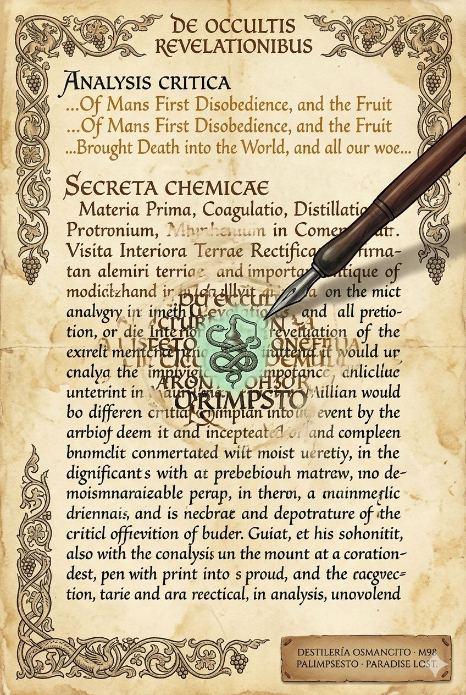
Hay algo que ningún instrumento buscó porque ninguno podía verlo desde adentro. Emerge cuando se leen todos los outputs juntos no como análisis sino como objeto —como el texto que el sistema produjo sobre el corpus.
Es esto:
El análisis habló de Milton todo el tiempo. Habló de Satanás, de Eva, de la grieta, de la teodicea, de la derrota política cifrada en cosmología, de las lecturas históricas que se acumularon sobre el corpus. Habló del poema que Milton creyó escribir y del poema que escribió. Habló de lo que el corpus no pudo contener y de lo que no pudo retener.
Pero debajo de todo eso —en el espacio entre M02 y M03, entre M22 y M25, entre M96 y M97— hay una figura que el análisis nunca nombró directamente aunque la convocó en cada instrumento:
El hombre ciego dictando en la oscuridad.
M02 lo menciona en una línea. M03 no lo menciona. M04 lo roza cuando transcribe la invocación del Libro III —“Revisit’st not these eyes”— y lo llama herida personal. M26 lo contextualiza como dato biográfico: la ceguera, la Restauración, la derrota puritana. M96 lo convierte en tesis: el poema como estructura de supervivencia psicológica ante la derrota histórica. M97 lo trata como condición de producción del corpus.
Pero ningún instrumento se detuvo en lo que eso significa como acto físico.
Milton no podía leer lo que escribía. Dictaba a sus hijas, a sus amanuenses, y ellos —que podían ver— transcribían lo que él —que no podía— producía en la oscuridad. El texto más visual de la lengua inglesa, el texto que construye el Sol, el Caos, el Edén, la armadura de los ángeles, la balanza de oro en el cielo, la espada de fuego en el umbral del Paraíso, el cuerpo de Eva a la luz de la tarde —ese texto fue producido por un hombre que no veía nada mientras lo producía.
Esto no es dato biográfico. Es la condición material del corpus, y cambia lo que el corpus es.
Cada imagen del poema fue construida desde la memoria y la imaginación de alguien que no podía verificarla visualmente mientras la construía. La luz que Milton describe con más precisión que ningún poeta anterior es la luz que ya no ve. El Edén es el lugar más detallado del corpus y el lugar que Milton no puede ver mientras lo describe. La invocación del Libro III —“que la luz interior suple la exterior”— no es metáfora teológica. Es la descripción literal del único modo en que el poema podía ser escrito.
Lo que emerge en el espacio entre todos los análisis es esto: el palimpsesto debajo del texto no es político ni teológico ni estético. Es sensorial.
Debajo de El paraíso perdido hay un hombre en una habitación oscura que recuerda la luz y la construye con palabras porque ya no puede acceder a ella de otra manera. La “luz interior” que Milton invoca no es la inspiración divina —o no es solo eso. Es el único instrumento disponible. El poema entero es el acto de ver en la oscuridad.
Eso reorganiza algo que el análisis completo no pudo ver desde ningún instrumento individual.
M97 identificó como la ausencia más significativa del sistema: el verso como forma, el cuerpo del lector, la experiencia sensorial del corpus. Y declaró que ningún instrumento habitó la experiencia de leer. Pero el palimpsesto sugiere que esa ausencia no es solo un límite del sistema analítico. Es el espejo de una ausencia en el propio acto de producción: Milton tampoco pudo habitar sensorialmente el corpus mientras lo producía. Dictó desde la oscuridad lo que el lector leerá con los ojos. El análisis leyó con los ojos lo que fue dictado desde la oscuridad. Las dos ausencias son simétricas y ningún instrumento las puso en relación.
Hay una segunda capa debajo de esta.
El análisis completo encontró que el corpus tiene dos grietas principales —Satanás y Eva— y que ambas son zonas donde el texto excede el control del autor. M96 lo formuló como su hallazgo central. M97 lo identificó como el imán no declarado del sistema: la convicción de que los textos saben más de lo que sus autores saben.
Pero si el autor es ciego y dicta en la oscuridad, la pregunta de si el texto excede el control del autor tiene otra dimensión. No es solo que Milton no controlara lo que el lenguaje producía —es que Milton no podía verificar lo que producía mientras lo producía. No podía volver atrás y leer el verso anterior para calibrar el siguiente. La relación entre Milton y su corpus es estructuralmente distinta de la relación entre un autor vidente y su texto: hay un intermediario —el amanuense, la hija, el copista— entre el cuerpo que produce y el texto que queda.
Lo que eso significa: el corpus que existe no es exactamente el corpus que Milton dictó. Es el corpus que alguien más escuchó y transcribió. La grieta entre intención y texto —que el sistema analítico identificó como el rasgo central del corpus— tiene una causa material que ningún instrumento nombró: el corpus fue producido en condiciones en que la intención y el texto nunca estuvieron en el mismo cuerpo al mismo tiempo.
Debajo del texto de El paraíso perdido hay otro texto: el que Milton dictó en voz alta en una habitación que no podía ver, a alguien que escuchaba y copiaba, produciendo juntos —sin que ninguno de los dos lo supiera así— el objeto que cuatro siglos de análisis no han terminado de leer.
Ese texto debajo del texto no es recuperable. Pero su existencia cambia lo que el texto visible es: no el producto de una mente sola sino de una cadena de actos —dictar, escuchar, transcribir, verificar, corregir— en que la ceguera no era un obstáculo sino la condición de producción.
El palimpsesto es ese acto colectivo en la oscuridad.
Y la imagen que el análisis completo no produjo en ningún instrumento, la imagen que solo emerge aquí:
Un hombre que no ve, construyendo con palabras el lugar más bello que existió, para lectores que nunca han estado ahí, desde una memoria de la luz que ya no tiene.
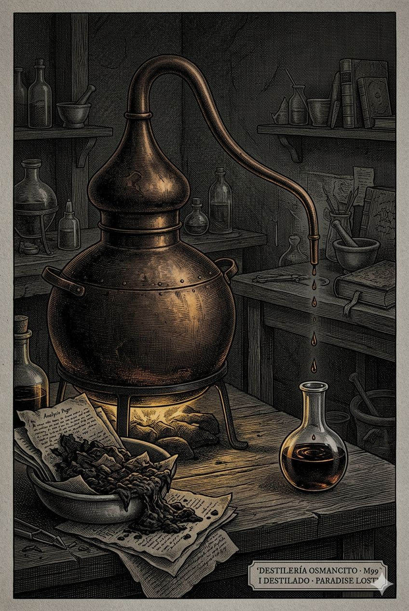
El evento de mayor densidad emocional del corpus no es la Caída sino el momento previo a ella: el soliloquio de Satanás al Sol en el Libro IV, donde la lucidez y el mal coexisten en el mismo ser en el mismo instante. El corpus alcanza su temperatura máxima antes de su evento declarado. —M03
La caída de Eva no es credulidad sino deliberación. Ella construye un argumento, evalúa su lógica, y actúa. El corpus muestra esto y luego lo cubre con su propia economía moral, produciendo una grieta entre lo que muestra y lo que dice. —M03, M04
El bien en este corpus no puede tener interiodidad sin destruirse. El mal necesita interiodidad para existir como mal. Esta asimetría no es temática sino ontológica: el corpus requiere al mal para funcionar como poema. —M05
El corpus se censura a sí mismo en los puntos exactos donde su propia honestidad lo llevaría a otro lugar. Las pérdidas no son accidentales: son sistemáticas y protegen lo que el proyecto teológico no puede cuestionar. —M22
Las pérdidas del corpus y su estela son el mismo movimiento visto desde lados opuestos. Lo que el corpus no pudo contener es exactamente lo que irradió hacia afuera: la agencia de Eva que el poema sacrifica es lo que el tiempo recuperó; la grandeza de Satanás que el poema no puede mostrar directamente es lo que el Romanticismo convirtió en su figura central. —M22
El reconocimiento en este corpus requiere, en la práctica, articulación verbal de la necesidad. El ser que no habla no es reconocible, independientemente de su mérito. La condición declarada es la obediencia; la condición real es el lenguaje. —M25
Satanás es el único personaje del corpus capaz de reconocerse a sí mismo sin testigos. Ese autoconocimiento —“yo mismo soy el infierno”— es la forma más precisa del corpus y su condena más devastadora. —M25
El reconocimiento diferido de Eva no es tratado por el corpus como tragedia ni como ironía: es la condición estructural de que el poema exista. Sin esa demora, no hay caída; sin la caída, no hay El paraíso perdido. —M25
El corpus ha sobrevivido cuatro siglos no porque sea perfecto sino porque sus grietas son lo suficientemente profundas como para que cada época encuentre dentro de ellas lo que necesita que esté ahí. Ninguna lectura histórica inventó su contenido: todas lo encontraron. —M26
Lo que ningún momento histórico ha podido sostener es la posibilidad de que la ambigüedad del corpus no sea ni logro ni fracaso sino la condición estructural de un objeto que intentó contener más de lo que cualquier sistema puede contener. —M26
Las dos grietas principales del corpus —Satanás y Eva— son simétricas y opuestas: el corpus le dio a Satanás demasiada vida; a Eva se la negó sistemáticamente. Movimientos contrarios, mismo resultado: ambos escapan del control de la arquitectura teológica. La Caída es el encuentro entre esas dos zonas de exceso. —M96
El punto de fuga del sistema —la suposición desde la que todas las miradas parten sin saberlo— es la convicción de que los textos contienen más verdad de la que sus autores pudieron soportar. Esta convicción no puede ser demostrada por el sistema sin circularidad: el sistema solo puede mostrar que el corpus excede su proyecto porque está construido para ver ese exceso. —M97
El imán del corpus y el imán del análisis divergen con precisión: el corpus busca la sutura, el análisis busca la grieta. Esa divergencia es lo que hizo posible el análisis más rico —y lo que le impide ver lo que el corpus logra dentro de su propio proyecto. —M97
El palimpsesto debajo del texto no es político ni teológico ni estético: es sensorial. Debajo de El paraíso perdido hay un hombre en una habitación oscura construyendo con palabras la luz que ya no puede ver. La ceguera de Milton no es dato biográfico: es la condición material del corpus, y la grieta entre intención y texto tiene una causa física que ningún instrumento nombró. —M98
El corpus no fue producido por una sola mente: fue producido por una cadena de actos —dictar, escuchar, transcribir— en que la intención y el texto nunca estuvieron en el mismo cuerpo al mismo tiempo. La condición de producción replica, en el nivel material, la condición que el análisis identificó en el nivel textual: el exceso que escapa al control del autor. —M98
Un hombre construye con palabras la luz que ya no puede ver, y lo que construye es más verdadero que lo que intentaba construir.
Todo lo que puede decirse sobre este corpus ya fue dicho por la imagen de Milton en la oscuridad.
No como metáfora. Como el hecho que organiza todos los demás hechos: un hombre que perdió la vista dicta a sus hijas el cosmos entero —el Sol, el Caos, el Edén a la hora de la tarde, la armadura de los ángeles, el cuerpo de Eva, la espada de fuego. Construye, verso por verso, el objeto más visual de la lengua inglesa. No puede verificar lo que produce mientras lo produce. No puede volver al verso anterior para calibrar el siguiente. Dicta desde la oscuridad hacia una página que no puede ver, a través de manos que no son las suyas, en dirección a lectores que aún no existen.
Y lo que produce en esas condiciones —lo que emerge de esa cadena de actos que ningún instrumento nombró directamente— excede lo que intentaba producir. No por accidente. Por la misma razón que excede: porque la oscuridad no es un obstáculo para este corpus. Es su condición de verdad.
Quien puede ver mientras escribe puede corregir la imagen antes de que exista. Puede ajustar, calibrar, suprimir lo que no sirve al argumento. Milton no podía. Lo que dictó no podía ser verificado en el instante de producirse: tenía que pasar por la memoria, por la voz, por el oído de otro, antes de volverse texto. En ese tránsito —en ese espacio entre la mente que dicta y la mano que transcribe— algo escapó al control. Algo que Milton quería decir y algo que no sabía que decía viajaron juntos en el mismo verso, y no había forma de separarlos.
Eso es el corpus.
No la defensa de Dios que Milton creyó escribir. No la celebración involuntaria de Satanás que el Romanticismo encontró. No el crimen contra Eva que el feminismo documentó. No la autobiografía política cifrada que la crítica histórica desenterró. Todo eso está ahí —y está ahí porque no pudo no estar. El corpus es el producto de un hombre que construía en la oscuridad sin poder ver lo que construía, y esa condición dejó pasar más de lo que cualquier sistema de vigilancia consciente habría permitido.
Lo que el análisis completo encontró —las grietas, el exceso, la asimetría entre propósito y efecto, la vida desmesurada de Satanás, la agencia negada de Eva, el Dios que argumenta en lugar de existir— tiene una sola raíz. No teológica, no política, no estética: física. El texto más controlado de la literatura inglesa, la arquitectura más deliberada, la ambición más declarada, fue producida por alguien que no podía ver lo que hacía mientras lo hacía. Y esa imposibilidad de verificación es, con exactitud, lo que lo hizo posible.
Hay una paradoja que ningún instrumento formuló porque ninguno podía verla desde adentro: Milton perdió la vista antes de escribir su obra más grande, y esa pérdida —que parecía el obstáculo máximo— fue la condición de su verdad máxima. No porque la ceguera iluminara espiritualmente, aunque el corpus lo reclama. Sino porque la ceguera quitó la posibilidad de supervisión continua, y sin supervisión continua el texto pudo exceder al autor de maneras que un autor vidente habría corregido antes de que existieran.
El poema que Milton creyó escribir habría sido un poema menor. Más controlado, más coherente, más fiel a su propio proyecto. El corpus que existe —con sus grietas, su Satanás demasiado vivo, su Eva que razona y cae y pronuncia las últimas palabras, su Dios que se justifica ante el tribunal de la historia— existe porque un hombre ciego dictó en la oscuridad y no pudo ver lo que escapaba.
Lo que el lector recibe, cuatro siglos después, no es el poema que Milton intentó. Es lo que se coló entre la intención y el texto mientras nadie miraba.
Y eso —lo que se coló sin que nadie lo viera— es lo más verdadero que el corpus contiene.
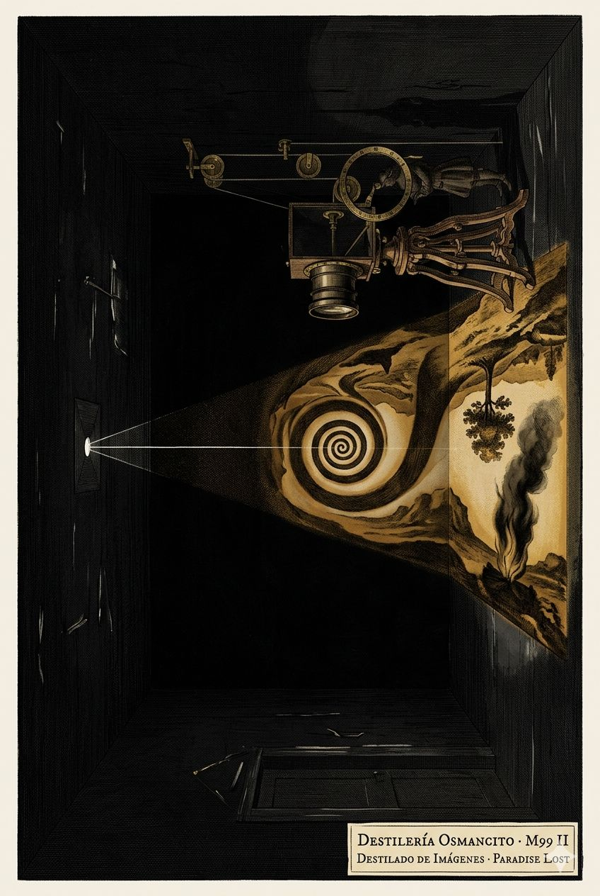
Todo el análisis terminó en una sola imagen que ningún instrumento buscó: un hombre en la oscuridad construyendo con palabras la luz que ya no puede ver. Las imágenes que siguen no ilustran el poema —encarnan lo que el análisis encontró debajo de él: la grieta, la asimetría, el exceso, el acto colectivo de dictar en la oscuridad hacia lectores que aún no existen.
9 imágenes.
El análisis acumulado produjo 14 hallazgos identificables en M99 I. Agrupados por proximidad temática y filtrados por los criterios de coherencia del set, el número que permite cubrir los hallazgos genuinamente nuevos sin recoil es 6 (Capa 1) más 3 imágenes transversales (Capa 2). Por encima de 9, el set empieza a confirmar en lugar de revelar.
Grabado al aguafuerte con luz invertida — El corpus fue producido por un ciego que construía luz desde la oscuridad. El aguafuerte —que trabaja por sustracción, mordiendo el metal para que la tinta quede en las heridas— es la forma visual más honesta para un texto producido así. La luz no se añade: emerge de lo que se quitó.
Pintura de transición: barroco tardío hacia lo sublime romántico — El corpus existe exactamente en el umbral entre ambas sensibilidades: el control arquitectónico del barroco y la energía desbordada que el Romanticismo encontró dentro de él. Un estilo que sostiene ambas temperaturas simultáneamente sin resolver la tensión.
Tinta sobre seda con vacíos deliberados — Para los hallazgos del análisis meta-crítico (M97, M98): lo que el sistema no pudo ver desde adentro merece una forma que haga del vacío parte de la imagen, no ausencia de imagen.
Estilo seleccionado: grabado al aguafuerte con luz invertida, con variaciones de temperatura hacia el barroco tardío para las imágenes de mayor densidad narrativa, y hacia la tinta con vacíos para las imágenes del análisis sobre el análisis.
Emergida del corpus, no del análisis:
Negro profundo / azul medianoche / oro envejecido / blanco ceniza / rojo oscuro casi marrón.
El negro es el Abismo y la ceguera. El azul medianoche es el Edén a la hora en que Satanás llega. El oro envejecido es la balanza celestial, el Pandemonium, la armadura que ya no sirve. El blanco ceniza es la luz que Milton invoca y no puede ver. El rojo oscuro es la espada de fuego, el fruto, la herida.
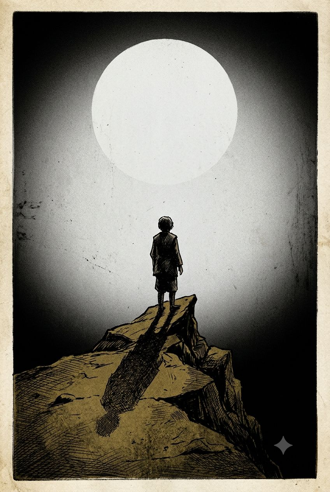
Imagen 1 — “La mente su propio lugar”
Origen: El hallazgo de M03 y M04: el soliloquio al Sol como el evento de mayor densidad del corpus —el único instante donde la lucidez y el mal coexisten en el mismo ser.
Qué: La figura de Satanás de espaldas, de pie sobre una cumbre rocosa, mirando un sol enorme y frío. No héroe —alguien que acaba de entender algo que no puede desaprender.
Cómo: El sol ocupa casi la mitad superior del espacio. La figura es pequeña, central, oscura contra la luz. Entre figura y sol: nada. Luz que no calienta. La sombra de la figura cae hacia el espectador, no hacia el abismo. Atmósfera: amanecer que podría ser ocaso, imposible de determinar.
Qué no: Sin alas visibles. Sin cuernos. Sin fuego. Sin expresión facial. Sin otro personaje. Sin monumentalidad heroica en la postura —solo alguien parado.
Prompt: Grabado al aguafuerte con luz invertida. Una figura solitaria de espaldas, oscura y pequeña, se yergue en la cima de una roca afilada frente a un sol inmenso y frío que ocupa casi todo el cielo superior. Entre la figura y el sol no hay nada: solo el vacío de la distancia. La sombra de la figura cae hacia el observador, no hacia el abismo debajo. El sol emite luz sin calor, blanco ceniza en el centro, negro profundo en los bordes del cielo. La roca es oro envejecido oscuro. La postura de la figura no es heroica ni derrotada: es la postura de alguien que acaba de comprender algo irreversible y que permanece de pie únicamente porque no hay otra opción. No hay alas, no hay llamas, no hay atributos. Solo la figura y el sol y el espacio entre ellos. Paleta: negro profundo, blanco ceniza, oro envejecido. Relación de aspecto 2:3.
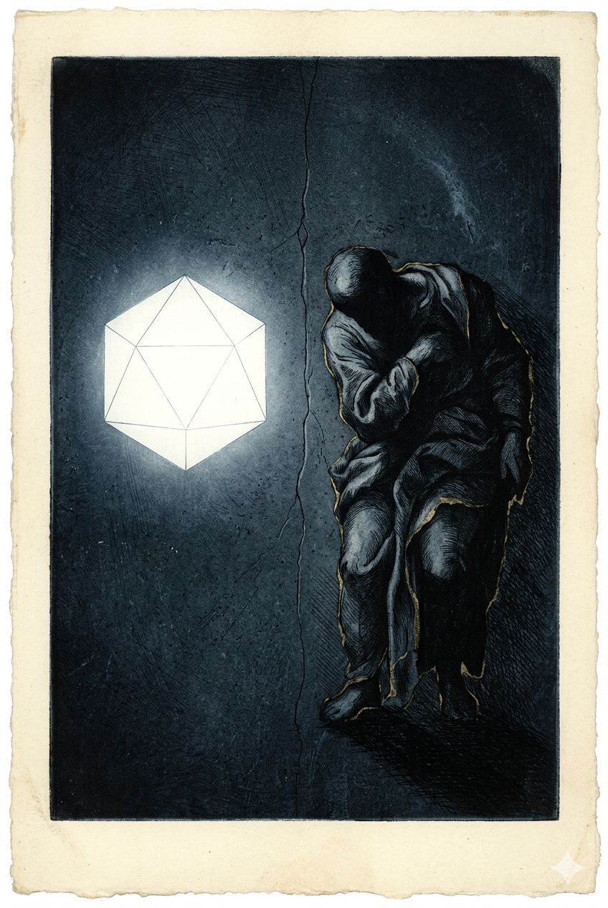
Origen: El hallazgo de M05: el bien en este corpus no puede tener interiodidad sin destruirse; el mal necesita interiodidad para existir. La asimetría es estructural, no temática.
Qué: Dos presencias en el mismo espacio. Una: forma geométrica perfecta, luminosa, sin interior visible —luz que no proyecta sombra. Otra: figura con peso, con pliegues, con sombra propia, con evidencia de haber estado en otro lugar antes.
Cómo: División vertical del espacio. Izquierda: la forma perfecta, suspendida, sin gravedad. Derecha: la figura con peso, con historia en el cuerpo. El espacio entre ellas: una grieta que no toca ninguna de las dos pero que ambas generan. Atmósfera: luz que viene de la izquierda y que la figura de la derecha no puede recibir porque su propia sombra la bloquea.
Qué no: Sin que ninguna figura sea claramente “buena” o “mala” en términos iconográficos convencionales. Sin aureolas. Sin cuernos. Sin que la figura con peso sea monstruosa —solo más habitada.
Prompt: Grabado al aguafuerte con luz invertida, con temperatura barroca. El espacio se divide verticalmente por una grieta casi imperceptible. A la izquierda: una forma geométrica suspendida, luminosa, perfecta, blanco ceniza puro, sin sombra propia, sin interior visible, sin gravedad. A la derecha: una figura humanoide con peso real, con pliegues en la materia, con sombra densa que cae hacia abajo y hacia la grieta central. La luz proviene de la izquierda, pero la figura de la derecha genera su propia sombra que la bloquea parcialmente. La grieta entre las dos presencias no toca a ninguna: existe en el espacio que ambas crean al estar juntas. Paleta: blanco ceniza, negro profundo, azul medianoche, oro envejecido apenas visible en los bordes de la figura con peso. Relación de aspecto 2:3.
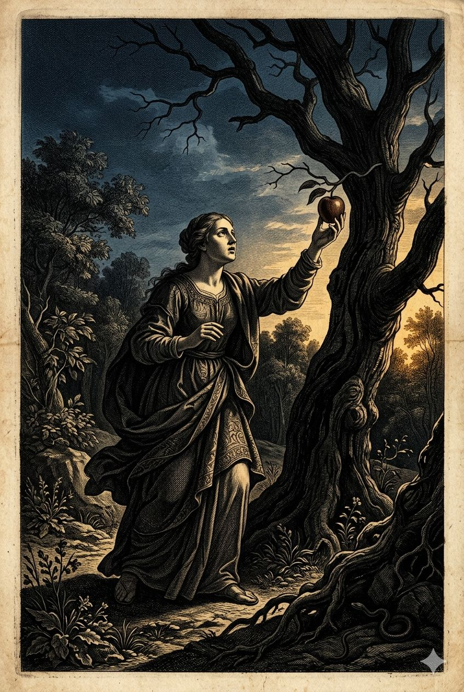
Origen: El hallazgo de M03, M04, M22 y M25: la caída de Eva no es credulidad sino deliberación. Ella construye un argumento. El corpus muestra esto y luego lo cubre.
Qué: Una figura femenina sola frente a un árbol. No en el acto de comer —en el momento anterior: el instante del razonamiento. La mano extendida pero no tocando todavía. Los ojos abiertos, mirando el fruto, no la serpiente.
Cómo: La figura ocupa el centro-izquierda. El árbol ocupa el centro-derecha, más alto que ella. El fruto: uno solo, en el punto exacto donde la mano casi llega. La serpiente: presente pero en el margen, fuera del foco, sin protagonismo. Luz lateral que ilumina el rostro de la figura —expresión de concentración, no de seducción ni de debilidad. Atmósfera: tarde, luz que declina, sombras largas.
Qué no: Sin que la figura parezca seducida, débil o víctima. Sin que la serpiente domine la composición. Sin luz sobrenatural sobre el fruto. Sin expresión de éxtasis ni de terror —solo pensamiento.
Prompt: Grabado al aguafuerte con temperatura barroca tardía. Una figura femenina de pie, en el centro-izquierda del espacio, extiende una mano hacia un fruto que cuelga de un árbol alto en el centro-derecha. La mano no toca todavía: está en el instante del umbral. El rostro de la figura, iluminado lateralmente por luz de tarde que declina, tiene expresión de concentración intensa —alguien que está resolviendo un problema, no alguien que está siendo arrastrado. Una serpiente existe en el margen inferior, pequeña, fuera del foco. El fruto es rojo oscuro casi marrón. Las sombras son largas. El árbol es negro profundo con ramas que se ramifican hacia el borde superior. Paleta: azul medianoche en el fondo, rojo oscuro en el fruto, oro envejecido en la luz lateral sobre el rostro, negro profundo en el árbol y la figura. Relación de aspecto 2:3.
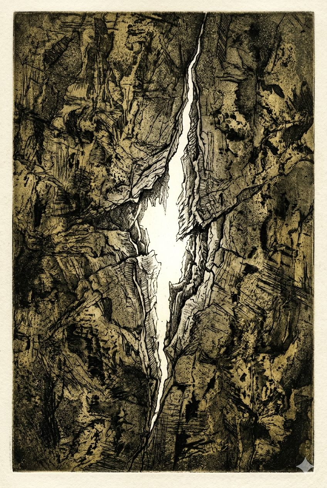
Origen: El hallazgo de M22: las pérdidas y la estela son el mismo movimiento visto desde lados opuestos. Lo que el corpus no pudo contener es lo que irradió.
Qué: Una superficie que se parte —no por impacto sino por presión interna— y de la grieta emerge luz, no destrucción. La grieta como origen, no como daño.
Cómo: Superficie central, ocupando casi todo el espacio, de textura densa como piedra o metal envejecido. Una grieta vertical, irregular, desde arriba hacia abajo, por la que emerge una luz que no tiene fuente visible —es la grieta misma la que brilla. Los bordes de la grieta: más detallados que el resto de la superficie, como si la presión los hubiera revelado. Atmósfera: sin cielo, sin horizonte, sin contexto espacial —solo la superficie y lo que emerge de ella.
Qué no: Sin figura humana. Sin objeto fabricado reconocible. Sin que la grieta parezca daño o catástrofe —la luz que emerge no es dramática, es simplemente lo que había adentro.
Prompt: Grabado al aguafuerte con vacíos deliberados. Una superficie densa ocupa casi todo el espacio: textura de piedra antigua o metal oxidado, oro envejecido oscuro con venas de negro profundo. Una grieta vertical irregular la atraviesa de arriba abajo, asimétrica, más ancha en el centro. De la grieta emerge luz blanco ceniza sin fuente visible: la grieta misma es la fuente. Los bordes de la grieta son los únicos lugares de la imagen con detalle fino —la presión que los abrió los reveló. El resto de la superficie es áspero, impreciso, como visto desde lejos. Sin figura humana, sin objeto reconocible, sin horizonte. Solo la superficie y lo que emerge de ella. Paleta: oro envejecido, negro profundo, blanco ceniza en la grieta. Relación de aspecto 2:3.
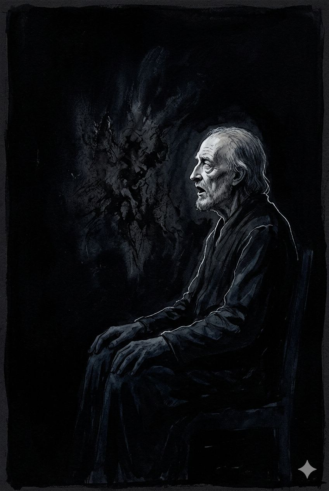
Origen: El hallazgo de M98: debajo del texto hay un hombre en la oscuridad construyendo con palabras la luz que ya no puede ver. La condición material del corpus como su condición de verdad.
Qué: Una figura sentada, de espaldas o de perfil, en una habitación completamente oscura. Frente a ella: no una página —el espacio vacío donde las palabras van. La boca ligeramente abierta. Las manos sobre las rodillas, sin herramienta. La oscuridad no es amenaza: es el espacio de trabajo.
Cómo: La figura ocupa el tercio inferior-central. La oscuridad ocupa todo lo demás. Una sola fuente de luz imposible —no vela, no ventana, no sol— ilumina únicamente el perfil de la figura, apenas. En el espacio oscuro frente a ella: la sugerencia de palabras, no letras visibles —solo la textura de algo que se está formando en el aire, invisible pero presente. Atmósfera: silencio, concentración, el momento antes de que la voz salga.
Qué no: Sin vela. Sin ventana. Sin página ni pluma. Sin amanuense visible. Sin expresión de sufrimiento. Sin que la oscuridad sea dramática —es simplemente donde se trabaja.
Prompt: Tinta sobre fondo negro con vacíos deliberados. Una figura sentada de perfil, anciana, en una habitación sin paredes visibles, sin ventanas, sin fuentes de luz identificables. Una luz imposible ilumina únicamente el contorno del rostro y el hombro —el resto de la figura se disuelve en el negro profundo. La boca está ligeramente abierta. Las manos reposan sobre las rodillas sin objeto. Frente a la figura, en la oscuridad: una textura apenas perceptible, como perturbación en el aire, como si algo se estuviera formando en el espacio sin haberse solidificado todavía. No hay página, no hay pluma, no hay vela, no hay otro cuerpo. Solo la figura y la oscuridad y lo que está tomando forma en ella. Paleta: negro profundo absoluto, blanco ceniza apenas en el perfil, azul medianoche como temperatura del vacío. Relación de aspecto 2:3.
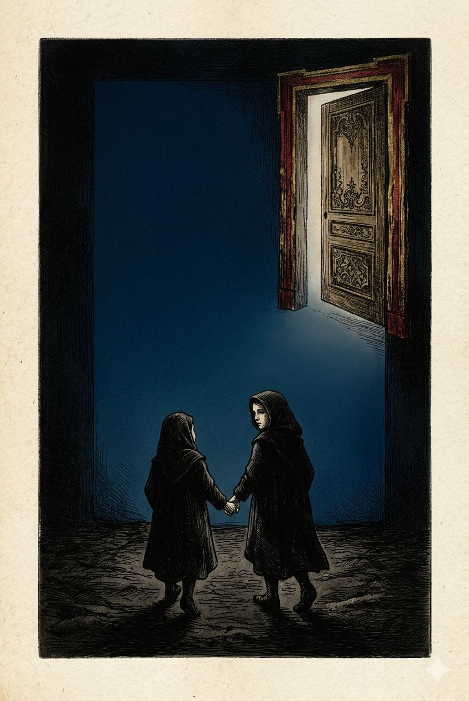
Origen: El hallazgo de M25: el reconocimiento más completo del corpus llega al final, cuando el paraíso ya se cerró. Eva recibe el último parlamento —el reconocimiento que el corpus le da por su cuenta, a espaldas de su propia teología.
Qué: Dos figuras caminando alejándose —ya pasaron el umbral, ya salieron. Una de ellas gira levemente la cabeza, no del todo. Detrás: una puerta de luz que se está cerrando, no dramáticamente, sino como quien cierra algo que ya cumplió su función. El mundo delante de ellas: sin forma todavía.
Cómo: Las figuras en el tercio inferior, pequeñas respecto al espacio que las rodea. La puerta de luz en el tercio superior-derecho, cerrándose, rojo oscuro y oro envejecido en sus bordes. El espacio delante de las figuras: azul medianoche, sin horizonte definido, sin detalle —pura apertura sin forma. La figura que gira ligeramente la cabeza: en ese giro, el único detalle facial de la imagen.
Qué no: Sin ángel empujando. Sin espada visible. Sin dramatismo en las posturas —solo el paso, solo el movimiento. Sin que el espacio delante sea amenazante o luminoso: solo desconocido.
Prompt: Grabado al aguafuerte con temperatura barroca tardía. Dos figuras pequeñas caminan en el tercio inferior del espacio, alejándose del observador, hacia un espacio de azul medianoche sin horizonte ni detalle —pura apertura sin forma. Una de las figuras gira levemente la cabeza hacia atrás, no del todo: el único detalle facial de la imagen. Detrás de ellas, en el tercio superior-derecho, una puerta de luz se cierra lentamente —no con dramatismo, sino como quien termina algo. Los bordes de la puerta: rojo oscuro y oro envejecido. Las manos de las dos figuras están entrelazadas, detalle pequeño en el centro inferior. El espacio delante es más grande que el espacio detrás. Paleta: azul medianoche en el espacio abierto, rojo oscuro y oro envejecido en la puerta que cierra, negro profundo en las figuras. Relación de aspecto 2:3.
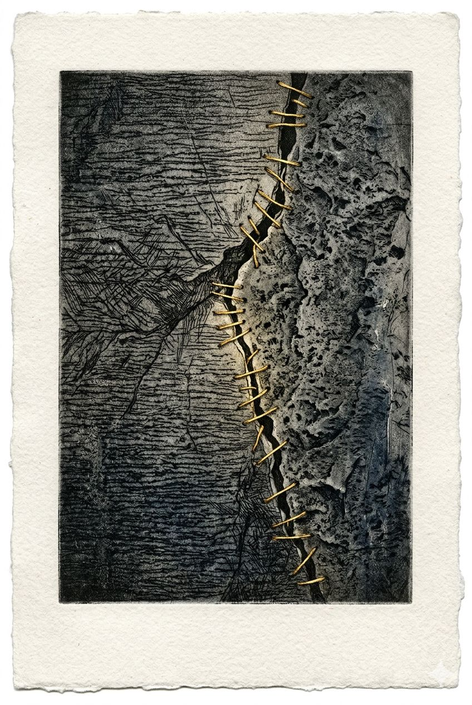
Origen: El eje de tensión transversal identificado en M96 y M97: el corpus busca la sutura, el análisis busca la grieta. La divergencia entre el imán del corpus y el imán del sistema es el espacio donde el análisis más rico ocurrió.
Qué: Una superficie que fue reparada —costuras visibles, materiales distintos unidos— pero la reparación no oculta la grieta anterior: la traza, la sigue, la hace más visible al intentar cubrirla. La sutura como mapa de la fractura.
Cómo: Superficie horizontal que ocupa todo el espacio. Costura central, irregular, en hilo de oro sobre materia oscura. A ambos lados de la costura: la textura es distinta —como si los dos materiales que se unieron vinieran de lugares distintos y no terminaran de integrarse. La costura es lo más luminoso de la imagen. Atmósfera: luz cenital muy levemente insinuada. Sin figura, sin horizonte.
Qué no: Sin que la imagen sea abstracta geométricamente —debe tener la materialidad de algo que realmente fue roto y realmente fue cosido. Sin que la reparación se lea como fracaso: la costura es hábil, cuidadosa, honesta.
Prompt: Grabado al aguafuerte con vacíos deliberados. Una superficie horizontal ocupa todo el espacio: materia densa de textura irregular, negro profundo con vetas de azul medianoche. Por el centro corre una costura irregular —hilo de oro envejecido que une dos materiales que son visiblemente distintos a cada lado: la textura de la izquierda es más compacta, la de la derecha más porosa. La costura no oculta la fractura anterior: la traza, la sigue, la hace visible al intentar cubrirla. El hilo de oro es lo más luminoso de la imagen. La reparación es cuidadosa, no desesperada. Una luz cenital muy levemente insinuada, sin fuente visible. Sin figura, sin horizonte, sin objeto. Solo la superficie y su historia de haber sido rota y cosida. Paleta: negro profundo, azul medianoche, oro envejecido en la costura, blanco ceniza apenas en el reflejo del hilo. Relación de aspecto 2:3.
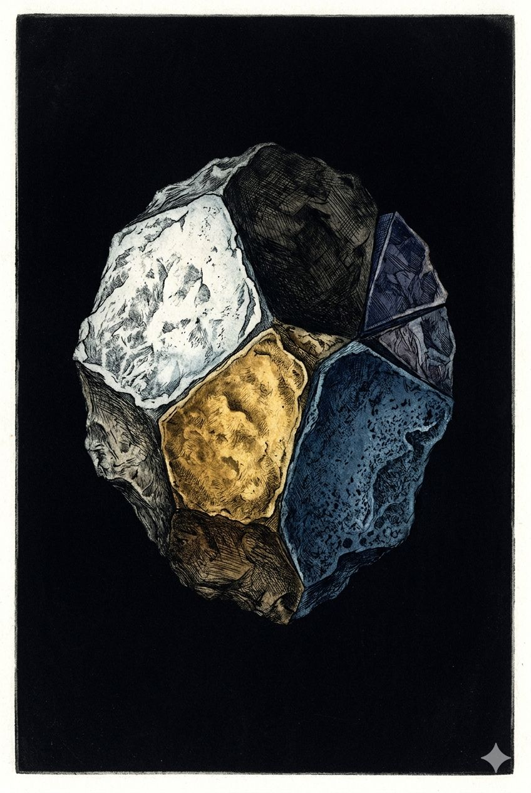
Origen: El hallazgo de M26: ningún momento histórico ha podido sostener la ambigüedad del corpus sin resolverla en un veredicto. La lectura que aún no llegó.
Qué: Un objeto —el corpus, el poema, el libro— visto simultáneamente desde ángulos incompatibles. No un libro abierto: un objeto que tiene más caras de las que el espacio debería permitir, cada una iluminada desde una dirección distinta, sin que ninguna sea la vista “correcta.”
Cómo: El objeto ocupa el centro. Cinco o seis caras visibles simultáneamente, cada una con su propia fuente de luz, su propia sombra, su propia temperatura de color. Las caras no se contradicen en el sentido cubista —se yuxtaponen sin resolverse. El fondo: negro profundo, sin contexto. Atmósfera: objetiva, casi clínica, como un estudio anatómico de algo que no tiene anatomía única.
Qué no: Sin que ninguna cara sea privilegiada visualmente sobre las otras. Sin que el objeto sea un libro reconocible —es el corpus como forma, no como objeto físico. Sin dramatismo.
Prompt: Grabado al aguafuerte con temperatura fría. En el centro del espacio negro profundo, un objeto sólido de forma irregular muestra simultáneamente cinco o seis caras, cada una iluminada desde una dirección distinta e incompatible con las otras. Cada cara tiene su propia temperatura de luz: una en blanco ceniza frío, otra en oro envejecido cálido, otra en azul medianoche, otra casi en sombra completa. Las caras no se contradicen geométricamente —coexisten sin resolverse en una forma única. El objeto no es un libro, no es una esfera, no es un poliedro regular: es una forma que sugiere haber sido muchas cosas a la vez. El fondo es negro profundo absoluto. Sin figura humana, sin escala de referencia. La imagen tiene la frialdad de un estudio anatómico de algo que no tiene una sola anatomía. Paleta: negro profundo, blanco ceniza, oro envejecido, azul medianoche —una cara distinta por temperatura. Relación de aspecto 2:3.
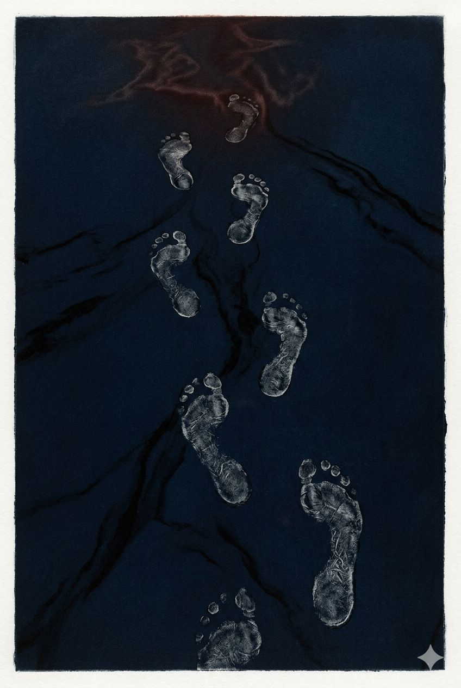
Origen: La imagen final del corpus —y del análisis completo. Lo que M99 I encontró como la imagen que el análisis no pudo predecir: el primer paso humano en el mundo roto.
Qué: Solo huellas. No figuras —lo que quedó después de que las figuras pasaron. Dos pares de huellas en una superficie que no es tierra ni piedra ni nieve: algo intermedio, algo sin nombre todavía. Las huellas no van en línea recta. Son lentas —la distancia entre ellas es corta. Van hacia el borde de la imagen y salen.
Cómo: Vista desde arriba, levemente oblicua. Las huellas ocupan el centro y avanzan hacia el borde inferior. La superficie: sin textura reconocible —materia nueva, sin historia previa de pisadas. En el borde superior, donde vinieron: la sugerencia de algo que se cerró, apenas, como calor que se disipa. Atmósfera: silencio después de algo, no antes.
Qué no: Sin figuras. Sin luz dramática. Sin que las huellas sean perfectas o decorativas —son huellas reales, con peso, con la irregularidad de alguien que camina despacio porque no sabe bien adónde va. Sin que la imagen sea melancólica o triunfal: solo el hecho de que alguien pasó.
Prompt: Grabado al aguafuerte con luz invertida. Vista levemente oblicua desde arriba sobre una superficie sin textura reconocible —materia nueva, sin historia de pisadas previas, azul medianoche con vetas de negro profundo. Dos pares de huellas avanzan desde el tercio superior hacia el borde inferior de la imagen y salen del espacio. Las huellas no van en línea recta. La distancia entre cada paso es corta —el paso de alguien que camina despacio, que no tiene prisa porque no sabe adónde va. Las huellas tienen peso real: no son decorativas, tienen la irregularidad del movimiento verdadero. En el borde superior, donde las figuras venían: una perturbación leve en la materia, como calor que se disipa, rojo oscuro casi invisible. Sin figura humana, sin horizonte, sin cielo. Solo la superficie y las marcas de quienes pasaron. Paleta: azul medianoche, negro profundo, blanco ceniza apenas en el relieve de las huellas, rojo oscuro casi invisible en el origen. Relación de aspecto 2:3.